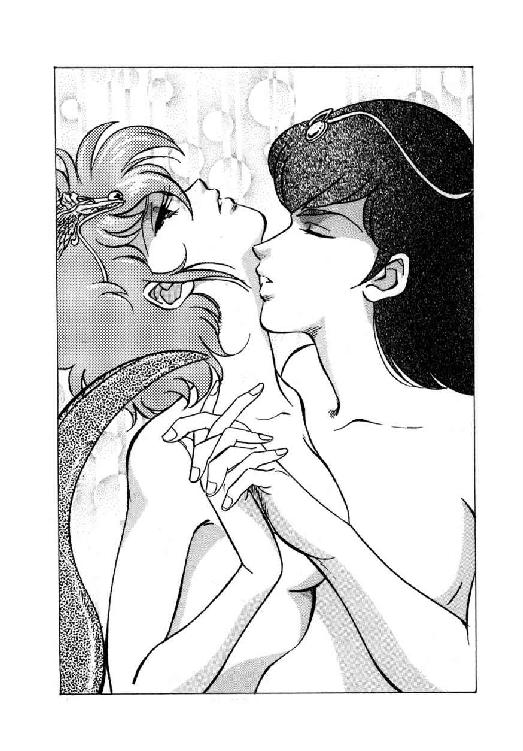

| 魔獣戦士ルナ・ヴァルガー＜１０＞突入 | |
| 秋津 透 | |
| (2015) | |
魔獣戦士ルナ・ヴァルガー
⑩突入
秋津 透
本作品の全部または一部を無断で複製、転載、配信、送信したり、ホームページ上に転載することを禁止します。また、本作品の内容を無断で改変、改ざん等を行うことも禁止します。
本作品購入時にご承諾いただいた規約により、有償・無償にかかわらず本作品を第三者に譲渡することはできません。
本作品を示すサムネイルなどのイメージ画像は、再ダウンロード時に予告なく変更される場合があります。
本作品は縦書きでレイアウトされています。
また、ご覧になるリーディングシステムにより、表示の差が認められることがあります。
登場人物
ルナ・ド・リムズベル リムズベル公国の第二公女。魔獣と合体中。
魔獣ヴァルガー 伝説の大魔獣。無敵の威力を誇る。
ミル・ユード カルバドク侯爵家の嫡男卿。ルナの婚約者。
レイピア・ロナ ミル・ユードに忠誠を誓う女戦士。
ギルバート・エゼン 黄金飛行竜を召喚する魔道士。どっか一本ぬけている。
ジェニファー・ラゼル・ユード カルバドク侯爵夫人。ミル・ユードの義母。
ドン・ドレスデン ドレスデン陸上海賊艦隊司令官。チャフの現在の主人。
ファンキー・ボーン ギルバートとチャーランに復讐を誓う召喚術師。
チャフ 性悪の蝙蝠猫。陸上海賊ドン・ドレスデンの配下。
テック・ハラディ リドルの街に住む、奇妙なナイフ使い。
ヴェーダ・ピリス リドルの街で『斧剣亭』を経営する豪傑女医。
ノワール・ダンバス ダンバス帝国の新皇帝。通称、黒竜帝。
ザシャム 伝説の大魔道士、と思われる老人。
バト・ロビス ダンバス帝国の元部隊長。無謀戦士と通称される。
第一章 いざ、帝都へ！
１
「へーえ、これが強化斬魔獣剣なの？」
カルバドク侯邸の地下、大魔道士ザシャムの作業場に当てられている一室に入っていった巨竜魔獣戦士ルナ・ド・リムズベルは、石造りの台の上に置かれた優雅な姿の長剣を見やって、ちょっと不審そうに眉を寄せた。
「以前の斬魔獣剣と、あんまり変わってないように見えるけど」
「いえいえ、そんな事はありませんよ」
新たに大魔道士の弟子となり、斬魔獣剣の強化過程にもずっと関わってきた魔道士スミス・チョーサーが、にこにこと笑いながら首を振る。
「ほら、欛の部分を良く御覧になって下さい。今までは、女性像の胸元に宝玉が抱かれる形になっていましたよね。しかし今度は、女性像が頭上に宝玉を掲げる形に変わったのです。これだけ大きな変化があるのに、あんまり変わってないなどと言われては、斬魔獣剣がつれーやーなんちゃって」
「あーあ......」
久方ぶりに至近距離で炸裂したチョーサーのしょーもない駄洒落に、ルナは思わず額を押さえた。しかし、考えてみれば、彼は駄洒落の能力を認められて大魔道士に弟子入りしたのだから、駄洒落を飛ばすのがいわば存在意義、いまさら苦情を言ったところで始まらない。彼女は素早く態勢を立て直し、やはりにこにこしながら弟子の傍に立っている大魔道士に視線を向けた。
「それで、大魔道士様。形の違い以外に、この斬魔獣剣、何がどう強化されたんです？」
「うむ。まず基本的には、防御力が大きく上がっておる」
大魔道士は、いかにも権威ありげな口調でゆっくりと説明する。
「もともと斬魔獣剣は、その名称とは裏腹に、攻撃より防御に有利な武器でのう。防御に徹すれば、魔獣の能力による攻撃からは、使用者をほぼ完璧に守ることができる。しかし、攻撃に出た場合、魔獣がよほど無防備な状態、たとえば頭脳体抜きの状態でもない限り、致命的な損傷を与えるのは難しいのじゃ。ましてや、今回お主らが闘う相手は、魔獣四天王の一体、闇の魔獣。生半可に攻撃に出る事よりも、まず、敵の攻撃を防御する事を考えねばならん」
「はあ、なるほど。それで、攻撃よりも防御を重視したわけですか」
軽く眉を寄せ、公女は半分咎めるような目つきで大魔道士を見据えた。
「だけど、防御してるだけじゃ勝てませんよ。強化斬魔獣剣が防御用の武器なら、どうやって闇の魔獣を攻撃するんです？」
「魔獣を斃せる者は、魔獣のみ。攻撃は、魔獣戦士がするんじゃ」
当然のような口調で、大魔道士は返答する。そして、さすがに一瞬あっけにとられたルナに向かって、ごく淡々と言葉を継ぐ。
「もちろん、お主の合体している巨竜魔獣が、闇の魔獣に比較すると力量的にいささか劣る事は承知しておる。しかし、強化斬魔獣剣の防御力を加えれば、少なくとも一撃で斃される事はなかろう。これは楽観かも知れぬが、戦闘方法によっては互角に近い勝負ができるのではないかと、わしは予測しておるのじゃ」
「だけど、あの、斬魔獣剣の防御力が有効なのは、使用者に対してだけでしょう？」
今更みっともないかな、と多少は思わないでもなかったが、やっぱりこれは明確にしておかなくてはならない。ルナは、狼狽と不審が混ざったような調子で、泰然としている大魔道士に訊ねた。
「魔獣戦士が斬魔獣剣の蒼い閃光を浴びたら、敵と一緒に損傷を受けちゃうわけだから、防御力は加わらないと思うんですけど」
「うむ、その通り。そこが、斬魔獣剣と強化斬魔獣剣の最大の相違じゃ」
大魔道士は莞爾と笑みを浮かべると、傍の弟子に命じる。
「スミス・チョーサーよ、魔獣隠身冠を持って参れ。どこにあるかは、すでに調査済であろうな？」
「もちろんですとも、お師匠様。何の支障もございません、なんちゃって」
笑顔でうなずきながら、魔道士は背後の棚に向かう。そこへ、大魔道士が苦笑混じりの声をかける。
「そこではない。右側の棚じゃ。まったくお主に任せておいたら、みすみす時間を無駄にするばかりじゃの」
「いやー、はっはっは。たなったものではありませんね」
なごやかに師匠と駄洒落を応酬しながら、魔道士は右側の棚から、繊細な拵えの小冠を持ってきた。ちょうど魔道都市にある対魔獣守護冠が作動状態になった時のように、翼を広げた女性像が冠の正面に据えられているが、その身体や翼が今にも折れそうに細い。冠そのものも、一見、針金で作られているように思えるほど華奢な構造だ。
「これが魔獣隠身冠、わしの苦心の作品じゃ」
弟子から小冠を受け取った大魔道士は、得意げな表情で一同を見回す。
「この冠は、強化斬魔獣剣と対応しておっての。これを装着しておる限り、魔獣であっても強化斬魔獣剣から損傷を受ける心配はない。逆に言えば、魔獣隠身冠をつけた魔獣に対しては、強化斬魔獣剣は効力を喪失してしまうのじゃが、それは当面、問題なかろう。まあ、魔獣公女と強化斬魔獣剣士が、お互い戦闘をするというのなら話は別じゃがな」
「じょ、冗談じゃないわ！ あたしと彼が戦闘するなんて、そんな馬鹿な事、天地が逆転したって絶対にありっこないわよ！」
眉を逆立て、ルナが真剣な声で叫ぶ。すると大魔道士は、穏やかに笑ってゆっくりとうなずいた。
「うむうむ、それなら結構、まったく大いに結構じゃ。何しろお主らは、これから緊密に協力して、強大な敵、闇の魔獣と闘わねばならんのじゃからのう。いくら仲良うしても過剰という事はない。ほっほっほっほ、ほっほっほ」
愉しげに笑いながら、大魔道士は魔獣隠身冠をルナに手渡す。
「それでは、魔獣公女よ。冠を装着してみるがよい」
「はい」
緊張した表情でうなずくと、彼女は髪飾りを外して、代わりに華奢な魔獣隠身冠を頭部に装着した。すると、冠に据えられた女性像の翼が、わずかではあるが更に大きく広がり、ほんのりと紅い光を帯びる。
「魔獣隠身冠を装着している状態では、お主は魔獣の力を利用できぬ。魔獣変身ができないのはもちろんじゃが、魔獣の超感覚も封じられる」
大魔道士が笑いを収め、一転してむしろ荘厳な口調で説明する。
「その代用というわけではないが、この状態でお主が気合をかけると、女性像の翼から光線が放たれる。人間を殺すほどの力はないが、一時的に麻痺させる程度の効果はあるはずじゃ。もっとも、そんな能力はほんの副産物にすぎん。魔獣隠身冠の真の能力は、強化斬魔獣剣との複合によって発揮されるのじゃ」
そう言うと大魔道士は、先刻からずっと黙って状況を見守っているミル・ユードに視線を向け、重々しい調子で声をかけた。
「それでは、強化斬魔獣剣士よ。お主の剣を取るがよい」
「はい」
恋人に劣らず真摯な表情でうなずいて、カルバドクの嫡男卿は強化斬魔獣剣を手に取った。すると、欛の女性像が頭上に掲げた宝玉から、ほとばしるように蒼い光輝があふれ出て、長身の青年を包み込む。
「斬魔獣剣も使用者を選ぶ剣じゃったが、強化斬魔獣剣は完全に、お主に適合するよう調整しなおしてある。もはやこの剣を使える者は、世界広しといえども、強化斬魔獣剣士のお主一人だけじゃ」
半分独言のような調子で呟くと、大魔道士はわずかに、しかし明らかに、その声に力を含ませて告げた。
「では、強化斬魔獣剣士よ。魔獣公女を、お主の剣の庇護下に入れよ」
「はいっ！」
力強い声で返答すると、ミル・ユードは強化斬魔獣剣を握る手にぐっと気合を籠める。同時に、彼の身体を包み込む蒼い光輝がすうっと範囲を広げ、彼の身長を直径とする半透明の球体に変化する。そして青年はわずかに視線を上げ、ちょっと呆然と立ちすくんでいる婚約者に向かって、小さく笑いかけた。
「おいで」
「は、はいっ！」
猛将公女らしくもなく、と言うべきか、緊張でかなり上擦った声を出し、ルナはゆっくりと恋人に歩み寄る。そして彼女が蒼い球体の中に踏み込んだ瞬間、尻尾が勝手に、ぴくんっと大きく跳ねた。
「あっ！」
「大丈夫かっ？ ルナ！」
一瞬、これ以上ないぐらい真剣な表情になって、ミル・ユードが訊ねる。しかし今度は、公女の方が微かに笑みを浮かべ、恋人に向かってうなずき返す。
「大丈夫。何ともないわ」
落ち着いた声で答えると、彼女は蒼い光輝の中に入り込み、青年の傍に寄り添った。その額に装着した魔獣隠身冠の女性像の翼が、紫色の柔らかい微光を放っている。
と、大魔道士が、光輝の中に立つ二人を見やって、莞爾と笑みを浮かべてうなずく。
「ようし、できたぞ。魔獣公女よ、強化斬魔獣剣士よ。これでお主ら二人は、対魔獣戦闘に関しては、ほぼ理想的な協力体勢を作った事になる。これなら闇の魔獣相手でも、互角に近い勝負が挑めるはずじゃ」
「互角に近い勝負、ね」
ルナが、蒼く照らされた頬に小さく苦笑を浮かべた。
「強化斬魔獣剣を加えても、まだ闇の魔獣に対して優勢ってとこまでは行かないのね」
「それはそうじゃよ。何しろ相手は、魔獣四天王の一体じゃ。他の魔獣とは、実力の水準が根本的に違う」
泰然とした口調で、大魔道士が答える。するとミル・ユードが、真摯な表情でゆっくりと首を振った。
「それでも僕たちは、勝たなくちゃならないんだ。さもないと、封印を解いた闇の魔獣が、確実に世界を壊滅させるだろう。どんなに敵が強くても、絶対に負けるわけにはいかない」
意外に淡々とした調子で言うと、青年は強化斬魔獣剣の光輝をすっと弱める。そして、台の上から鞘を取り、剣を収めて腰に差す。
「ありがとうございます、大ザシャム尊師。僕は、この生命ある限りルナと共に闘い、強化斬魔獣剣を活用して、闇の魔獣を斃すために全力を尽くす事を誓います」
「あ、あたしも！ あたしも誓います！」
慌てて、ルナが言葉を添える。すると大魔道士は、満足そうな表情でうなずいた。
「うむ、善哉、善哉。お主たちの誓約は、このわしが確かに聞いた。たとえ今後、世界の運命がどう展開しようとも、この誓約が立てられた事実は消えぬ。生命ある限り、二人の力を合わせて困難に立ち向かっていくが良い」
「はい！」
青年と公女の返答が、綺麗に一つに唱和する。と、二人の背後に巌のように立ち、ずっと無言で腕組みをしていたバト・ロビスが、わずかに眉を寄せて小さく唸った。
「ううむ。これは、事実上の結婚式ではないか」
「そうですね」
やはり、ここまでずっと沈黙していたレイピア・ロナが、静かな口調で返答する。
「大ザシャム尊師が媒酌人ですから、誰にも異議を唱える事はできないでしょう。後は、お二人が闇の魔獣とやらに勝って生き延び、帝国との紛争も何とかして解決して、幸福な結婚生活を送られる事を願うだけです」
「うむ」
嫡男卿の実の叔父にあたる無謀戦士は、とにかく小さくうなずいて、女戦士の言葉に同意した。もっとも、表情は険しく顰めたままだったが。
２
「お主らが、闇の魔獣が封印されておる地に赴くには、空から行くのが最も面倒がないじゃろう、と、わしは思う」
地下の作業室で強化斬魔獣剣と魔獣隠身冠の披露を行ない、同時に、カルバドクの嫡男卿とリムズベルの第二公女に事実上の結婚の誓約を立てさせた大魔道士ザシャムは、それから一階の一室に一同の座を移し、淡々とした調子で話を始めた。
ちなみにこの場にいる者は、地下室から上がってきた八人（大魔道士、魔獣戦士、強化斬魔獣剣士、無謀戦士、女戦士、駄洒落魔道士、料理長、有翼猫）の他に、カルバドク侯爵夫妻、ヤンリー・ユード、ギルバート・エゼン、チャーラン・ポーランの五人が加わっている。
もっとも、侯爵夫人の配慮により、海栗召喚魔道士には大量の酒が与えられ、現在では常に意識不明寸前の酩酊状態になっているので、列席していてもまったく何の役にも立たない。まあ、彼は素面でもほとんど無益な存在だから、酩酊させておいた方が静かな分だけまだ好都合だろう。
それはとにかく、大魔道士の発言を受け、飛行竜召喚魔道士がふっと気障っぽく笑い、額にかかった前髪を左手で軽く払った。
「なるほど、空からですか。そうすると当然ながら、私の黄金飛行竜の出番ですな。御要望ならすぐにでも、召喚術を行ないましょう」
人間を乗せて空を飛ぶなら、まずは黄金飛行竜。彼としては当然以前の結論だったのだが、意外にも大魔道士は、あっさり首を横に振った。
「いや、お主の黄金飛行竜では、バト・ロビスを乗せては飛べまい。その用に使うため、わしの使い魔を呼んでおいた。もうそろそろ、この地に着く頃じゃろう」
「あ、そーですか......」
魔力を披露し、大魔道士に認めて貰えるかもしれないという期待を見事に外され、魔道士は露骨に落胆した表情でわずかに肩を落とす。その顔を見やって、女戦士が軽い憐憫の混じった苦笑を浮かべた。
「やれやれ。どうやらこの男は、まだ大ザシャムの弟子の座に未練があるみたいね」
ずっと以前、エリオンのテオドラ王女が魔道都市で大魔道士の教えを受けた時、彼は自分も弟子にして貰えると信じて疑わず、それが駄目だとわかった時には大いに失望した、という過去がある。そして今度は、スミス・チョーサーが駄洒落一つで弟子と認められたのに、彼にはいまだに魔力を披露する機会すらない。断られるのが怖いのか、積極的に弟子入り志願を口に出してはいないものの、この能天気魔道士にしては珍しく、内心かなり深刻に苦悩している、と、彼女は観測している。魔道士にとって、特に彼のように、自負心が強く地位も高い魔道士にとって、大魔道士の弟子という称号がどれほど重大な意味を持つかを考えれば、彼が苦悩するのも当然だろう。
もっとも、彼女の判断では、たとえ魔力を披露して見せたところで、大魔道士がいまさら彼を弟子に取る可能性はほとんどない。多分あの老人は、魔道能力の優れた弟子はテオドラ王女一人で充分じゃ、と思っているのではないだろうか。それに加えて、大魔道士は、彼の召喚する黄金飛行竜は無謀戦士を乗せられない、なんて瑣事まで知っているのだから、もはや披露も何もないだろう。ギルバートも、その点に気がついたから、がっくりと落胆してしまったのかも知れない。
そんな魔道士の煩悶を知ってか知らずか、大魔道士はあいかわらず飄然とした調子で言葉を継ぐ。
「わしの使い魔はパーカーという名前じゃが、武装した戦士の五、六人なら無理なく乗せて飛ぶことができる。バト・ロビスを二人前、いや、二人半と考えても、魔獣公女と強化斬魔獣剣士を同乗させて何の問題もない。魔獣公女の使い魔は自力で飛んで行くじゃろうから、わしの勘が当たって案内人が加わったとしても、うむ、充分じゃ」
「案内人？」
魔獣隠身冠をつけたルナが、けげんそうな表情で訊ねる。
「何です、それ？」
「いや、確言はできんのじゃが、お主たちがダンバスの地に向かう途中で、案内人に出会うのではないか、という勘がしきりに働くのじゃ。実は、事態に魔獣が絡んでおるためか、以前リドルでお主に強化斬魔獣剣士の危機を告げた時よりも、わしの予言能力は更に曖昧になっておっての。もはや予言というより、単なる勘としか言いようがないのじゃが、とにかく何となくそんな気がするのじゃ」
すっとぼけた、とでも表現するしかない表情で、大魔道士が答えた。するとそこへ、駄洒落魔道士がすかさず口を入れる。
「いやー、とかく人間というのは道に迷いやすいものですからね。案内人がいるかどうかは、案外、でがいどー、なんちゃって」
「はー......」
ったく、あんたの迷いやすさは特別製でしょーが、と思いつつ、ルナは額を押さえて大きく溜息をついた。すると無謀戦士が、意外に真面目な表情で発言する。
「チョーサーの駄洒落はとにかくとして、案内人がいれば有利なのは確かだな。帝都の新宮殿はいまだ増築中だが、凄まじいばかりに入り組んだ構造をしておる。斬り込んで突破するならむしろ容易だが、秘かに潜入して闇の魔獣とやらを捜すとなると、途中で迷う危険性はかなり高いぞ」
「そうですね。僕らには、強行突破で帝国兵を害する気は毛頭ないですから、案内してくれる人物に出会えれば、潜入が容易になるのは間違いないでしょう」
穏やかな口調で言いながら、強化斬魔獣剣士がうなずく。
「しかし、出会えるかどうかわからない案内人について、これ以上論じていてもあまり意味はありません。もちろん、大ザシャム尊師の勘は重視しなくてはなりませんが、現実に、どんな案内人とどんな状況で出会うのか明確になってから、具体的な対策を講ずればよいと思いますが」
「うむ、確かにその通りじゃ」
大魔道士がうなずき返し、再び話を続けようとする。ところがそこへ、会議の席では黙っている事の多い女戦士が、珍しく強引に口をはさんだ。
「お待ち下さい、大ザシャム様。案内人についてはとにかく、カルバドクから帝都に赴く者を四人に限定されたのはなぜですか。少なくとも私は、嫡男卿の身辺護衛のために同行するつもりでいるのですけれど」
やや口早に言うと、彼女はじっと大魔道士の老顔を見据える。すると、別の方向から冷静な声が答えた。
「その返答は、僕がする。君を同行しないと決定したのは、僕だ」
「我が君！」
一瞬ではあったが愕然とした表情を見せて、女戦士は終生の主君と決めた男性の方へと振り返る。
「なぜです、我が君？ 私では、連れていっても役に立たないとお考えなのですか？」
「そうじゃない。いや、ある意味ではそうかも知れない。帝都で僕らが遭遇する敵、闇の魔獣は、魔獣よりも更に強力な超魔獣だ。魔獣と合体しているか、強化斬魔獣剣でも装備していない限りは、人間が闘える相手じゃない」
しっかりとした口調で、ミル・ユードが返答する。おそらく、考えに考え抜いた末に決断したのだろう。その濃い灰色の瞳には、迷いの色はまったく見られない。
「こんな相手と闘う時に誰を同行しても、無意味な犠牲者を増やすだけに決まっている。僕は本来ならば、ルナと二人だけで帝都に潜入するつもりだった。しかし、闇の魔獣に仕える影人族はリム・リリスを帝都の地下に捕らえているらしい。彼女を救出するために、有翼猫を同行させる事にしたんだ。それから叔父上は、僕らのお目付役のつもりだそうだから、同行を断っても承服なさるわけがない。それに、魔獣が戦闘を始める前に、帝都の住人を避難させなきゃならないから、その役目をお願いしようと思っている」
「何だと？ カルバドク卿、お主、俺に戦闘をさせないつもりか？」
無謀戦士が目を剥いて吠えかけたが、同時にレイピアが哀切といっても良さそうな声で嫡男卿に訴え始めたので、彼はわずかに眉を寄せて口を閉じた。さすがに、彼女の邪魔をするのは忍びないと感じたらしい。その間に女戦士は、切々とした調子で言葉を継ぐ。
「それならば、それならば我が君、私にも何か役目をお与え下さい。闇の魔獣と闘う時まで、傍に居させて下さいとは申しません。でも、有翼猫と行動を共にするなり、バト・ロビス様の手助けをするなり、私でも役に立てる事があるはずです。どうか、どうか一緒に帝都に連れて行って下さい。レイピア、一生のお願いです」
我が君が生命をかけた闘いをする時に、同行できないなんて耐えられません、と、彼女は半ば身悶えるようにして哀訴する。しかし青年は、静かに首を横に振った。
「すまないが、レイピア。君にはこのカルバドクで、どうしてもやって貰わなくてはならない仕事がある。本来なら、嫡男卿の僕がやらなくてはならない義務なんだが、僕が帝都に出向いてしまう以上、君に頼むしかないんだ」
嫡男卿は、涙で潤みかかった女戦士の琥珀色の瞳を見詰めながら、ゆっくりとした口調で、諄々と説き聞かせる。
「君も承知している通り、皇帝陛下自ら率いる十五万の帝国軍が、カルバドクに向かって進撃してきている。リドルで多少混乱があったそうだが、いずれにしても遠からず、この都市の周囲は帝国兵で埋まるだろう。それまでに闇の魔獣を斃すことができて、僕らが戻ってきていれば何とか対応の方法もあるだろうけど、正直なところ、間に合うかどうかはわからない。そうなると、とにかく時間を稼ぐ必要がある」
そう言って、彼はわずかに苦笑を浮かべた。
「常識的に考えれば、十五万の大軍を一都市の戦力で防ぎきれるはずがない。しかし、カルバドクには魔獣戦士がいて、魔道士がいる。実際には、魔獣戦士は帝都に赴いて留守なんだが、帝国軍はそんな事情は知らない。それを利用してうまく威嚇をかければ、ある程度の時間は稼げるはずだ」
「何を気弱な予想をしているのですか、カルバドク卿殿」
不意に横から、飛行竜召喚魔道士が口をはさむ。そして、女戦士が露骨に咎める視線を向けるのも構わず、いささかわざとらしいほど自信満々の態度で宣言する。
「十五万人の蛮人集団、ですと？ そのようなものは、私の飛行竜軍団の前には、まったくの木偶にすぎませんぞ。群雲召喚を行ない、高空から急降下火炎弾攻撃をかけて、一人残らず灼き尽くして御覧に入れましょう」
「いや、それはちょっと不都合なのですよ、ミスター・ギルバート」
真摯な表情で、青年は静かに首を横に振った。同時に、無謀戦士が魔道士を怒鳴りつけかかるのを、素早く視線で押さえる。
「帝国軍がカルバドクを制圧するのは願い下げですが、彼らを壊滅させるのもまずい。そんな事をしたら、南方全体が大混乱に陥って、陸上交易に大きな支障が生じるのは間違いありません。好都合を願いすぎる態度かも知れませんが、僕は帝国軍にもカルバドクにも犠牲者が出ていない状態で、講和を結びたいのです。そのためには、僕らが闇の魔獣を斃して戻って来るまで、何としてでも両軍睨みあい以上に事態を進ませたくない」
「確かに、好都合を願いすぎる態度だな」
ぶすっとした調子で、バト・ロビスが低く唸った。飛行竜召喚魔道士は、ちょっと困惑したような表情になって黙っている。そして、わずかに間を置いて、無謀戦士が言葉を継ぐ。
「帝国軍十五万、それも皇帝陛下が直接指揮する精鋭軍団を相手に、威嚇をかけて足止めをしようなどとは、この俺でも考えないほど無謀な企てだぞ。下手をすると、勝利する以上に難しい作戦になる」
「まったく、叔父上のおっしゃる通りです。だからこそ、作戦指揮官にはよほど有能で、しかも魔道士を自由自在に使える人材を据えなくてはなりません」
落ち着いた口調で言うと、嫡男卿は再び腹心の女戦士に視線を戻した。
「だから、レイピア、僕は君にカルバドク防衛作戦の指揮を取って貰いたい。もちろん名目上は弟が司令官になるだろうけど、実際には、帝国軍もカルバドクも無傷で済むような作戦を立てて、その作戦通りに魔道士を動かせるのは君だけだ」
「そーですね。少なくとも、僕には無理だな」
屈託のない調子で、ヤンリー・ユード少年が同意する。
「魔道士の人たちを指揮するためにも、彼女にはここに残留して貰った方が良さそうですね。どうでしょう、父上？」
「うむ、そうだな」
息子の提案に、カルバドク侯ライル・ユードはやや無雑作にうなずいた。本来、侯爵にとっては、レイピア・ロナは嫡男卿付きの一家臣にすぎず、命令を下す時に気を使う必要を感じるような相手ではない。
「司令官の補佐に任じ、実質的に全軍を指揮できる権限を与えよう。よいな？」
「......はい。その任務、謹んでお受けいたします」
一瞬、ごくわずかに口籠ったものの、女戦士は結局、素直に頭を下げた。そこへ嫡男卿が、穏やかな言葉をかける。
「レイピア、済まないがよろしく頼む。僕の代わりに、カルバドクを守ってくれ」
「わかりました、我が君」
彼女が静かにうなずいた時、不意に部屋の外がざわざわと騒がしくなった。そして、扉がどんどんと叩かれ、衛士の切迫した叫びが聞こえてくる。
「侯爵閣下、大変です！ 都市の上空に、怪獣が現れました！」
「ほっほっほ、怪獣とな」
愉快そうに笑って、大魔道士が杖の先端を小さく動かす。すると扉が勝手に開き、転がり込むようにしてカルバドクの衛士が入ってきた。緊張と恐怖で顔面を引き攣らせ、ぜーぜーと荒い息をつく衛士に、侯爵が厳しい口調で訊ねる。
「どうした？ 何事だ？」
「はい、私が望楼で見張りをしておりましたところ、いきなり雲の間から、見るからに凶悪そうな怪獣が降下してきたのであります。私が急遽報告に下りた時には、まだ旋回しながら地上の様子を窺っているようでしたが、あれはどう見ても、人間を食い殺すために襲来したとしか考えられません！」
口早にそう言うと、衛士はごくっと一回、唾を呑み込む。
「実際、その姿の凶悪さは、直接御覧にならなければ、とても実感していただけないと思います。なにしろ......」
「うむうむ、わかっとる、わかっとる。こんな姿の怪獣じゃろ？」
悪戯っぽくにやにや笑いながら、大魔道士が再びわずかに杖の先を動かした。するとそのとたん、部屋の中央に、獅子の身体に鷲の翼を備え、しかも頭部は鮫という、凄まじいばかりに獰猛そうな生物が出現する。
「わ、わわわ、わあっ！ で、でたあっ！」
半分腰を抜かした衛士が、大声で叫ぶ。その声を聞くより早く、ルナはほとんど反射的に、席から跳び上がって剣を抜きかかった。この怪獣が暴れ出したら最後、冗談抜きで大変な事態になる。
ところが、手が剣の欛にかかったところで、彼女はあっけにとられた表情になって動作を止めてしまった。なんと、目の前の怪獣が、鮫の頭部を深々と下げたかと思うと、いきなり目いっぱい丁重な口調で挨拶を始めたのである。
「どうも、お初にお目にかかります。私は大ザシャム様の使い魔、鮫鷲獅子のパーカーと申します。図体ばかり大きな迂闊者ではありますが、このたび御主人様の命令により、皆様を南方へお運びする大任を承る事となりました。至らない点は多々あるかと存じあげますが、どうかよろしくお付き合い頂きたく、切にお願い申し上げます」
「は、はあ、どうも、御丁寧に」
しどろもどろに近い声を出しながら、彼女は思わず怪獣相手に返礼した。すると、彼女と同様に、反射的に斧剣を抜いて身構えていた無謀戦士が、何とも言えない渋い表情で大魔道士の方を振り返る。
「老師様。御趣向はわかりますが、いささか悪戯が過ぎやしませんか」
「いや、済まぬ、済まぬ。どうも予想した以上に、皆を驚かせてしまったようじゃの。ほっほっほっほっほっほっほ」
済まないなんぞと微細片ほども思っていない口調でそう言うと、大魔道士は目を細めて楽しそうに笑う。まったくこの老人、しょーもないところで奇妙に子供みたいなんだから、と、ルナはわずかに口を尖らせた。他の連中も、師匠と一緒に笑っているチョーサー、酩酊状態で半分寝ているチャーラン、無謀戦士の背後に姿を隠したままの料理長を除けば、全員が大なり小なり憮然とした表情になっている。
しかしもちろん、今更そんな状況を気に留めるような大魔道士ではない。彼は悠然と、一同に使い魔を紹介する。
「まあ、そういうわけで、この鮫鷲獅子が、お主らを闇の魔獣の封じられておる地に運んでくれる。しかもこの者は、迂闊者などと謙遜しておるが、見かけによらず知性が高く、優秀な判断力を備えた特別製の使い魔なのじゃ。今後お主らが必要とする情報は、すべてこの者が与えてくれるじゃろう」
そう言うと、大魔道士は不意に大きくあくびをした。
「いやあ、正直なところ、わずか数日で斬魔獣剣を強化し、魔獣隠身冠を作り上げ、わしも少々くたびれた。鮫鷲獅子も来てくれた事じゃし、暫時休憩させて貰うとしようか」
「あっ！ ちょ、ちょっと！ ちょっと待ってよ、大ザシャム様！」
まだ訊きたい事項がいろいろあるのよ、と、ルナが慌てて大声で叫ぶ。しかし、そんな声などまるで受けつけず、たちまち大魔道士はこっくりこっくりと居眠りを始めた。そして鮫鷲獅子が、意外に渋くて深みのある声で発言する。
「差し出がましいとは存じますが、一言申し上げさせて頂きます。御主人様が一度休憩を始められましたら、どんな手段を使いましても、無理矢理に起こすのは不可能でございます。ただひたすらに時を待ち、自然に目覚められるのを期待するしかございません」
「やれやれ......」
小さく溜息をついて、魔獣公女は鮫鷲獅子の無表情な目を見やった。
「それじゃ、仕方ないからあなたに訊くわ。ザシャムさんの話だと、あなたは人間を五人ぐらいまでは乗せて飛べるそうだけど、それって本当なの？ 確かにあなたは強靭そうだけど、一人や二人ならとにかく、五人っていうのは無理なんじゃない？ だいたい、どこに乗せるつもりなの？」
「御心配なさるのは当然ですが、公女殿下、その点については問題はございません」
あくまで礼儀正しい口調で、鮫鷲獅子はルナの疑問に答える。
「実は、私には、必要に応じて身体の大きさを変化させる能力が与えられているのです。もちろん、魔獣のように桁外れに巨大にはなれませんが、それでも人間五人を無理なく運搬する程度には巨大化できます」
「あ、そうなの」
納得した表情になって、ルナはうなずく。
「それじゃさっそく巨大化......って言っても、室内じゃ無理よね。まずは、いったん屋外に出てくれない？」
「かしこまりました、公女殿下」
頭部を軽く下げると、鮫鷲獅子はみるみる内に身体を縮める。そして、有翼猫とまでは行かないが、大型の牙犬程度の大きさになると、軽快な歩調で扉のところまで進み、そこでぴたりと足を止めて振り返った。
「ところで、公女殿下。このまま私が単身で部屋の外へ出ていきますと、何と申しますか、無用の混乱を引き起こす危険性があるかと思われます。よろしかったら、公女殿下か強化斬魔獣剣士殿に御同行をお願いしたいのですが」
「そうだね。確かにその通りだ」
うなずいて、嫡男卿が立ち上がる。なるほど、大魔道士が保証するだけあって、この鮫鷲獅子の思慮深さは、どうやら信用しても良さそうだ。
「いや、もしかすると、大ザシャム尊師本人よりも信用できるかも知れない。あの御老人は、正直なところ、何を考えているかわからないからな」
もちろん言葉に出したりはせず、ミル・ユードは胸の中で小さく呟いた。
３
「それじゃあ、行ってきまぁす」
巨大化した鮫鷲獅子の背中に乗ったルナは、半ば意図的に、いささか能天気に見えるぐらい明るい笑みを浮かべ、見送りの人々に向かって手を振った。
それはもちろん彼女にだって、闇の魔獣がとんでもない強敵だというのはわかっている。下手をすると、いや、よほどの幸運に恵まれない限り、彼女と恋人が無事に再びこの地に戻って来るのは不可能だろう。
しかし、だからこそ、この場は沈鬱な雰囲気になっちゃいけないんだ、と、彼女は彼女なりに判断している。実際のところ、残留組で事態の本当の深刻さに気付いているのは、熟睡してしまった大魔道士を除けば、せいぜいレイピアさんぐらいのものだろう。何も考えていない能天気魔道士連中はとにかくとして、カルバドク侯爵家の人々に、心配しても益のない不安を植えつけても始まらない。
「それでは、後の事をよろしくお願いします。できるだけ早く戻ってきますから」
彼女の傍に座ったミル・ユードが、義母の侯爵夫人に声をかけ、父の侯爵に向かって深々と礼をする。彼の挨拶は恋人より遥かに真摯ではあるが、これが永遠の別離になるかも知れないと感じさせるような態度や言葉は、やはり注意深く避けている。
すると、侯爵夫人の脇に控えていたレイピアが、琥珀色の瞳で嫡男卿をじっと見据えた。そして彼女は、万感の想いを籠めた声で、短く別離の言葉を告げる。
「我が君、どうか御無事で」
「ああ」
こちらも、言葉に出せない感情を表情と視線と声音に籠め、嫡男卿が小さくうなずく。もしもここに海栗召喚魔道士がいたら、おそらくいきなり万歳三唱か何かをやらかして雰囲気をぶち壊した局面だろうが、幸い、彼は相変わらず行動不能なほど酩酊ており、現在は大魔道士と枕を並べて、邸宅の一室で太平楽に高鼾をかいている。三馬鹿魔道士の残り二人のうち、飛行竜召喚魔道士は女戦士の傍で一応大人しくしており、晴天魔道士はただただにこにこ笑っているだけで、とりあえず他人に迷惑はかけていない。
「では、そろそろ出発させて頂きます。お見送りの皆様、安全確保のため、いま一歩、背後に御後退下さい」
例によって丁寧な口調で宣言すると、鮫鷲獅子は周囲の安全を確認した上で、巨大な鷲の翼をばさっと広げる。そして、獅子の四肢で力強く地面を蹴ると、ほとんど翼を上下させずに、ふわりと空中に舞い上がった。続いて有翼猫が、こちらは大きく翼を上下させ、鮫鷲獅子の後を追って離陸する。
そして、カルバドク市全体を見下ろせる高度までゆっくりと上昇したところで、鮫鷲獅子がわずかに首（？）を曲げ、背中に乗っている三人に訊ねた。
「いかがでしょうか、皆様。だいたいこの程度の速度で飛行する予定でおりますが、お乗りになっておられます上で、何か支障はございませんでしょうか」
「あたしは大丈夫」
魔獣公女が真っ先に返答し、傍の強化斬魔獣剣士を見やる。
「ミルは？」
「僕も平気だ。正直言って、黄金飛行竜よりよっぽど乗りやすい」
以前、黄金飛行竜に乗って大地の背骨山脈を越えた経験のあるミル・ユードは、小さく笑って恋人にうなずいて見せた。それから彼は、二人の背後に巌の如くでんと座している無謀戦士に声をかける。
「叔父上は確か、魔道生物の背に乗って飛行なさるのは、これが最初でしたね。どうです？ 何か、支障はありませんか？」
まあ、この叔父上が、この程度の事で音を上げるはずもないけど、と、彼は言葉には出さずに続けた。事実、無謀戦士は、表情一つ動かさずに、鮫鷲獅子の背中に根を生やしたかのようにどっかと座り込んでいる。と、その唇がわずかに動き、野太い声をずいと押し出す。
「支障はない。が、パーカー殿に頼みたい事がある」
「はい、何なりとお申し付け下さい」
打てば響くように、鮫鷲獅子が答える。無謀戦士は、むっつりした表情で言葉を継ぐ。
「カルバドク市の南方、森と山脈の境界付近に、俺の一族郎党が野営をしておる。手数ではあるが、そこに一回着陸してくれ。このまま頭領が帝都に向かうとなれば、奴等に今後の行動方針を指示しておかねばならん」
「承知いたしました。位置さえ指定して頂ければ、どこにでも着陸いたします」
丁重に、しかも明晰に、鮫鷲獅子は返答する。
「もっとも、私がいきなり野営地に下りてゆきますと、何と申しますか、やはり無用な混乱を招く危険性がございます。できましたら、公女殿下の有翼猫殿に、先触れをお願いしたいのですが」
「確かにそうね。ロコ、いらっしゃい！」
ルナがわずかに身体を傾けながら振り返り、鮫鷲獅子の後に従う烏猫を呼んだ。そして、速度を増して追いついて来た有翼猫に、状況を簡単に説明する。
「とにかく、鮫鷲獅子が降下するまで、攻撃を控えるように地上の連中を説得して。そうすれば、後は無謀戦士が何とかしてくれるから」
「説得、ですかぁ？」
当惑したような声を出し、彼は小さく首を傾げた。
「ルナ様は無謀谷に行った事ないから御存じないと思いますけど、あそこの主人は他人の説得なんか、ぜーんぜんまったく聞きゃしませんよ。まして、猫が説得してみたところで、効果があるとは思えないけどなあ」
「確かにそうだね」
背後に黙然と座っている叔父をちらっと見やって、嫡男卿が微笑を浮かべた。
「無謀谷の一族郎党は、族長に似て全員精強無類、頑強無比。しかし一面では、徹底的に頑固で融通が効かない事でも有名なんだ。族長以外の人間が彼らを説得しようとしたら、皇帝陛下でも難しいんじゃないかな」
「ひえー......」
無謀戦士が常識外なのは重々承知しているつもりだったけど、一族郎党まで全員常識外だとは知らなかったわ、と、ルナは思わず絶句する。その間にミル・ユードが、冷静な口調で有翼猫に指示を出す。
「説得するのは無理だと思うけど、この場合は半信半疑でもいいし、一時的に注意をそらすだけでも構わない。とにかく、降下して来るのが族長だと彼らにわかるまで、時間を稼げればそれでいいんだ。何とか、要領よく頼むよ」
「わっかりました。とにかく、まあ、やってみます」
うなずくと、彼は軽快に身を翻して地上へと向かった。少なくとも、人間を背中に乗せている鮫鷲獅子よりは、身軽な有翼猫の方がずっと高速が出せる。
「さて、まずは何より先に、こっちに知性があって敵意がないって事実を表明しとかなくちゃならないよな」
上空から、無謀谷一族の野営地とおぼしき天幕と、その周囲で見張りをしている数人の戦士を目敏く視認したロコは、降下しながら小さく呟いた。知性があるのを表明しないと、野獣と見られて狩られてしまうし、敵意がないのを表明しないと、問答無用で攻撃されてしまう。最初に無謀谷に出かけた時、彼はこの原則をよく知らず、知性がある事を特に表明しなかったので、危うく狩猟の獲物にされかかった経験がある。
「あのーっ！ すみませーんっ！ そこに野営しているのは、無謀谷の方々とお見受けしましたんですけどーっ！」
普通の弓矢の射程より、少し上ぐらいの高度で空中停止しながら、有翼猫は思いっきり声を張り上げて叫んだ。すると、案の定、天幕から何人かの戦士が飛びだして来て、その中の一人が彼に向かって大声で怒鳴り返す。
「貴様、何者だ！ カルバドクに属する魔道の者か！」
「えーっと、その、僕は、魔道生物には違いありませんけど、今のところカルバドクには属してません。何と言うか、その、とにかくバト・ロビスさんから伝言を受けています。降りていってよろしいですか？」
思わずちょっと及び腰になって有翼猫が返答すると、地上の戦士は一瞬考え込み、それからすぐに意を決したらしく、凄まじく殺気立った声で叫ぶ。
「よし、降りて来い！ しかし、妙な真似をしたら、その場で生命はないと思え！」
「ひえー。無謀谷の人は、相変わらずおっかないなー」
地上に聞こえないように小さく呟くと、彼はわざとゆっくり、翼を大きく上下させて降下を開始した。天幕の前には、質素だが頑丈な鎧に身を包んだ体格のいい戦士が数人、降りて来る有翼猫を厳しい表情で睨み据えている。
そして、彼が着地するが早いか、先刻、彼に降りて来いと怒鳴った特に大柄な戦士が、今にも咬みつきそうな調子で訊ねかけた。
「貴様、父上の伝言があるとか言ったな。内容は何だ？ すぐに言ってみろ！」
「は、はい。バト・ロビスさんは、一族郎党の皆さんに指示を出すため、もうすぐこの野営地にやって来ます。ただ、その時、魔道の怪獣に乗って空から来るので、皆さんが誤って攻撃したりしないように、僕に先触れを命じられたんです」
だけど、父上ってことは、この戦士、無謀戦士の息子なのかしらん、と、彼は返答しながら相手の戦士をちょろっと見やる。兜をつけているので容貌ははっきりしないが、なるほど、よく聞いてみると声がずいぶん若く、しかも無謀戦士に似ているようだ。
その声で、無謀戦士の息子と思われる若い戦士は、荒々しく有翼猫に訊ねかける。
「父上が来られるのか？」
「はい、もうすぐ」
素直にうなずいて、彼は顔を上空に振り向けた。
「あ、もう来た」
「むっ!?」
無謀戦士の息子は、有翼猫に誘われるような感じで天空を見上げ、そして、思わず驚愕の呻き声を洩らす。何しろ、人間五人を無理なくその背に乗せて飛行する巨大鮫鷲獅子が、翼を大きく広げて悠々と降下して来るのだ。この雄々しくも凄まじい姿をいきなり見せられて、驚愕しない人間はまずいないだろう。
「な、なんだ？ あれは？」
「だから、先刻、言ったでしょ？ あれがバト・ロビスさんを乗せている魔道の怪獣ですよ。もう少し降りて来れば、背中に人が乗っているのが見えると思いますけどね」
意図的に淡々とした口調で、有翼猫が答える。若い戦士は、驚愕と畏怖、それに羨望と尊敬が混ざったようなややこしい声で唸った。
「あれに、父上が......」
「バウル様、いかがいたします？」
傍に立った戦士が、若い戦士に訊ねる。彼は兜の陰で濃い眉をぐいと寄せると、ひどく素っ気ない、しかしどこか苦悩しているような口調で応じた。
「全員に武器をとらせろ。ただし、俺が命令するまでは絶対に手を出させるなよ」
「わかりました」
うなずいて、戦士は他の者たちに命令を伝える。一方、若い戦士は凄まじい目つきで有翼猫を睨み据え、単なる威嚇とは思えない迫力を込めて怒鳴った。
「あの怪獣に、本当に父上が乗っておられるのならそれで良し。もしも虚偽を述べ立てて俺たちを騙そうというのなら、貴様もあの怪獣も、心底後悔する事になるぞ！」
「は、はい、わかってます」
無意識にわずかに首を縮めながら、有翼猫は小さくうなずく。やれやれ、鮫鷲獅子に無謀戦士が乗ってると確認してあるからいいようなものの、もしもそうじゃなかったら、これは首より寿命が縮む局面だね、と、彼は声には出さずに苦笑する。
するとそこへ、まさしく雷槌のように、無謀戦士の怒鳴り声が天から降って来た。
「バウル！ そこに居るか！」
「はいっ、父上っ！」
若い戦士は、すぐさま直立不動の姿勢になって返答する。他の戦士たちも、彼同様に直立不動となり、怪獣に乗って天から降りて来た族長を恭しく迎えた。
と、いうわけで、本人は全然意識していなかったが、ここにまた新たな無謀戦士伝説が誕生したのである。
４
「では父上は、カルバドク卿と共に帝都に赴かれるのですか？」
無謀戦士の嫡子、若武者バウル・ロビスは、瞳を鋭く光らせて、半分詰め寄るような態度で父親に訊ねた。現在、彼は兜を脱いでいるので、髭こそないが父親によく似た意志の強そうな容貌と、左頬に刻まれた数条の深い傷跡があらわになっている。
「いったい、何がどうなっているのです？ カルバドク侯は、北方リムズベルに秘かに通じ、怖るべき怪獣を操り、帝国を覆し南方の地を壊滅させようと図る、許し難き大逆臣ではなかったのですか？」
若者の真摯な口調に、魔獣公女と強化斬魔獣剣士は、思わず顔を見合わせた。立場の違いと言ってしまえばそれまでだが、無謀谷の人々にここまで本気で敵視されているとは、正直言って予想していなかったのも事実である。
すると無謀戦士が、むすっとした表情で返答した。
「それがどうも、よくわからん。だから俺は、カルバドク卿と共に帝都に赴き、事態の真の姿を摑もうと考えておるのだ」
そう言って彼は、息子と配下の戦士たちをぐるりと見渡す。
「帝国軍人として任官しておる俺はとにかく、お前たちは領主以外の誰からも命令も受けぬロビス・バレイの郷士だ。そして、峡谷の掟によれば、領主が郷士に戦闘命令を出せる事態は、ただ一つ。強者に抵抗し故郷と一族を守る義戦、それ以外にはない」
「もちろん、その掟は、ここにいる全員、重々承知しております」
戦士の一人が、心外そうな表情で発言した。
「その上で、今回のカルバドク攻略は真の義戦であると判断し、我らはこの地まで押し出して来たのではありませんか」
「もちろんだ。しかし、その判断が正しいかどうかは、常に検証せねばならぬ。これはロビス・バレイの領主である俺の義務だ。だからこそ俺は、カルバドク卿と共に帝都に赴く。この戦闘が義戦か否か、領主の検証の結果が出るまで、郷士たちが勝手に闘う事は、俺が許しても掟が許さん」
厳然とした口調で、無謀戦士、いや、無謀峡谷の領主が断言する。無謀谷の戦士たちは、暫時声もなく静まり返った。野営地に、ずっしりと重い沈黙がたちこめる。
そして、やがて沈黙に耐え切れなくなったのか、領主の若い嫡子が、わずかに軋むような声で父親に訊ねた。
「では父上、やがて皇帝陛下の軍がカルバドクに寄せて来た時、我々はどうすれば良いのでしょうか？ 父上がそれまでに帝都から戻られていれば問題はありませんが、そうでなかった場合、我々は帝国軍の戦闘を傍観するしかないのでしょうか？」
「馬鹿を言え。ロビス・バレイの戦士が戦場に立てば、その位置は常に先鋒と決まっておる。横で傍観などしておったら、先祖代々の武名に傷がつくわ」
当然のような口調で、無謀戦士が返答する。その言葉を聞いて、嫡子をはじめとする戦士たちの表情に、明らかな安堵と、同時に当惑の色が浮かんだ。
そして、わずかに間を置いて、再び嫡子が訊ねる。
「しかし父上、闘ってはならないのに先鋒に立つことができましょうか？」
「お前たちなら、できる」
無謀戦士は、再び無雑作に返答した。
「帝国軍の先鋒に立ち、敵に対しても味方に対しても鉄壁となれ。反撃は行なっても、それ以上の攻撃はするな。進出はしても、撃破はするな。こういう鉄壁状態を維持すれば、先鋒に立っていても闘っている事にはなるまい、と、俺は解釈する。むろん、尋常の戦士ではとても耐えられない状態だが、お前たち、ロビス・バレイの戦士なら大丈夫だろう。どうだ？」
「なるほど......」
傍で聞いているルナには、ほとんど詭弁に近いぐらい強引な解釈のように思えたが、嫡子や周囲の戦士たちは、それなりに納得したらしい。
「わかりました。父上が帝都から戻られるより以前に、帝国軍がカルバドクに到着した場合には、必ずやご指示通りにいたします」
「うむ。普通に闘って勝つよりも、遥かに困難な事態になるであろうが、お前たちなら充分に完遂可能なはずだ。特に、我が嫡子バウルよ。一人前となったばかりのお前の力量、この局面をいかに統御するかによって明らかになると思え」
威厳と迫力を籠めて言い放つと、無謀戦士はさっさと鮫鷲獅子の背に飛び乗った。
「俺も、可能な限り急いで帝都に赴き、事態の真相を摑んで戻って来る。その時、万が一にもぶざまな姿を見せたりしたら、絶対に承知せんぞ！」
「はいっ！ 心得ておりますっ！」
再びバウルが直立不動の姿勢になって返答する間に、ルナとミル・ユードはあたふたと鮫鷲獅子に乗り込む。そして、鮫鷲獅子が例によって安全を確認し、翼を大きく広げて上昇を開始すると、無謀谷の戦士たちは一人残らず直立不動の体勢を堅持し、彼らの偉大な族長バト・ロビスを見送る。
そして、有翼猫を従えた鮫鷲獅子が充分に上昇して、野営地が後方に遠くなってから、強化斬魔獣剣士がちょっと改まった口調で礼を言った。
「ありがとうございます、叔父上。叔父上の指示のお陰で、カルバドクは少なくとも、無謀谷の衆とは闘わずに済みそうです」
「お主に礼を言われる筋合いではない。俺は俺の考えで、一族郎党に指示を出したのだ。カルバドクを利する気など、毛頭ないぞ」
相変わらず気難しそうな表情で、無謀戦士が返答する。
「もともと俺は、小娘、貴様と闘うつもりで一族に動員をかけたのだからな。まさかこんな成り行きになろうとは、予想もしておらんかったわ」
「まあまあ、そう反発しないでよ。大魔道士の台詞じゃないけど、結果が良ければ、とりあえずそれで上々じゃないの」
意図的に軽い調子で、ルナが口をはさむ。しかし無謀戦士は、頑固に首を左右に振る。
「結果など、まだどこにも出ておらんわ。帝都に赴いた結果、やはり貴様とは共に天を戴けぬと判断すれば、即座に決着をつけるまでの事だ。むろんそうなれば、ロビス・バレイの戦士たちは、我が嫡子を先頭に立て、帝都軍の先鋒として逆臣カルバドクを打ち破るぞ」
「やれやれ......」
ルナは思わず、深々と溜息をついた。するとカルバドク嫡男卿が、苦笑をまじえて話題を変える。
「その結論を出すのは、帝都に着いてからにしましょう。それよりも叔父上、バウル殿はずいぶん逞しくなりましたね。まったく見違えましたよ」
「まあな」
この時、このところずっと渋面を通していた無謀戦士の顔に、久しぶりに笑いと呼べそうな表情が浮かぶ。もしかするとこの戦士、案外親馬鹿さんなのかも知れないわね、と、ルナもくすっと微笑する。
「あいつも、何とか早く一人前になろうと、かなり気合を入れて鍛錬を重ねたらしい。俺の記録には及ばんが、あの年齢で一人前というのはなかなか優秀だ。もっとも、さすがに無傷というわけには行かんかったようだがな」
そう言って、無謀戦士は髭だらけの左頬を軽く撫でた。
「まあ、あの程度の傷は傷の内に入らん。時がたてばそのうち、薄くなって消える。それよりも、目を損傷せずに済んだのは幸運と言わねばなるまい。片方だけでも視覚を奪われると、慣れるまではちと辛いからな」
「僕に言わせれば、生命があったのが幸運だと思いますけどね」
真顔で言うと、強化斬魔獣剣士は小さく肩をすくめる。
「熊の爪で頬を引っかかれたら、普通は頭部がなくなりますよ。よほど間一髪で、危うく避けたんでしょうね」
「ふふ、その程度の見切りができなくては、一人前の戦士とは言えぬわ」
無謀戦士が、わずかに頬を緩めてにやりと笑う。そこへルナが、少々苛立った調子で口をはさんだ。
「ちょっと、ちょっと！ 一人前になるには無傷では済まないだの、熊の爪で頬を引っかかれるだの、それ、いったい何の話なの？ あたしにもわかるように、説明してくれない？」
「あ、ごめんごめん。実はこれは、無謀峡谷に伝わる古い風習の話なんだ」
ミル・ユードが即座に恋人の方を振り返り、軽く謝ってすぐさま説明を始める。
「叔父上の領地、無謀峡谷には、五百人ほどの人間が住んでいる。そのほとんどは、領主の家と血統を同じくする、いわば一族郎党だ。そしてこの無謀一族の間では、ある試練を通過しないと、一人前の戦士としては認められない掟になっているんだ」
「もしかして、その試練ってのが、熊退治なの？」
わずかに眉を寄せて、ルナが訊ねた。すると嫡男卿は、真面目な表情でうなずく。
「実は、そうなんだ。無謀峡谷では、二十歳になるまでに、単身で熊を斃すことができれば、一人前の戦士として認められる。この場合、毒や飛び道具は使ってはいけないし、不意を襲ってもいけない。あくまで正面から名乗りを上げて、正々堂々と斃すんだ」
「はー......」
確かにいかにも無謀峡谷らしい風習ではあるけれど、と、彼女は半分呆れて呟いた。でも、普通、誰もが成人の時にそんな物騒な試練に挑んでたら、あっという間に一族が壊滅してしまうような気がする。
「それで、熊を斃せなかった人はどうなるの？」
「ま、それは順次説明するよ」
ルナの質問をやんわりと制して、ミル・ユードは更に説明を続ける。
「まず、見事に熊を斃した者は、一人前の戦士と認められ、峡谷から出て自由に冒険をする事を許される。大抵は、叔父上のように帝都軍に籍を置く場合が多いんだけどね。それから、熊に挑んだけれども斃せなかった者は、一人前ではないが、戦士に準ずる者とされる。彼らは峡谷から自由に出る事はできないけれど、族長の命令を受ければ、戦闘に出ることができる」
そう言うと、彼は種明かしをする奇術師のように、悪戯っぽくにこっと笑った。
「実は先刻、叔父上の嫡男バウル殿と一緒にいた戦士の大半は、この準戦士なんだ。まあ、準戦士と言っても、本気で熊と一対一で闘って生き延びた男たちだからね。通常の都市の戦士なんか、まったく問題にしないほど強いんだが」
「当然だ」
再び巌のような表情になって、甥の説明を聞いていた無謀戦士が、ぼそりと一言唸る。嫡男卿は軽く肩をすくめ、なおも言葉を継ぐ。
「そして最後に、熊に挑もうとしなかった者、あるいは、自分の親や長老から、熊に挑んではならないと止められた者がいる。いくら無謀峡谷と言ったって、中には生まれつき虚弱な者もいるわけで、そういう人間を無理矢理熊に挑ませるのは、無益な殺人でしかないからね。それに、客観的に見て、どう考えても熊に挑んだら死ぬしかない、という者の場合、本人が望んでも試練を受けさせない事もある」
「あ、そうなの。それなら、まあ、まだ常識的ね」
多少は安堵したらしく、ルナが微笑しながらうなずく。だが、彼女はすぐに眉を寄せて、恋人に向かって口早に訊ねた。
「だけど、そういう人たちは、峡谷の中でどんな扱いをされてるの？ まさか、奴隷扱いじゃないでしょうね？」
「それこそ、まさかだよ」
ミル・ユードは小さく笑って、首を横に振る。
「彼らは平民と呼ばれていて、峡谷から自由に出る事はできないけど、これは準戦士も同じだしね。違いと言ったら、せいぜい、族長の動員命令を受ける可能性がないっていう一事だけじゃないかな。実際、無謀峡谷の住民の、四分の三ぐらいは平民だよ。彼らは、熊に挑むなんてとんでもないと思っている、ごく尋常な人間だ」
「ふーん......」
だけどそれって、住民の四分の一ぐらいは、熊に挑んだ経験があるって事よね、と、ルナはわずかに首を傾げた。普通は、女性は熊と喧嘩したりしないだろうから、ざっと考えて、男性の二人に一人がこのとんでもない試練に挑んでる事になる。やっぱり、あまり尋常とは思えない。
「そんでもって、無謀戦士の息子バウル・ロビスさんは、頬に傷を受けたりしたけど、とにかく見事に熊を斃したわけね？」
「その通りだ」
またも無謀戦士が、巌のような表情で一言唸る。しかし今度は、彼の発言はそれだけでは終わらなかった。
「分家末流の連中はとにかく、我が領主本家では、少なくとも男子たる者は熊の試練に挑み、見事に斃して一人前の戦士になるのが当然とされておる。そして嫡男たる者は、一年でも早く試練を果たして一人前になり、父親から領主の義務を受け継がねばならぬ。これは即ち、身軽になった父親が、後顧の憂いを残すことなく、強敵を求める旅に出られるようにするためで、嫡男の最大責務であり、同時に何よりの親孝行なのだ」
謹厳な調子でそう言ったかと思うと、無謀戦士はいきなりがっはっはと豪快に笑って言葉を継ぐ。
「自ら誇るわけではないが、俺が熊の試練を果たして一人前の戦士となったのは八歳の時、領主を継いだのは十一歳の時だ。これは、勇者揃いの我が一族の伝承の中でも、まっこと比類なき快記録とされておる。我が敬愛する父ドル・ロビスも、お前ほどの孝行者はいないと、わざわざ俺を激賞してから強敵を求めて旅立たれたのだ」
「はー、それはどーも、御立派な事で」
ちょっと白けたような表情で、ルナは小さく呟いた。まあ、仮にも人間の身で魔獣に喧嘩を売ろうという無謀戦士の経歴だから、八歳で熊を叩き殺したと聞いても、いまさら驚くほどの事実ではない。
しかし、彼の次の言葉には、彼女も思わず目を剥いた。
「幸いな事に、俺の嫡子もなかなかの孝行者に育ってくれた。十二歳で試練に挑むと聞いた時には、正直なところ、ちと危ぶまないでもなかったが、結局のところ杞憂だったわい。さすがは我が嫡子、二年も修業させれば立派な領主になるだろう」
「ちょ、ちょっと待ってよ。そーすると、あのバウル・ロビスさん、まだ、たったの十二歳だっていうの!?」
確かに若いとは思ってたけど、体格といい、態度といい、発言といい、とてもあたしより五歳も年下には見えなかったわ、と、彼女は半ばあっけにとられて首を傾げる。てっきり、せいぜい同年配か、下手すると一つ二つ年上じゃないかと思ってた。
「妹と同年齢かー。ちょーっと信じられないわよねー」
「そうかな。ヴィーナ公女は、姉が考えてるよりは、ずっとしっかりしてると思うよ」
どーにも釈然としない表情のルナに、嫡男卿が軽く笑いかける。
「もっとも僕だって、彼が異母弟より二つも年下と思うと、かなり当惑するけどね。まあ、いずれにしても叔父上の嫡男だもの。人間並みの基準じゃ測れないのも、当然だよ」
「こら、それはどういう意味だ。実の従兄弟を、怪物扱いする気か」
無謀戦士が太い眉をわずかに寄せ、やや腹立たしげに甥を見据えた。なるほど、この場合、怪物扱いされたのが本人じゃなくて嫡男だってとこが、無謀戦士殿御立腹の原因ね、と、ルナは内心で苦笑混じりにうなずく。これは本気で、親馬鹿さんだわ。
しかし彼女の方も、甥に対する無謀戦士の次の発言には、思わずちょっと腹立たしげな表情になった。
「カルバドク卿よ、これは敢えて言わせてもらうぞ。俺の一族は、先祖代々戦士としての鍛錬を重ね、怖れることなく強敵に挑んできた。そのため、軟弱に過ごしている一般人からは怪物のように見られる事もあるが、それでも、あくまで人間だ。お主が惚れている小娘のように、人間外の怪物と混ざりあうような真似はしておらん。その点は、不快かも知れんが明確にさせておいてもらいたい」
「わかりました、叔父上」
何でそんなとこにあたしを引き合いに出すのよ、と、文句を言いかかる恋人を制し、強化斬魔獣剣士は一応冷静にうなずく。だが彼も、結局のところ、こういう時に言われっぱなしで黙っている男ではない。冷静な口調を保ったまま、彼は痛烈に無謀戦士を批判し始めた。
「しかし、それならば僕も、敢えて言わせていただきます。僕から見ると叔父上は、自分と一族の利害と面目以外は、何も眼中にないように思えてなりません。むろん、世間一般の凡人ならば、それも無理のない事ですが、叔父上は仮にも、大ザシャム尊師の教えを受けた弟子ではありませんか。で、ある以上、もっと世界全体の運命を考慮するのが、当然でしょう。まあ、大ザシャム尊師が叔父上に何を教えたかは、僕の知るところではありませんが、いずれにしても、叔父上の視野が僕やルナ、そしてカルバドクに来ている魔道士たちに比べても、狭すぎる事は確かです。もしも故郷と一族しか眼中にないなら、僕もルナも、わざわざ帝都まで出向いて、生命を賭けて闇の魔獣に挑むような真似はいたしません」
「......若造め、よくぞ抜かしおったな」
地の底から響くような調子で、無謀戦士が低く唸る。この戦士が他人を怒鳴りつけるのは日常茶飯事だが、こんな声を、しかも甥に向かって出すのは初めて聞く。あっ、これはさすがに危険かも知れない、と、ルナは思わず腰を浮かせて身構えた。
と、その瞬間、三人を背中に乗せている鮫鷲獅子が、思わず殺気も抜けていくような礼儀正しい口調で、彼らに話しかけてきた。
「あの、御歓談中に大変失礼いたします。誠に申し訳ございませんが、そろそろ夕暮れが近づいて参りました。私と致しましては、この付近で着陸態勢に入らせて頂ければ幸いなのですけれども、皆様は、どのようにお考えでしょうか？」
「え？」
意表をついた鮫鷲獅子の発言に、ルナが当惑気味に訊ね返す。
「着陸って、あの、あたしたち、このまま帝都に直行するんじゃなかったの？」
「いえ、直行できればそうしたいのは山々なのではありますが、申し訳のない事に、私、夜間は飛行するどころか、ほとんど行動不能なのでございます」
鮫鷲獅子は、恐縮しきった口調で説明する。
「実は私、どういう理由なのか、月の光が大の苦手でして、あの光を浴びると身体が勝手に硬直してしまうのでございます。ですから、できるだけ人家のある場所に宿営いたしまして、屋根の下で一夜を過ごしたいと思うのですが、いかがなものでしょうか？」
「いかがなものったって、ま、そーゆー事情じゃ仕方がないわね。飛行中に硬直されちゃったら、大変だし」
苦笑しながら、ルナは恋人の方を見やった。すると彼は、軽く肩をすくめてうなずく。
「やむを得ないだろうな。だけど、ルナ。この付近で人家のある場所は、無謀谷だけだぞ。くれぐれも、覚悟しておいてくれよ」
「 ？」
？」
瞬間、彼女の目がほとんど点になった。
「ってことは、あたしたち、無謀谷に一泊するの？」
「別に、無理に泊ってくれとは頼まんぞ」
無愛想の極致みたいな声で、無謀戦士が捻る。これは難儀な事態になったわ、と、ルナは思わず首をすくめた。
すると、その拍子に、彼女の視界の隅を、黒い飛行体がさっと掠める。何かしら、と、目を凝らしたが、魔獣視力が封じられているので確認できない。彼女はとっさに、後方を振り返って使い魔を呼んだ。
「ロコ！ ちょっとこっちに来て！」
第二章 無謀谷の一夜
１
「まだ追って来てるか。まったく執拗な奴ね」
輿を運ぶ四頭の牛羚羊を巧みに手綱を使って操り、同時にフラスコからぐびぐびと酒を呑みながら、リドルの豪傑女医ドクター・ヴェーダ・ピリスは、顔を動かさずに視線だけ上げて空を見やった。突然の認識混乱に乗じて都市を脱出し、いったんはうまく撒いたかと思ったが、半日前に山岳地域に入ってから、ときおり上空に黒い影が見え隠れする。姿を確認したわけではないが、あれは海賊商人一族が珍しくも利用している魔道生物、蝙蝠猫のチャフに間違いなかろう。
「まあ、この男が握ってる情報の重要性を考えれば、彼女が執拗に追って来るのも当然なんだけど」
呟くと、今度は彼女は、背後にちらっと視線を向けた。そこには、４ＷＤ惨殺事件の真相を知る生き証人、先端恐怖症のナイフ使いテック・ハラディが、目を閉じてぐったりと横臥している。その顔色は、蒼いのを通り越してほとんど白っぽくなっており、ときどき唇から苦しそうな呻き声が洩れなければ、どう見ても死人としか思えない。
しかしそれでも、女医が視線を向けた気配を敏感に察したらしく、彼はうっすらと目を開けると、誇張ではなしに今にも死にそうな声で訊ねる。
「あのー、元締めー。無謀谷とやらには、まだ、到着しないんですかぁー？」
「なに言ってんの。まだ、山に入ってから、半日も走ってないじゃない。無謀峡谷は、まだまだ先、こんな山道なんか散歩道に思えるぐらい、桁違いに険しい大山脈の奥にあるのよ。昼夜兼行で休まず疾走したとしても、そうね、あと五日は確実にかかるな」
無情というか、どちらかといえば無雑作な口調で言い放つと、彼女は軽く首を傾げてつけ加えた。
「もっとも、休息も取らずに昼夜兼行の疾走なんかやらかしたら最後、確実に途中で遭難するけどね。だいたい、本来、無謀峡谷へ抜ける旅程っていうのは、熟練者のあたしが特製の四頭駆動牛羚羊輿を使って、万全の態勢で昼間だけゆっくり走ったって、ちょっと油断したらたちまち遭難しかねない代物なんだから。ま、おそらく十日から十二日ぐらいは、辛抱してもらう事になるわね」
「ぐえー」
世にも哀れな呻き声と共に、ナイフ使いの青年は力なく顔を伏せる。リドルの暗黒街ではちょっとは知られた彼が、たかが半日牛羚羊輿で揺られただけで、ここまで情けない状態になるとは、自分でも意外だった。確かに見通しが甘かったのは認めざるを得ないが、しかし、こんな旅程があと十日以上も続くのでは、はっきり言って身が持たない。
「暗殺者を避けて安全な場所へ向かう予定が、旅程が過酷なため途中で頓死してしまった、なんて事態になったら、これはもう、馬鹿話にもならないじゃありませんか」
ほとんど声にならない声で呻くと、彼は弱々しい溜息をついた。しかし、だからと言って、いまさら無謀谷行きを中止にするわけにはいかない。リドルに戻るのは、殺して下さいと首を差し出すようなものだから、元締めが絶対に承知しないだろう。下手をすると、いや、おそらく確実に、そんな弱音を吐いたら最後、彼女は彼をあっさり山中に置き去りにして、単身で無謀谷に行ってしまうに違いない。
「こうなったらもう、何とかして目的地まで耐え抜くしかないですなー」
旅行を続けていく間に、多少なりとも身体が慣れるのを期待するしかないか、と、彼はもう一度溜息をつく。まあ、先の事はとにかくとして、少なくとも夜になれば休息がとれる。夜間疾走はしたくてもできないと、今、彼女自身が言ったばかりだ。
ところが、そう思ったとたん、元締めは空になったフラスコに酒を注ぎ足しながら、彼が心底慄然とするような事実を平然とした調子で告げる。
「もっとも、本音を言えば、あたしは夜間も前進を続げたいんだけどね。停止したら最後、いつ暗殺者が襲って来るかわかったもんじゃないから」
「あ、暗殺者が？」
ごく一瞬ではあったが、眩暈も頭痛も脱力感も、耐え難い嘔吐感さえも忘れ、テック・ハラディは思わずわずかに上体を起こした。
「あの、もう、暗殺者が追跡して来てるんですか？」
「当然じゃないの。何しろ追手には、自由に空が飛べる蝙蝠猫がいるんだから。いったんは撒いても、たいてい再発見されちゃうわ。それに、あんな高空から追跡されたんじゃ、攻撃をかけて追い払うわけにもいかないし」
無雑作な口調でそう言うと、女医は例によって酒を満たしたフラスコを傾けながら、わずかに顎をしゃくる。
「あんたの状態じゃちょっと無理かも知れないけど、注意して空を見上げて御覧なさいな。こっちを監視している蝙蝠猫の影が、ときどきちらちら見えるはずよ」
「げーっ！ そ、そりゃ大変じゃありませんか！」
驚愕のあまり呻いたとたん、再び嘔吐感がこみあげて来て、彼は輿の後部に這って行き、わずかばかりの胃液をげえげえ言いながら吐き出す。その哀れな姿をちらりと見やり、女医は苦笑を浮かべて言葉を続けた。
「確かに、厄介な事態ではあるけどね。でも、蝙蝠猫だけなら、有効な撃退用薬品も用意してあるし、それほど怖れる事はないわ。彼女の方も、多分それがわかってるから、監視してるだけで接近はしてこないんだと思う。問題は、斧剣亭に乗り込んで来た謎の暗殺者の方よ。あれは、どう考えても超一流だったからね」
そう言って、彼女はわずかに肩をすくめ、更にフラスコを傾ける。
「だけど、彼がどんなに健脚でも、この山道を四頭駆動牛羚羊輿より速く進む事は、魔道の力を使わない限り無理のはずよ。そう考えれば、こっちが前進している限りは、暗殺者に追いつかれる危険性は少ないわ。もっとも、相手が魔道の力を使わないって保証は何一つないんだけど、そうなっちゃうと対抗策がないしね。いずれにしても、走っている時より止まっている時の方が襲われやすいのは、それこそ自明の理だもの」
「だけど、それでも夜間は止まらざるを得ないんじゃありませんか？」
吐くだけ吐いて、再びぐったりと仰向けに転がった青年が、蚊の鳴くような声で訊ねた。女医は、ちょっと皮肉っぽい表情になってうなずく。
「まあね。夜の山道を疾走したら遭難する危険が高いし、牛羚羊たちも休ませなきゃいけないし、ついでにあんたも相当参ってるみたいだし。防御用の香を焚いて、警戒しながら野営するしかないわね」
まあ、野営していれば、牛羚羊輿で疾走している時には使用不能の防御用の香を利用できるけどね、と、彼女は小さく呟いた。しかし、敵はおそらく超一流の暗殺者、最初は有効だった撃退方法でも、二回目も効いてくれるとは限らない。まず十中八九は、暗殺者は香に対して何らかの対策を講じていると考えた方がよかろう。とは言うものの、彼女の側には、これ以外には有効と思える防御手段がない。
「それに蝙蝠猫だって、どう考えても夜間行動は得意だろうし。夜の闇の中でいきなり高空から襲われたら、これは目いっぱい厄介だわ」
やれやれ、考えてるとだんだん頭が痛くなってくるわね、と、豪傑女医はフラスコを口から離し、珍しくもふうっと大きな溜息をついた。とにかく、夜になったら、一瞬といえども気が抜けなくなる。休息どころか、日中よりもよっぽど消耗する羽目になるのは確実だ。場合によっては、更に酒量を増やす必要があるかも知れない。彼女の感覚は、酔えば酔うほど研ぎ澄まされたように鋭敏になり、最終的には、目を閉じていても周囲の気配を悉く感じ取れる水準になる。もっとも、感覚が鋭くなる一方で判断力が鈍る、というか、はっきり言えば理性がなくなってしまう傾向があるので、その平衡が難しい。
しかし、彼女の予測は、実際にはいささか見当を外していた。超一流職業暗殺者『彼』は、何とも驚くべき事に、魔道の力を借りずとも、四頭駆動牛羚羊輿を凌ぐ速度で山道を疾走する能力を有していたのである。そして、上空の蝙蝠猫を先導として、『彼』はこの時既に、呼吸も乱さず、気配も感じさせずに、彼女たちのすぐ後方まで迫っていた。
２
「そーろそろ『彼』は、標的に追いつく頃なのかなっ？ まだかなっ？」
女医とナイフ使いの乗った牛羚羊輿を上空から油断なく監視しながら、蝙蝠猫はかなり苛立たしげな声を出す。
「追いついたら、即座に仕掛けるのかなっ？ それとも、機会を待つのかなっ？ 『彼』が仕掛けたら、あたしも援護した方がいいのかなっ？ 監視したまま、手を出さない方がいいのかなっ？ わかんないっ、わかんないっ、全然わかんないっ！ 本当にもーっ、面倒くさいわ、ねーっ！」
蝙蝠猫は紅の瞳を光らせ、鋭い牙を剥き出して、きーっと甲高く唸る。事が起こった時に何をすればいいのか、あるいは、何をしてはいけないのか、彼女は誰からも明確な指示を受けていない。人間から見れば奇妙かも知れないが、自分自身の意志で行動を選択する余地があるというのが、彼女の苛立ちの原因なのだ。
もともと有翼猫をはじめとする魔道生物の使い魔は、明確な命令を受けずに行動するのは基本的に苦手である。そして、彼女の最初の主人のような使い魔に詳しい魔道士にとっては初歩の知識なのだが、使い魔の中でも特に有翼猫に対しては、命令を下す時に、何をしろ、何をするな、と、いちいち確実に指定をしてやらなくてはならない。そうでないと、有翼猫は命令の正しい意図を理解できずに混乱を起こし、自分の都合の良いように勝手に解釈して、猫系魔道生物特有の好奇心の赴くままに暴走を始める危険性がある。そもそも、よほどの特製高級品でない限り・使い魔に自主判断能力や臨機応変の才能を求めてはならない。これは、魔道士にとっては初歩以前の常識である。
しかし南方では、こういった知識は常識ではない。だいたい、有翼猫に限らず、魔道生物自体がごく稀にしか存在しないのだから、適切な命令方法を心得ていろなどと言う方が無理である。実際、蝙蝠猫自身は明確には意識していないが、南方に来てから彼女が受けた命令や指示の大部分は、彼女に選択の余地を与えており、結果的に有翼猫を混乱のあげくに暴走させるような代物だった。おそらくそれが、最近何となく彼女の行動がちぐはぐというか、刹那的になっている最大の理由だろう。
ちなみに、彼女と同類の有翼猫である烏猫のロコは、ちょっと過剰なぐらい臨機応変の才能を発揮して、けっして使い魔に詳しいわけではない主人と、それなりにうまくやっている。蝙蝠猫とはかなりの差があるが、何しろ彼は、自分の意志で主人を替えるという、使い魔にはあるまじき自主独立の精神を持った変種中の変種だ。おそらくは創造者が最初から意図して製作した、最新型曖昧命令対応有翼猫なのだろう。それに対して蝙蝠猫は、百年前に作られた旧式使い魔、闇魂の力で肉体的機能は凄まじく強化されているが、頭脳の方がやや柔軟な対応力に欠け、暴走しやすいのは否定できない。
まあ、それはとにかく、この場合、蝙蝠猫は『彼』から臨機応変に行動するよう命令されているわけではなかった。そもそも、彼女は『彼』に暗殺を頼んだ依頼者であり、『彼』から命令を受ける筋合いはない。本来なら、すべてを暗殺者に任せて、自分は悠然と昼寝をしていてもいい立場である。
しかし、彼女が４ＷＤ惨殺の真犯人だと知っている可能性の高いナイフ使いと、おそらくは彼から事情を聞いている女医を一刻も早く抹殺しなければ、立場がないのは彼女の方だ。再び斧剣亭に出かけて行った『彼』から、標的の姿がリドルから消えたと聞いて、慌てて探索に飛びだしたのも、当然といえば当然だろう。
その結果、彼女は、都市の北方でナイフ使いと女医の乗った牛羚羊輿が、街道を外れて山岳地帯の中に入るところを、まったく偶然に発見した。もっとも、闇魂を備えた蝙蝠猫の飛行能力と視力を考えれば、相手が野外を移動している限りは、どこをどう逃げたところで数日の内には発見できたに違いない。
そして、山中を進んで行く牛羚羊輿を確認した蝙蝠猫は、全速力で都市に戻って『彼』に標的の所在を知らせた。すると『彼』は、追跡して始末をつけるから、標的の位置を確認するため上空で指導してほしい、と、例によって淡々とした口調で頼んで来たのである。もちろん彼女は、即座にこの依頼を承諾した。そして現在、彼女は、標的の乗る牛羚羊輿を上空から追跡し、どこにいるのか良くわからない『彼』の先導を務めている。
「でもまあ、それにしても、『彼』の走行速度には、さすがに驚愕したわよ、ねーっ！ 地上を足で走って、飛行してるあたしにそれほど遅れを取らないんだもの。驚いちゃう、驚いちゃう、驚いちゃう！ 何か魔道でも、使ってるのかしら、ねーっ！」
地上に注意を集中しながら、蝙蝠猫はぶつぶつと呟く。いまさら標的を見失う危険性はほとんどないが、『彼』がどこにいるのかがわからない。山岳地帯に入るまでは、誰の注意も引かずに風のように街道を走る姿が、それでも一応確認できたのだが、木の生い茂る山の中に入ったとたん、上空からも視認できなくなってしまった。それならそれで頼まれた通り、愚直に監視役を務めてれば良さそうなものだが、彼女の好奇心がそれを許さない．本当なら『彼』が、監視以外は何もするな、と、明確に指示しておけば良かったのだが、そこまで暗殺者に要求するのは酷だろう。
いずれにしても蝙蝠猫は、事が起こったら手を出そうか、出すまいか、出すならどんな方法で出そうか、だいたい事はいつ起こるのか、などと、期待と苛立ちが半々の状態で思案しながら、『彼』の姿を求めて地上をきょろきょろと見回していた。そして、牛羚羊輿のやや後方にちらっと人影が見え、あっ、あんなに至近距離にいるっ、仕掛けるのかなっ、と、固唾を呑んだ瞬間、不意に彼女の後方から大きな影が差す。
「えっ!? えええっ!? えええええっ!?」
しまった、地上に気を取られ過ぎた、と、思う間もなく、ぎょっとして背後を振り返った蝙蝠猫の視界いっぱいに、鮫鷲獅子の魁偉な姿が映る。しかし、その迫力に満ちた姿以上に彼女を戦慄させたのは、怪獣の背に乗っている魔獣公女だったらしい。彼女は空中で半分腰を抜かしながら、声を限りに甲高い悲鳴を上げた。
「ででで、でたっ、でたっ、でたーっ！ 尻尾、尻尾、尻尾女、よーっ！ 蜥蜴尻尾女が、怪獣に乗ってきちゃったわ、よーっ！」
「言ったわね、この性悪猫っ！」
憤然とした声でルナが叫ぶと同時に、魔獣隠身冠の正面に据えられた女性像の翼から、ぴかっと真紅の閃光が放たれる。その閃光を浴びた瞬間、蝙蝠猫の全身に、びりびりびりっと痺れとも痛みともつかない不快な感覚が走った。
「ひーっ！ ひーっ、ひーっ、ひーっ！ 殺されるっ、殺されるっ、殺されるーっ！ 尻尾女に殺されーるっ！ 誰か、誰か、誰か助けてーっ！」
蝙蝠猫は騒々しく泣き叫びながら、鮫鷲獅子から逃げようと必死に降下する。もしも彼女がもう少し冷静だったら、相手は人間を乗せているのだから、むしろ上昇して逃げたかも知れない。しかし彼女は、現在のところ唯一の味方である『彼』のいる方向へ、何も考えずにとにかく逃げる。そして当然、その後を鮫鷲獅子が追う。
「待てーっ！ 逃がしゃしないわよーっ！」
鋭く叫びながら、ルナは二度三度と、魔獣隠身冠から真紅の光線を放つ。しかし、闇魂を備えた蝙蝠猫はさすがに頑強で、大げさに痛がりはするものの、ほとんど損傷を受けた様子はない。と、地上に目を凝らしていたミル・ユードが、わずかに驚愕したような声を出した。
「地上に何かいる！ あれは、牛羚羊車か？ しかし、あんな険しい山の中に、どうやって入った？」
「違うな。あれは、牛羚羊輿だ。だとすると、斧剣亭の女医か？」
無謀戦士が、眉を寄せて低く唸る。彼はもともと、豪傑女医とは交際が深い。
「しかし、彼女が銘酒を仕入れにロビス・バレイを訪れるのは、この時期ではない。すると、何か変事があったということか。化け猫めを成敗したら、着陸して事情を聞いてみた方が良いかも知れんな」
「いずれにしても、それほど長時間、空中戦やら事情聴取やらをしているわけには参りませんですよ」
丁重な中にも、かなりの切迫感を込めた口調で、鮫鷲獅子が発言する。
「先刻申し上げました通り、私は月が昇りましたら最後、完全に行動不能になって墜落いたします。まだ、時間的に多少の余裕はございますが、よろしかったらそろそろ、人里に進路を戻させて頂ければ幸いなのですが」
「待ってよ、パーカーさん！ もうちょっと！」
懇願しながら、ルナはもう一発真紅の光線を放つ。しかし、この攻撃は大きく外れた。やっと冷静さを取り戻し、敵の方が飛行速度が遅いと気がついた蝙蝠猫が、不意に下降から上昇に進路を転じたのである。
「へっへーん！ のろま、のろま、のろまの怪獣！ 身体ばっかり巨大でも、あたしに追いつけやしないだろう！ ここまでおいで、あっかんべーっ、だ！」
全力で急上昇をかけながら、蝙蝠猫は後方を見やって嘲弄の言葉を叫んだ。もっとも、毒舌が特技の彼女にしては、さほど辛辣ではないし言葉数も少ない。やはり余裕がなかったのだろうが、それでもルナは憤激して叫んだ。
「ったく、言わせておけばいい気になって！ パーカーさん！ 何とかしてあの性悪猫を捕獲して、目いっぱい思い知らせてやりたいんだけど、無理かしら？」
「それは無理でございます、公女殿下」
激昂するルナとは対照的に、あくまで淡々とした口調で鮫鷲獅子が答える。
「少なくとも皆さんをお乗せしております状態では、私はあの有翼猫に追いつけません。しかも、何度も申しました通り、私には制限時間がございます。これ以上、あの有翼猫を追い回しておりますと、率直に申し上げて、生命に関わる危険すら生じかねません」
「......仕方ないわね」
ちっ、と小さく舌打ちをして、ルナは蝙蝠猫を睨み上げた。すると、鮫鷲獅子が追ってこないと察したチャフは、くるりと振り向いて空中で停止し、ここぞとばかり悪口雑言を撒き散らして挑発をかける。
「あーら、追ってこないの？ 上昇できないの？ それともあたしが怖いのか、なーっ？ そーんな巨大な身体してて、こりゃまたとーんだ見かけ倒しの軟弱怪獣、ねーっ！ ま、低能で狂暴な蜥蜴尻尾女や、いーこぶりっこの悪趣味偽善最低男や、能無し芸無し甲斐性無しの筋肉馬鹿蛮人なんてどーしよーもない連中を、へーへーと背中に乗せて飛んでるよーなへなちょこ怪獣だもん、ねーっ！ ちょーっとばっかし強そうに見えても、しょせんは単なる役立たずってことなのか、なーっ！ きゃーははは、きゃーははは、きゃーははははははは！ やーいやーい、見かけ倒しの臆病者！ 尻尾女の下働き！ くーやしかったら、ここまでおいで！ きゃーははは、きゃーははは、きゃーはははは......ぎゃあっ！！」
「いーかげんに、しなっ！」
怒声と共に魔獣公女が放った真紅の光線が、蝙蝠猫の顔面を直撃し、彼女は凄まじい苦痛の叫びを上げた。背後から浴びた時は、さほど深刻な損傷を与えなかった閃光が、今度は彼女の瞳をまともに灼いたのである。大した威力はない、と、わずかではあったが油断したのが不覚だった。
「ひいいいいいーっ！ 助けてっ！ 助けてっ！ 殺されるーっ！」
甲高い悲鳴を上げながら、蝙蝠猫は必死の思いで身を翻し、全速力で恐怖の魔獣公女の前から遁走する。固く閉じた両眼からは黒煙が噴き出し、気が遠くなるような激痛が脳髄をずきずきと突き刺すが、今、墜落したら生命が危ない。彼女はひーひーと泣き叫びながら、暗黒の中で懸命に翼を羽ばたかせる。
「目があ！ 目があ！ あたしの目があーっ！」
「思い知ったか！」
みるみる遠くなる蝙蝠猫の姿に向かって、叩きつけるように言い放つと、ルナは改めて地上を見やった。と、その眉が、わずかに不審そうに寄せられる。
「何か、牛羚羊輿の後方にいるみたいだけど......？」
３
「も、元締め、あの怪獣は、いったい何者ですかぁ？」
不意に高空から下りてきて、蝙蝠猫と空中戦を始めた鮫鷲獅子を見て、テック・ハラディがいささか間の抜けた声で訊ねた。するとヴェーダ・ピリスが、平然というか、半ば開き直ったような声で返答する。
「さあね。あたしも今まで見た事ないけど、とにかく尋常平凡な生物じゃないのは確かでしょうね。まあ、とりあえずは蝙蝠猫と喧嘩してるみたいだから、あたしたちにとっては実に好都合だけど」
でも、蝙蝠猫の敵だから、こっちの味方に違いないって断言できるほど、世の中単純じゃないのよね、と、彼女は軽く肩をすくめてフラスコを傾けた。いずれにしても、上空の紛争に地上から何か手の出せるような状況ではない。注意して進展を見守る以外、まったくどうしようもなかろう。
一方この時、彼女も青年もまったく感知していなかったが、超一流職業暗殺者は、牛羚羊輿のすぐ後方、充分に直接目視のできる距離まで接近していた。通常なら、特別製の四頭駆動牛羚羊輿を生身の人間が、それも障害物の多い険しい山道で、遅れるどころかじりじり間隔を詰めながら追走しているのだから、不審に思われないはずがない。にもかかわらず、女医もナイフ使いも、すぐ後方から走ってくる『彼』に、まったく気がつかないのである。もちろんそれは、『彼』が身に備えた認識攪乱能力の効果だ。
とは言うものの、『彼』にしても、それほど易々と牛羚羊輿を追走していたわけではない。最初に離された間隔を何とか詰め、標的のすぐ後方にぴたりとついたものの、『彼』は仕事の最後の段階、即ち、牛羚羊輿に跳び乗って、ナイフ使いと女医の喉を短剣で切り裂く、という作業に移れないでいる。あと一息、仕掛ける間合いが摑めないのだ。
「輿が止まれば、その瞬間だな」
もちろん言葉に出すような真似はせずに、『彼』は内心で冷静に呟く。標的がどこまで行く気か知らないが、この険阻な山道を進む以上は、夜になったら停止せざるを得まい。もうしばらく、周囲が暗くなるまで突発事項が起こらずに、無事に追走を続けることができれば、この仕事は確実に達成できる。
ところがその時、『彼』が最も怖れた突発事項が、いきなり天から降ってきた。
「すみません、お訊ねしまぁす！ そこを行くのは、ドクター・ヴェーダ・ピリスさんでしょう？」
「あら、ルナちゃん」
半分天を仰ぐようにして振り返った豪傑女医が、さすがに目を丸くする。
「それに、無謀谷の蛮人も。いったい、どうしたの？ そんな怪獣の背中に乗っかって？」
「こちらの説明は、後だ。長くなるからな」
みるみるうちに降下してくる鮫鷲獅子の背中から、無謀戦士が大声で怒鳴った。
「それよりお主こそ、どうしてこんな山中におるのだ？ それに、化け猫めに追跡されておるとは、何か、魔道士と紛争でも起こしたか？」
「うーん、とね。それはこっちも、話せば長くなっちゃうんだけど。ま、とにかく、降りてきてくれない？」
苦笑混じりに返答すると、女医は手綱を引いて牛鈴羊輿の速度を緩める。するとその瞬間、魔獣公女がはっと緊張した表情になって叫んだ。
「速度を緩めちゃ駄目！ 蝙幅猫だけじゃなくて、もう一人、すぐ後方に走って追跡してる奴がいるのよっ！ ドクター、気がついてないのっ!?」
「えっ!?」
心底意外そうな声を出して、女医が目を見張る。こりゃまずい、と、考えるより早く、既に梢すれすれぐらいの高度まで降りていた鮫鷲獅子の背中から、ルナは思いきり良く牛羚羊輿をめがけて跳び降りた。すると、輿が減速した瞬間を捉えて、素早く接近して跳び上がってきた『彼』と、ちょうど同時に輿の上に着地する。
「あんたは！」
「あ、あなた様は！！」
顔を見合わせた二人の口から、同時に驚愕の叫びが洩れたが、『彼』の声には、驚愕の他に明らかな恐怖が混じっていた。そして次の瞬間、『彼』は短剣も抜かずに、輿の上から後方に跳んで逃げようとする。
しかし、信じ難い事に、『彼』は足元で横になっていたナイフ使いの身体に蹴つまずき、輿の上でずってんどうと転倒した。超一流職業暗殺者とも思えない醜態だが、要するに、それほどまでに狼狽していたという事だろう。
「に、逃がすかっ！」
死んだはずの暗殺者の思いもしない登場に、一瞬あっけにとられていたルナも、この時、はっと我に返って一喝した。と、同時に、彼女の魔獣隠身冠から真紅の閃光が放たれ、倒れている『彼』の身体を照射する。すると次の瞬間、『彼』はほとんど断末魔に近いような絶叫を上げてのたうち回った。
「ぎゃああああああああああああああああああああっ！！！ お、お許しをーっ！！！」
「へ？」
予想以上に強烈な効果に、照射した本人が、思わず当惑の声を出す。それと同時に閃光も消えたが、『彼』はひくひくと全身を痙攣させたまま起き上がる事もできない。すると、鮫鷲獅子の背から無謀戦士が声をかけてきた。
「おい、小娘！ そ奴はいったい、何者だ？」
「えーっと、あたしの記憶に間違いがなければ、リドルの街でミルの事を狙った『彼』とかいう暗殺者だと思うんだけど......」
いささか当惑した表情のまま、彼女は小さく首を傾げる。
「でも、確か、あの暗殺者は、自決用の毒を噛んで死んだはずだし。もしかすると、双生児の兄弟かなんかかしら？」
「どっちにしても、物騒な奴には違いないわね」
牛羚羊輿を完全に停止させた豪傑女医が、御者台からひょいと後方に身を移し、昏倒している暗殺者の顔を覗き込む。
「死んじゃいないようだけど、どうする？ いっそ、後腐れないように息の根止めとく？ どうせ訊問しても、何も喋りゃしないだろうし」
無雑作にそう言ってから、女医はルナの当惑した顔を見やって、にやっと笑った。
「もっとも、この暗殺者、何だか知らないけど、ずいぶんルナちゃんを怖がってたみたいだからね。あんたが訊問すれば、案外ぺらぺら喋るかも知れないな。言い渋るようなら、先刻の紅い光線を食らわせてやるぞって脅迫すりゃあ......」
「あのう、御歓談中に、誠に申し訳ございません」
心底恐縮しているけれど、でも、断固として言わせて貰います、という意志を明確に現した口調で、鮫鷲獅子が横から言葉をはさむ。
「そろそろ、本当に余裕がなくなって参りました。このまま、この場所で野営という事になりますと、私は一晩中月光を浴びる結果になりますので、今夜の行動不能はもちろん、明日以降も大幅な機能低下を招く危険性がございます。できましたら、即刻人里へ退避し、月光を遮断する事のできる石造りの建物の中で一夜を明かしたいと、希望するものでございますが」
「わかった、わかった。わかりましたから、もうちょっと、もうちょっとだけ待って」
口早にそう言いながら、ルナは輿の上に置いてあった縄を取った。そして、気絶したままの暗殺者をくるくるっと手早く縛ると、ひょいと肩に担ぎ上げて豪傑女医に会釈する。
「それじゃ、急ぎますので、これで失礼いたします。この暗殺者は、とりあえずあたしが頂戴して行きますから」
「はいはい、それじゃ気をつけて」
何とまー慌ただしい、と、言いたそうな苦笑を浮かべて、女医も軽く会釈を返す。するとそこへ、ナイフ使いが輿の上からわずかに身を起こし、かぼそい声で哀願する。
「あのう、すみません。もしも皆さんが無謀谷へ行くんでしたら、俺も連れてって頂けませんでしょーかー？」
「え？」
その時初めて彼の存在に気がついたような表情で、魔獣公女がきゅっと眉を寄せる。彼女にとっては、テック・ハラディは蝙蝠猫や『彼』の仲間で、恋人を暗殺しようとした一味の片割れなのだから、不審に思うのも無理はない。しかし、彼女が何か言うより先に、豪傑女医がぱんっと手を打った。
「そうね。そうして貰えれば、一番話が早いわ。何しろこの男は、海賊商人一族の大総裁、４ＷＤことワルス・ワルサー・ワルプルギス・ワーワルスキー・ドレスデンが殺された事件の真相を握ってるんだから。あんたたちにしても、保護する価値はあるはずよ」
「な、何ですって!?」
さすがに血相を変えて、カルバドク嫡男卿が鮫鷲獅子の背中から身を乗りだす。
「おい、君っ！ それは本当かっ!?」
「あいあい、左様でございます」
ナイフ使いが力なくへろっとうなずき、ミル・ユードは恋人に素早く目くばせをした。
「ルナ、その男も頼む」
「了解！」
うなずき返して、ルナは細身のナイフ使いを、もう片方の腕で抱え上げる。ところが、彼女が鮫鷲獅子の背に跳び移ろうとすると、彼が情けなさそうな声で苦情を言いだした。
「公女殿下。誠に申し訳ございませんが、更に成人男子二名を乗せるとなると、最大限まで巨大化いたしました私の身体にとりましても、完全に重量超過でございます。通常ならばまだしも、これからいささか高速を出さねばならないというこの時に、できましたら過剰人員は御免被りたいのですが」
「そ、そんな事言ったって......」
ルナはまたも当惑した表情になって、恋人と顔を見合わせる。嫡男卿も眉を寄せ、低く唸って考え込む。すると、不意に無謀戦士の背後から、謎の東方大陸料理長がぴょいーんと躍り出た。
「悩む事ないあるよ、ボンジュール！ この際、私がヴェーダ・ピリスさんと一緒に、牛羚羊輿に乗って後から行くあるね、ムッシュー。彼女は女医さん、私は料理人、医食同源の考えからすれば、共通の話題、お互いに学ぶべき事項は、たくさんたくさんあるあるよ、メルシー・ボー・クー！」
「うむ、そうしてくれるか」
無謀戦士が、真摯そのものの表情でうむうむとうなずく。一方、豪傑女医は、さすが一瞬あっけにとられた顔になったが、すぐにけらけらと愉しそうに笑いだす。
「なーるほどね。こりゃあ、面白い道中になりそうだわ」
「ほーっほっほっほっほ。期待して貰って良いあるよ、ブイ！」
空中に勢いよく二本指を突き出すと、料理長はひらりと身を翻し、鮫鷲獅子の背中から牛羚羊輿の上に跳び移った。一方、ちょうど彼と交代るように、二人の男を抱えた魔獣公女が、牛羚羊輿から鮫鷲獅子の背に跳び移る。
「どう、パーカーさん？ この重量なら、飛べる？」
「そうですね。これで何とかいたしましょう」
口早にそう言いながら、鮫鷲獅子はばさりと翼を広げた。
「月が出るまでに、人里に入らねばなりません。多少急ぎますので、皆様、それぞれ充分にご注意下さい」
言うが早いか、鮫鷲獅子は勢いよく空に駆け上がり、上空待機していた有翼猫と合流する。地上に残された女医と料理長は、薄暗くなってきた空に、みるみる小さくなって行く二つの影を、ちょっとぽかんとした表情で見送った。
「はー。さすがに速いねー。もう見えなくなってしまったあるねー」
「まったく、気忙しい連中ね」
小さく苦笑すると、女医はフラスコを傾けてごくごくと中の液体を干す。
「ちょっと一献、酌み交わす暇もありゃしない。ところで、料理長、あなたはどうなの？ 呑める体質？」
「私、なかなか贅沢者でね」
そう言って、料理長はほっほっほと笑った。
「うまい酒、うまい肴があれば、いくらでも呑めるある。まずい酒、まずい肴だと、一気に下戸になっちゃうあるよ、マドモアゼル！」
４
「それでは、これより降下をいたしまして、続いて着地を行ないます。多少衝撃があるかと存じますので、皆様、どうか充分に御注意下さい」
口早に言うより先に、鮫鷲獅子はかなりの高空から一気に急降下をかけた。背中に乗っている者たちの周囲を、びゅうびゅうと音を立てて猛風が吹き抜ける。
「こ、こりゃちょっと、尋常人には辛いんじゃない？」
思わず片手で顔面をかばいながら、ルナは傍の恋人の方をちらっと見やった。強化斬魔獣剣士とは言うものの、彼の肉体的な能力は、尋常人とそれほど変わらない。
だが、彼女が心配するまでもなく、ミル・ユードは低い姿勢を取って巧妙に平衡を確保している。そして、恋人の視線を感じたのか、彼は彼女の方を見返すと、片目をつぶってにこっと笑いかけた。良かった、瘠せ我慢だとしても、なかなか余裕あるじゃない、と、ルナは安堵して笑い返す。
一方、テック・ハラディと捕虜の暗殺者は、無謀戦士がそれぞれに片腕ずつを使って、がっしとばかりに押さえつけている。これなら、吹っ飛ばされたり、転落したりする危険はない。もっとも、下手に反抗するような動きをしたら、そのまま絞め殺されかねないという危険はあるが、今のところナイフ使いも暗殺者も、ごく大人しく身を縮めている。
「それでは、着地いたします」
鮫鷲獅子が宣言してから数秒後、彼は無謀谷の大地がほとんど目の前に迫ったところで、ぱっと翼を広げて急制動をかけた。そして、どしんっ、と四肢を踏ん張って地面に立つ。かなりの衝撃はあったものの、とりあえずは着陸成功である。
「済みませんが、そこの建物を、月光を避けるために使わせていただきます」
着陸するが早いか、鮫鷲獅子は目いっぱい切羽詰まった足取りで、目の前にあった倉庫らしい石造りの建物に飛び込んだ。しかも、走りながら急激に身体を縮めたものだから、背中に乗っていたルナたちは、半ば転がり落ちるような態勢で地面に降りる羽目になる。
「とっ、とととっ、とーっ、しっかしまったく、慌ただしいわね」
多少憮然とした表情で呟くと、地面に降り立ったルナは、改めて周囲を見回した。そろそろ平地でも夕闇が降りてこようという時刻で、山深い無謀谷はかなり暗くなって来ている。通常ならば、魔獣視力でどんな闇でも見通せる彼女だが、今は魔獣隠身冠で力を封じているため、一般人と同程度の視力しかない。
鮫鷲獅子が着陸した場所は、ちょっとした広場のようになっていて、篝火がいくつか立てられている。そして、例によって有翼猫を先行させ、族長が怪獣に乗って帰還すると知らせておいたためだろう、大勢の老若男女が広場の周辺に集まっていた。
「うむ、出迎え御苦労」
無謀戦士が両腕にナイフ使いと暗殺者を抱えたまま、集まった人々に鷹揚に挨拶する。その様子を見て、さすがにお膝元ね、と、ルナは小さく苦笑した。彼女がリムズベルでは姫君であるのと同様に、この谷では、無謀戦士は族長様なのである。
と、住民たちの中から、一人の大男がのそのそと進み出た。篝火の光に照らされた武骨な顔は、獣人谷から無謀戦士に従って南方にやって来た羆男リム・ガーグである。
「お帰りなざいまぜ、大将様」
「うむ？ ガーグ、お主一人か？」
羆男の表情に乏しい顔を見やって、無謀戦士はわずかに眉を寄せた。
「リオネルはどうした？ まだ、出産までは間があるような事を言っていたはずだが」
「ええ、それが、昨日がら急に産気づぎまじて」
濁った発音でぼそぼそと返答しながら、羆男は力なく首をたれる。
「ありがだい事に、奥様がずっと付ぎ添って下ざっていまずが、獣人族の身体は人間どは違いまずんで、ぢょっど困惑なざっでいらっじゃるようでず。本当は、同族の俺が面倒見なぎゃいげねえんでずげども、俺は出産の事なんが何もわがんねえじ、情げねえげど何の役にも立でなぐで......」
「ううむ、そうか」
難しい表情で唸ると、無謀戦士は広場の反対側へと足早に歩き出した。だが途中で、両腕に厄介者を抱えている事に気付いたらしく、無雑作そのものの態度で二人を地面にぽいと放りだす。そして、当惑しきった様子のナイフ使いと、無表情のままむっつりと押し黙っている暗殺者を、彼は凄味のある視線でぎろりと睨み据えて告げた。
「おい、お主ら。二人ともそれぞれ何やら裏の事情があるようだが、少なくともこのロビス・バレイにいる限りは、勝手な真似はこの俺がさせんぞ。わかっとるな？」
「は、はい。元締めから説明を聞きましたので、重々わかっておりますです」
神妙そのものの態度でナイフ使いが頭を下げたが、暗殺者の方はまったく反応を見せない。すると横から、魔獣公女がきつい口調で脅迫する。
「ちょっと、そこの暗殺者。あんたは他人の認識を狂わせて、警戒心を消しちゃうって話だけど、その能力はあたしには効かないわ。大人しくこっちの言う事を聞けばよし、ちょっとでも変な真似をしたら、また魔獣隠身冠の光線を浴びせるからね」
「そ、それだけは御勘弁下さい、竜神公様」
彼女に睨まれたとたん、それまでほぼ完全に無反応だった暗殺者が、急に恐怖に震える声を出した。そして、この突然の変化に、いささか意表をつかれた表情になった魔獣公女に向かって、縛られたままの『彼』は、なんと額を地面にこすりつけて哀願する。
「これ以上、神獣自らの誅伐を受けたら、たとえ生命は取り止めたとしても、確実に能力を失ってしまいます。絶対に刃向かうような真似はいたしませんから、どうか、お慈悲をお願いいたします」
「ははーん、わかった」
哀願する暗殺者を見据え、魔獣公女は静かに呟いた。この大仰なものの言いよう、魔獣に対する過剰なまでの恐怖は、まず間違いない。
「あんた、従属種族の出身ね？ それも、獣人族じゃないな。まさか水棲人って事はないだろーから、影人が変装してるんじゃない？」
「御炯眼、誠に畏れ入ります。確かに私は、影人族の一員でした」
地面に顔を伏せたまま、暗殺者は震える声で返答する。
「しかし、二十数年前に一族より離れ、それ以降は自分の技量を生かし、暗殺者として生計を立てております。もはや神獣が現れる事はない、私は自由だと、浅墓にも思い定めておりましたが、目の前に神獣の化身が出現しては、とっくに捨てたはずの従属種族の本性が、私を拘束いたします」
「なるほどねー。『彼』は、はぐれ影人族だったのかぁ」
道理でやたらに神出鬼没だったわけよね、と、ルナは何となく納得してうなずく。そして彼女は、ちょっと悪戯っぽい笑いを浮かべ、平身低頭しまくっている暗殺者に声をかけた。
「ねえねえ、そうするとあんた、闇の魔獣に仕えてるわけじゃないのね？ だったら、あたしの家来にならない？」
「へ？」
はぐれ影人族の暗殺者は、思わず頭を上げ、目を丸くして竜神公を見やる。その目を正面から見据えて、ルナは言葉を継ぐ。
「どうして影人族から離れたのか知らないけど、従属種族は魔獣に従うのが本来の姿なんでしょう？ それなら、魔獣の化身に従ってもいいんじゃないかと思うけど」
「はあ......。しかし、それは......」
まさかこんな提案をされるとは思ってもいなかったらしく、『彼』は当惑しきった表情で口籠った。そこでルナは、口調をやや険しくして続ける。
「はっきり言って、あんたは放置しておくにはちょっと危険すぎるのよね。あたしに仕えないっていうのなら、殺しはしないけど、魔獣の力で影人としての能力を奪わせてもらうわ。そうすれば、物騒な暗殺者稼業もできなくなるでしょうからね」
「そ、それだけはどうか御勘弁下さい。この能力を鍛えて強化するために、私がどれだけ苦しい修業を重ねたか......」
くくくくく、と、暗殺者は情感を籠めて呻いた。するとそこへ、無謀戦士がいささか剣呑な調子で訊ねかけて来る。
「おい、小娘。貴様、暗殺者を家来にする気か？ いったい、何を企んでおる？」
「何も企んでなんかいないわよ。だいたいあたし、この男を暗殺者として使う気なんか、全然ないもの」
ちょっと狼狽した表情になって、彼女はぷるぷると首を振った。
「ただ、ほら、大魔道士が予言してくれたじゃない。あれって、もしかしたら、この男の事じゃないかなって思ったのよ」
案内役、という言葉を口にせずに、ルナは無謀戦士に目くばせする。『彼』が元影人族ならば、闇の魔獣がどこに封じ込められているか、多少なりとも情報を持っているだろう。ただ、最初からそれを訊いては、元の主人を怖れて口を噤んでしまう危険性がある。だからまず、家来として勧誘して、『彼』が承知したら改めて案内役を頼もう、と、彼女は思っていたのである。いささか詐欺っぽい手口ではあるが、この際はやむをえまい。
そして、彼女の思惑が通じたのかどうか、とにかく無謀戦士は面白くもなさそうな表情で、それでもわずかにうなずいた。
「なるほど。それならまあ、好きなようにせい。俺は屋敷に行って、リオネルの様子を見ねばならん」
「ちょっと待って。あたしも行くわ」
少し『彼』に考慮する時間を与えた方がいい、と判断して、ルナは暗殺者の縄尻を取って引っ立てる。
「今の勧誘、返事はすぐじゃなくていいから、ちょっと本気で考えてみて。ただし、返事するまではあんたは虜囚扱いだからね。変な真似したら、即座に魔獣誅伐光線を浴びせるわよ」
「......わかりました」
ふたたび元の無表情に戻って、暗殺者は小さくうなずいた。
５
「お帰りなさいませ、殿様」
バト・ロビスが広場を横切って自分の屋敷の門をくぐるが早いか、おそらく誰かが知らせておいたのだろう、小柄な女性と、さまざまな年齢のやたらに体格のいい男の子供が数人、わらわらと迎えに出てきた。すると無謀戦士は、無雑作に腕を伸ばすと女性を軽々と抱き上げ、もう片方の手で、子供たちの肩や頭をばしばしと叩く。おそらく愛情表現なのだろうが、普通の子供だったら骨折ぐらいでは済まないだろう。
「アイーナ、留守居、苦労であった。レグ、ザルス、ブロウ、ゼフ、ゴード、ギラージ、ガスパー、ドルツ、ヴァンダス、皆、元気にしておったか？」
「はい！ 父上！」
子供たちは、口を揃えて力強く返答する。そりゃまあ、元気にしてたのだけは間違いないよな、と、主人の足元で心もち身を縮めた有翼猫が、ごく小さな声で呟く。以前、無謀谷を訪ねた時、彼はこの子供にいきなり撃墜されて、危うく食糧にされかかっている。
「ところで、アイーナ。リオネルの様子はどうだ？」
屋敷に入ると、バト・ロビスは片腕に抱き上げたままの妻に、それなりに真摯な口調で訊ねる。すると、少女のように可愛らしい容貌の無謀戦士夫人は、わずかに困惑した表情になって小さく首を傾げた。
「それが、私にも良くわからないんです。リオネルさんは、しきりに一人にしてほしいって言ってるんですけれども、見るからに苦しそうな状態で、とても放置しておくわけには行きません。ですから、今は、レダ様とユーフェミア様に、付き添いをお願いしてあります。普通の女性ならば、もうそろそろ赤ちゃんが出てきてもいい頃なんですけれど」
「難産なのか」
無謀戦士はぐっと眉を寄せると、妻をそっと床に降ろし、屋敷の奥へと足を進める。その背後から続こうとしたルナの腕を、ミル・ユードが軽く引いた。
「ルナ、事情が事情だ。奥に入るのは遠慮した方がいいんじゃないか？」
「うーん。だけど、あたし、何だか奇妙に胸騒ぎがするのよね」
呟きながらも、彼女はひとまず足を止める。すると、無謀戦士夫人が、やや遠慮がちな口調でミル・ユードに声をかけた。
「お久しぶりです、カルバドク嫡男卿様。何でも、この度は大変な状況だそうですね。皇帝陛下と戦争になるかもしれないと、主人から聞かされましたのですが」
「ええ、まあ、何とか戦争だけは避けたいと思っています。陛下に説明しなくてはならない事情もありますし」
無謀谷嫡男の敵意を見てきたミル・ユードは、言葉を選んで穏やかに返答する。実際、迂闊な事を喋ったら、この場で無謀戦士の子供たちと大喧嘩をする羽目になりかねない。
「実は、その件で、これから叔父上に同行いただいて、急遽帝都へ赴く事になっています。いろいろとお世話をかけて、申し訳ありません」
「そうですか。首尾よく調停ができると良いですね」
にっこりと花のような笑みを浮かべ、無謀戦士夫人はうなずいた。そして彼女は、傍のルナに目を向けて訊ねる。
「ところで、こちらのお嬢さんはどなたですの？ レイピア・ロナさんの姿が見えないようですけれど、彼女の代わりにこの方が、嫡男卿の護衛官を務めてらっしゃるのかしら？」
「え、えーと......」
さて、なんて答えよう、と、ルナは恋人の方をちらっと見やった。すると彼は、はっきりとした口調で返答する。
「彼女は、僕の婚約者です。名前は、ルナ。北方の出身です」
「まあ、それは失礼いたしました」
恐縮した表情になって、無謀戦士夫人は軽く頭を下げた。ルナも、微笑して会釈を返す。
ところが、彼女の次の質問に、ルナはふたたび返答に詰まった。無謀戦士夫人は、無邪気そのものの調子で、こう訊ねたのである。
「北方は、どちらの御出身ですの？」
「そ、それは......」
さあ、困った、と、ルナは再度恋人の方に目をやったが、今度は彼も、わずかに眉を寄せて考え込んでしまう。リムズベルが帝国の最大の敵である事を、無謀谷領主夫人が知らないはずはないし、かと言って、下手に嘘をついたら後が目いっぱい厄介だ。どうしようかな、と、嫡男卿が小さく首を捻った瞬間、屋敷の奥から無謀戦士の胴間声が響く。
「おい、アイーナ！ ちょっと来てくれんか！ 様子がおかしい！」
「は、はいっ！」
返事をするが早いか、アイーナ夫人は半ば走るようにして奥に消え、外来者たちをうさん臭そうな目つきで見ていた子供たちも、わらわらと義母の後に続く。その背を見送って、嫡男卿は小さく苦笑した。
「やれやれ、助かった。君がリムズベルの公女だとわかったら、叔母上はとにかく、従兄弟たちは問答無用で襲いかかってきかねないからね。万が一にも、無謀峡谷で騒動は起こしたくないし」
「うん......」
何やら考えあぐねた表情で、ルナは屋敷の奥をじっと見据える。そして間もなく、彼女はきっぱりと呟いた。
「よーし、決めた！ やっぱりあたし、リオネルさんの様子を見てくる！」
「おい、ルナ」
驚愕と不審が混ざったような声を出し、嫡男卿がルナを制止しかかる。すると彼女は、断固とした表情で首を振った。
「もしもあたしの推測が正しかったら、このままだとリオネルさんは、子供が産めずに死んじゃうかもしれない。知らん顔してるわけには行かないわ」
「そうか。ならば仕方ないけど、騒動を起こさないように充分気をつけてくれよ」
「わかってるって」
どうも納得しきれない様子の恋人に向かって軽くうなずくと、ルナは素早く屋敷の奥へと歩み入る。そして彼女の背後には、縄尻を取られて引っ立てられてるわけでもないのに、なぜかはぐれ影人族の暗殺者が続く。しかし彼の姿は、例によって誰の目にも止まらない。
けっこう長い廊下を歩いて行くと、ある一室の扉の前に、無謀戦士と息子たちが所在なく佇んでいるのがルナの視界に入る。彼女はできるだけさりげなく接近し、腕組みをして考え込んでいる無謀戦士にそっと声をかけた。
「どう？ 様子は？」
「難しいようだ。リオネルは、昨日から苦しみ抜いておるらしい。そろそろ体力の限界ではないかと、アイーナや姉たちは案じておる。あいつは見かけよりは持久力があるが、しかし、それにしても......」
苦悩に満ちた表情で、バト・ロビスが唸る。彼女の事が心配で、何しに来たとルナに食ってかかる気にもなれないらしい。むしろ子供たちの方が、咎めるような目つきで彼女の事を見据える。その視線を敢えて無視して、ルナは無謀戦士に囁きかけた。
「ねえ、おっさん。あたし、思うんだけど、もしかするとリオネルさんは、獣の姿にならないと子供が産めないんじゃないの？」
「何っ？」
無謀戦士の目がくわっと大きく開かれ、殺気さえ含んでルナを見詰める。
「小娘、貴様、何か俺の知らん事を知っとるのか？」
「そうじゃないわ。これは単なる無根拠の推測。だけど、そうだとすると、リオネルさんが一人にしてくれって頼んだわけがわかるの。旦那の正妻や親族に、獣の姿を見せるわけにはいかないでしょ？」
まして、旦那は知らないはずだけど、彼女の獣態は直立鴨ノ嘴だもんね、と、ルナは言葉には出さずに続けた。誇り高い彼女の事だから、あの姿を他人に見せるくらいなら、冗談抜きで死を選ぶかも知れない。
「とにかく、彼女の要望通り、アイーナさんや付き添いの人を退げてみて。きっと、獣の姿になれば、単身で子供が産めると思うの。どうしても心配だったら、同族のガーグさんを付ければいいでしょ。ね、あんまりもたもたしてると、本当に手遅れになっちゃうわ」
「うーむ......」
ごく短い間、無謀戦士は本気でじっと考え込んだ。そして、すぐに扉をどんと叩いて大声を上げる。
「アイーナ！ それに姉上たちも、廊下へ出て来ていただきたい！ 部屋の中には、リオネルの他には誰も残さないように！」
「殿様、いきなり何をおっしゃるのです？」
扉が細く開き、アイーナ夫人が当惑した顔を出す。
「リオネルさんは、本当に危ない状態なんですよ。身体構造が多少違うにしても、思いきって切開して子供を取り出した方がいいんじゃないかって、義姉様たちと相談しているほどなんです。それなのに、放置なんかしてしまったら、取り返しのつかない事になるかも......」
「かまわん！ これは、充分な成算あっての命令だ！ とにかく、四の五の言わずに全員すみやかに室外に出ろ！」
もはや問答無用の口調で言い放つと、無謀戦士は扉を強引に引き開けた。そして、半ば引きずるようにして妻を廊下に出し、ずかずかと部屋の中に入り込む。それから更に、二、三言、ほとんど喧嘩腰のやり取りがあったかと思うと、二人の中年婦人と数人の侍女らしき女性が、追い立てられるように廊下に出て来る。憤然とした表情の婦人たちを見やって、ルナは言葉には出さずに呟いた。
「扇動しておいて論評じみた事を言うのもどうかと思うけど、でも、この強引さは、まさしく無謀戦士の面目躍如ね」
もっとも、だからこそ急場の役に立つんだけど、と、わずかに肩をすくめる彼女の前に、当の無謀戦士が出て来て扉を閉める。そして、かなり険しい目つきでルナを見据えると、彼にしては小さめの声で念を押す。
「おい、小娘。本当にこれで大丈夫なんだろうな？」
「おそらくはね。でも、心配だったら、ガーグさんを呼んでこようか？」
ルナが訊ね返すと、無謀戦士は少々思案していたようだが、すぐに首を横に振る。
「やめておこう。リオネルは、一人にしてくれと言ってはいたが、同族を呼んでくれとは言っておらん。呼んでほしければ言うはずだからな」
むっつりと返答すると、無謀戦士はそのまま口をつぐんだ。実は、リオネルは苦痛で朦朧となった状態の中、同母妹エルザの名をときおり呼んでいたらしいのだが、まさか今から魔道都市の門前集落に行って獣人族の巫女を連れてくるわけにもいかない。
と、無謀戦士に部屋から追い立てられた二人の中年婦人のうち、やや年配と見える方の女性が、いささか険のある目つきでルナを見やった。
「領主殿。こちらのお嬢さんは、どなたです？ この娘さんが、私たちを部屋から出すように領主殿に勧めたのですか？ ロビス・バレイでは、ついぞ見た事のない方ですが」
「リオネルを一人にしたのは、俺の判断です。この小娘は、御覧の通りの外来者で、明日の朝には谷から去ります。姉上が気になさる必要は、まったくありません」
相手が肉親の姉だから、一応丁寧な言葉遣いはしているものの、まさに無愛想の極致のような口調で無謀戦士が返答する。すると、さすがにこれではあんまりだと思ったのか、横から夫人が口を添えた。
「先刻、私が伺いました。この方はルナさんとおっしゃって、カルバドク嫡男卿ミル・ユード様と婚約なさっているそうです。何でも、北方の出身だそうですけれど」
そう言って、アイーナ夫人はルナの方に目を向ける。あちゃー、やっぱり来ちゃったか、この話題、と、内心頭を抱えながらも、彼女はにっこりと微笑を浮かべて、思いっきり優雅に会釈をした。跳ねっかえりといえど、北方でも有数の旧き名門リムズベルの公女、その気になれば礼儀作法に抜かりはない。
「はじめまして。ただいま御紹介にあずかりました、ルナと申します。リオネルさんとは北方でいささか縁があり、いろいろ聞いていた事もありましたので、差し出がましいとは思いましたが、助言をさせていただきました。どうか、御無礼をお許し下さい」
「いえ、あなたもきっと、彼女のためを思って助言なさったのでしょう。あまりお気になさらないで下さい」
相手に先回りして詫びられて、無謀戦士の姉君は、ちょっと狼狽気味に礼を返した。どうやら本来は、けっこう気のいい女性らしい。
「そうそう、申し遅れましたけれど、私はレダ、こちらはユーフェミア、ともにロビス・バレイの領主の姉でございます。あなたの婚約者、カルバドク嫡男卿の亡き母君は、私たちの姉にあたる人ですから、あなたは私たちの義理の姪という事になるのでしょうね」
「はい。ふつつか者ですが、どうか今後ともよろしくお願いいたします」
思いっきり猫をかぶりまくり、ルナは殊勝な表情でふたたび頭を下げた。その様子を、無謀戦士はちょっと苦っぽい目で見やっていたが、いきなりその表情が激しく一転する。
「今、産声が聞こえなかったか？」
「えっ？」
言われて、ルナも耳を澄ましたが、魔獣聴力を封じているのでよくわからない。すると、無謀戦士の息子の一人が、奇妙に自信ありげな口調で断言する。
「僕も聞こえました、父上！」
「そうかっ！」
うなずくと、無謀戦士は扉を引き開けかかった。ルナは慌てて、そのだだっ広い背に声をかける。
「おっさ......じゃなかった、領主殿！ リオネルさんの事、迂闊に見ちゃ絶対に駄目よ！ 部屋には目を閉じて入って、彼女がいいって言うまで開かないでいて！」
「うむ、わかった」
一瞬足を止め、無謀戦士は背を向けたままうなずいた。そして、扉を開けて部屋に入り、ゆっくりと後ろ手に扉を閉める。その間に、確かに元気な嬰児の泣き声が耳に入り、ルナはほっと安堵の溜息をついた。
「よかったぁ......。とにかく無事に、産まれたんだわ」
「本当に。これもルナさんの、助言の御蔭ですわ」
アイーナ夫人が、しみじみとした表情でうなずく。レダやユーフェミア、それに侍女や少年たちさえも一様に穏やかな表情になり、中にはうっすらと涙ぐんでいる者もいる。無謀谷は人情の厚いところね、と、ルナはほのぼのとした気分になって微笑した。普通、領主が遥か遠隔の地から連れて来たばかりの側室が出産する時に、正室や領主の親族がここまで親身になって心配するというのは珍しい。
と、無謀戦士の年若な方の姉君ユーフェミアが、ルナに向かって訊ねた。
「それにしても、ルナさん。出産の前後を人に見られてはいけない、というのは、北方で一般的な禁忌なのですか？ 私たちは恥ずかしい事に、そういう話はまったく聞いた事がなかったので、リオネルさんにずいぶん苦しい思いをさせてしまったようなのですけれど」
「いえ、これはリオネルさんの一族だけに伝わる禁忌なんです。彼女たち自身はその禁忌を口にする事もできないので、皆さんが御存じなかったのも当然だと思います」
リオネルやバト・ロビスが、獣人族の性質をどの程度明かしているのかまったくわからないので、ルナは慎重に言葉を選んで、支障影響の少ないと思われる範囲で返答する。
「あたしも確実な知識を持っていたわけじゃなくて、半分以上推定だったんですけど、でも、結果的にはうまく行ったようで、本当にほっとしました」
「そうですね。ロビス・バレイの一族を代表して、心から感謝いたします」
改まった口調でそう言うと、アイーナ夫人が深々と頭を下げた。同時に、二人の姉君と侍女たち、それに無謀戦士の息子たちも、ルナに向かって丁寧に頭を下げる。ルナはちょっと照れたような表情になったが、その時初めて、彼女は一同の背後に、まさしく影のように『彼』がたっているのに気がついた。
「あら、あんた......」
思わずルナが『彼』に声をかけかかった時、部屋の扉がゆっくりと開き、無謀戦士が満面に笑みを浮かべて姿を見せる。
「元気な女の子だ。リオネルも疲労困憊してはいるが、意識はしっかりとしている」
彼にしては押さえに押さえた小声で告げると、無謀戦士は、かなり得意げにつけ加えた。
「俺の初めての娘だ。ちょっとだけなら見せてやってもいいが、ただし、静かにしてくれなくては困るぞ」
６
「名前は、ヴェローナと付けるつもりだ。これは、娘ができたら付けようと思って、前々から用意していた名前でな」
微笑ましいといえば微笑ましいが、はっきり言えば親馬鹿丸出しの表情で、無謀戦士は実に嬉しそうに一同に告げる。既に、嬰児とその母は、アイーナ夫人に付き添われて安らかに眠っており、父親の出番はとりあえずない。そこで、鮫鷲獅子に乗って来た面々で、今後の行動を含めて積もる話を相談しようと、領主屋敷の一室を借りて集まったまでは良かったのだが、いかんせん、普段なら重鎮となる無謀戦士が浮かれてしまって、実質的な討議がなかなか始まらないのである。
「我が子というのは、何人いようと可愛いものだぞ。カルバドク卿よ、お主も相手が決まったからには、早いところ子供を造れ！ この小娘ならば、必ず強い子が産める。うむ、この俺が保証するぞ！」
「はい、はい、わかりました、叔父上」
さすがにいささか閉口気味の表情になりながらも、ミル・ユードはナイフ使いの方を見やって、最も気になっている事項について単刀直入に訊ねかけた。こういう状況では、誰かが多少強引に口火を切らないと、いつまでたっても討議が進行しない。
「ところで、テック・ハラディ君だったね。聞くところでは、君は、４ＷＤ暗殺事件の真相を握っているそうだが、それは本当か？」
「はい、本当です」
拍子抜けするくらいあっさりと、ナイフ使いの青年は返答した。そこへ嫡男卿が、ますます真摯な表情で訊ねる。
「ならば、その真相というのを聞かせてほしい。４ＷＤは、いったい誰に殺されたんだ？」
「大総裁を殺したのは、蝙蝠猫のチャフです」
これもまた、ごくあっさりと断言すると、彼はちょっと首を傾げてつけ加えた。
「俺も殺害現場を見たわけじゃありませんが、状況から考えて、まず間違いありません」
「ど、どうしてっ!?」
半分だけ事情を知っているルナが、それだけに目いっぱい当惑した声を出す。
「だって、リドルでは、性悪猫はあんたと一緒になって、そこにいる『彼』を雇ってミルを殺そうとしてたんじゃない！ しかも、確かあんたは、海賊商人一族の手先だって、聞いた覚えがあるわよ！ それがどーして、そうなるの!?」
「ルナ、黙って」
とにかく、この男に説明をさせよう、と、嫡男卿が目くばせをする。彼女が恋人の意図を察して口を閉じると、テックは改めてぼそぼそ喋り出した。
「ええ、確かにそれは、ご承知の通りなんですけど、その、カルバドク卿暗殺が失敗したあたりから事情がおかしくなってきまして。えーと、チャフが変なちょっかいだして、リドル侯に捕獲されたのは御存知ですか？」
そう言って、ナイフ使いは一同をぐるっと見回す。そして、嫡男卿と魔獣公女が黙ってうなずくと、彼はうなずき返して淡々と言葉を継ぐ。もっともこの時、実は有翼猫も一緒にうなずいたのだが、彼は気がつかなかったらしい。
「で、その後、彼女はうまく脱出したんですけど、捕獲された事自体が大失策だって大総裁に咎められまして、結局は処刑されちゃったんですよね。ところが彼女は、処刑された後で生き返ってしまいまして。その現場は、俺もこの目で見ましたけどね。不死身とまでは言わなくても、少なくとも、切ったり裂いたりで彼女を殺すのは、かなり難しいみたいですよ」
「あの性悪猫がなかなか死なない怪物なのは、ここにいる全員が知っておる」
無謀戦士が、低い声で唸る。どうやら、通常の調子が戻って来たらしい。
「で、生き返った化け猫が、自分を殺した海洋侯を殺し返したのか」
「ええ。どうやら、そういう事情のようです。ナイフを持った蝙蝠猫が、大総裁が宿泊してる屋敷に乗り込んでいったところまでは、俺も確認してますし。それから少し間を置いて、俺がその屋敷に入っていったら、中は血の海で、大総裁は細切れの肉塊になっていた、というのは間違いなく事実です」
そう言って、ナイフ使いは軽く肩をすくめた。
「この時、俺は大総裁のところから、ナイフと地図と砂金時計を失敬して来ています。別に、証拠とか何とかいう気は全然なかったんですけど、結果としては、俺が大総裁が殺された直後の現場にいた証明になったみたいですね。実はその後、斧剣亭で偶然蝙蝠猫と遭遇した時に、俺が砂金時計を持っているのを知られてしまって、それ以来、彼女に生命を狙われる羽目になってしまったわけです」
「なるほど。そうすると海洋侯は、単に己の配下に恨まれて殺されたのか」
無謀戦士が、面白くもなさそうな表情で唸る。
「確かに、あの化け猫ならばやりかねん。どういう経過で配下に入れたのか知らんが、海洋侯も、とんだ災厄の種を引き込んだものだな」
「それで傍迷惑を被ったのが、我がカルバドクですよ」
嫡男卿も、いささか憂鬱そうな声を出す。
「カルバドクが４ＷＤ暗殺の黒幕と見られたから、陸上海賊が大規模に襲撃をかけて来て、それが導火線になって皇帝陛下の軍が押し寄せて来るんですからね。そのきっかけが、蝙蝠猫の逆上だったっていうのは、はっきり言って情けないな」
「いやあ。災難なんて、どこから発生するか予測できたものじゃありませんね」
奇妙に悟ったような口調で、有翼猫がしみじみと言う。すると無謀戦士が、嫡男卿に向かって声をかけた。
「カルバドク卿よ。これで少なくとも、海洋侯殺害の一件については、カルバドクには何の咎もない事が証明されたわけだな。ならば後は、北方との関係の問題だけだ。どうだ、俺が責任を持って仲介を務めるから、皇帝陛下に直接釈明をしてみないか。けっして、悪い結果にはならんと思うぞ」
「ありがとうございます、叔父上。しかしその前に、僕らには、やらなければならない仕事があります」
穏やかな口調に戻ってそう言うと、彼は濃い灰色の瞳で無謀戦士を見返す。
「そこでお願いなのですが、僕らの仕事が済むまで、テック君をこの無謀谷で預かってもらえませんか。何しろ、貴重な証人ですから」
「そうだな。どうやらドクター・ピリスも、そのつもりでこの男を連れておったようだし。アイーナに、俺から言っておこう」
うなずくと、無謀戦士はナイフ使いの方をじろっと見やった。
「テックとやら、お主にもそれで異存はないな」
「ええ。ないです。どうか、よろしくお願いします」
軽い口調でそう言うと、青年はへこっと頭を下げる。暗殺者は女戦士が捕獲したようだが、蝙蝠猫の方は、負傷はしたものの逃げ延びたらしい。どうせあの不死身猫の事だから、負傷などからはすぐに回復して、また何度でも暗殺の手を伸ばしてくるだろう。その手から身を避けるには、無謀谷以上の場所はない。
それに、十日もすれば、元締めが牛羚羊輿に乗ってこの土地へやってくる。それまでは、無謀谷から動きたくても動くわけには行かない。
「よし、それで決まった。テック・ハラディ君の身柄は無謀谷に預け、後日、彼の証言が必要になった時に備えてもらう」
そう言って、嫡男卿は軽くうなずいた。それから、一瞬、はっとしたような表情になって、左右に視線を走らせる。
「と、あの暗殺者はどこへ行った？」
「大丈夫、そこにいるわ」
どうやら『彼』の認識錯乱能力が効かないのは、本当に魔獣戦士だけみたいね、と、ルナはやや緊張した表情で呟いた。確かにこれなら、最高の刺客を名乗るのも当然だろう。
彼女に指摘されて、嫡男卿はやっと『彼』に視線を向けた。そして、何となく確信のなさそうな表情で言葉をかける。
「ええと、通称『彼』でいいのかな？ それとも、他に本名があるのか？」
「『彼』で結構」
縛られたままの暗殺者は、まったく表情を動かさず、ぼそりと呟く。その言葉が発せられて初めて、無謀戦士やナイフ使いは『彼』の存在に気付いたみたいね、と、ルナは見てとった。魔獣の化身には卑屈なほどへりくだるが、人間相手には絶対の傲岸を誇る、これぞまさしく真の従属種族の態度だろう。彼女は、恋人に向かって素早く提言した。
「ミル、『彼』とはあたしが話すわ。あたしには、彼の能力はすべて無効だから」
「わかった」
暗殺者の方をもう一回ちらりと見てから、嫡男卿は小さくうなずく。自分の手に余る、と、思ったかどうかはわからないが、事実としてはその通りだ。ルナは改めて『彼』を見やり、そしていささか不審そうな表情になる。先刻までは、彼女と視線が合う度に、『彼』はわずかに畏怖の色を浮かべて目を伏せていたのだが、今はそれがない。開き直ったのかな、と、内心ちょっと首を傾げながら、ルナは『彼』の目を正面から見据えて訊ねた。
「先刻の勧誘、返答する気になった？」
「その前に、竜神公様。私の質問に、いくつか答えていただけますか？」
心なしか堂々とした態度で、暗殺者は魔獣公女に訊ね返す。彼女は目を丸くして、思わず更に訊ね返した。
「質問って、どんな質問？」
「これは極めて重大で、本質的な質問です。これらの質問に答えていただけないなら、私は神獣の誅伐を受け、能力を棄てて人間になる覚悟をしています」
静かな、しかしそれだけに迫力を感じさせる口調で、暗殺者は淡々と宣言する。魔獣公女も真摯な表情になり、小さくうなずいて返答した。
「わかったわ。質問を聞きましょう」
「ありがとうございます。では、まず第一に質問したいのは、竜神公様、あなたは本気で闇神公と闘われるおつもりなのですか？」
うーん、やっぱり見抜かれてたか、と、ルナは内心で唇をかむ。しかし、ここまで正面から訊ねられたら、もはや正面から応じるしかない。彼女は、ごく簡潔に返答した。
「そのつもりよ」
「なぜ？」
暗殺者は、いかにも職業柄と言うべきか、単刀直入に、しかも鋭く追い討ちをかける。それに対して、魔獣公女は思った通りに素直に答える。
「あたしは、魔獣の支配する世界なんて、まっぴらだからよ」
「あなたも神獣の化身なのに？」
質問に、わずかに意地の悪い響きが混ざる。しかし彼女は、即座に昂然と答える。
「魔獣と合体していても、あたしは人間よ。少なくとも、人間の仲間でいたいの」
「崇められるよりも？」
今度の質問には、やや懐疑的な雰囲気が感じられた。ルナは、意識して口調を軽くし、わずかに苦笑をまじえて答える。
「仲良くしてもらえた方がいいわ」
「闇神公は、破壊を司る王。失礼ながら、竜神公よりも遥かに強力です。それでも闘いを挑むおつもりですか？」
はぐれ影人族の質問が、ここでいきなり方向性を変えた。しかし、彼女はこの質問にも即座に答える。
「だからこそ、挑むのよ。そんな強力な魔獣を斃せる可能性があるのは、同じ魔獣のあたししかいない。大魔道士の支援も得てるんだし、簡単に負けるつもりはないわ」
「闘いを挑むという事は、わざわざ闇神公の封印を解かれるおつもりですか？」
この質問には、彼女は軽く肩をすくめながら答える。
「困った事に、大魔道士の観測によれば、闇の魔獣の封印は、放っておいても間もなく解けちゃうらしいのよ。で、その原因は、知らぬ事とはいいながら巨竜魔獣にあるんで、他人任せにはできないってわけなの」
「闇神公の従属種族は、どうなさるおつもりです？」
この質問は、まったく予期していなかった。彼女は少し考え込んで、それからゆっくりと返答する。
「影人族については、彼らの出方次第ね。でも、これは魔獣同士の直接対決なんだから、従属種族の出る幕じゃないと思うんだけど。いずれにしても、闇の魔獣の封印が解けたら、周囲一面大破壊になっちゃうらしいから、影人族には人間と一緒に退避してもらうのが最善だとは思うんだけどね」
「もしも闇神公に勝ったら、その後はどうなさるおつもりです？」
これも、あまり明確には考えていなかった。彼女は再び、少し考え込む。
「そうねぇ......。魔獣の力は人間相手に使うのは物騒すぎるから、魔獣隠身冠かぶって、平穏無事に過ごせれば最高ね。もっとも、その前に、封印の解けちゃってる魔獣がもう一体いるから、何とか始末付けなきゃならないんだけど」
まあ、闇の魔獣に勝てれば、いくら白き巫女が化け物だって、死の魔獣に勝つことは難しくないと思うけど、と、ルナはもう一回肩をすくめる。まあ、それもこれも、闇の魔獣に勝ってからの話だ。どちらかといえば動きたがらない死の魔獣に比べ、闇の魔獣は破壊の化身、封印が解けた場合の物騒さは比べものにならない、らしい。
と、ここで『彼』は質問を止め、ふーっと大きな溜息をついた。
「わかりました、竜神公様。まだお訊ねしたい事はありますが、とりあえず、私の意志は決まりました」
そう言って、希代の暗殺者ではぐれ影人族の『彼』は、魔獣公女に向かって深々と頭を下げる。
「神獣を崇める種族としての、私の能力にかけて誓いましょう。私は竜神公様が健在である限り、全身全霊を挙げてお仕えしたいと思います」
７
「八百年ほど昔の事になりますか。当時の私は、影人族の中で、常に最下位の番号で呼ばれていました。なぜなら私は、人間を父とし、影人族を母とする、通常ならばありえない混血だったからです」
魔獣公女に忠誠を誓い、束縛を解かれた『彼』は、一同を前にして淡々と語り始めた。もちろん『彼』の感覚としては、人間たちなどはまったく眼中になく、単に自分の新しい主である竜神公に向かって話しているのである。
「自慢するわけではありませんが、私の能力自体は、影人族の中でも指折りでした。高位の番号を持つ幹部ですら、認識を攪乱されている事に気付きもせず、無防備な姿を私の前に晒したものです。また、体術でも、私を凌ぐ者は数えるほどしか居ませんでした。今でも私は、リドルから北方のログリアンまで、妨害さえなければ、六日で走り抜けることができます」
「ほう、それは速いな」
思わず、といった感じで、無謀戦士が嘆声を上げた。確かに、リドルからログリアンまでは三十日旅程を越えるから、これを六日で踏破するとなると一日五日旅程以上、魔道のつっかけを履いている吟遊詩人に匹敵する速度である。鉄の足とさえ称される健脚の無謀戦士でも、さすがにこれほど速い旅はできない。
だが、『彼』は無謀戦士の賛嘆の声を、完全に無視して言葉を続ける。
「実際のところ、私は努力しました。一つ間違えれば死に至るような修業を、毎日のようにくり返しました。私の実力は族長にも認められ、重要な任務を与えられる事もありました。私の容貌は御覧の通り、影人族よりも人間に近いので、潜伏任務を行なう事が多かったですね。もっとも、認識を攪乱してしまえば、私の容貌など誰も見ないのですが」
そう言って、『彼』は小さく溜息をついて見せた。もしかしたら本当は、けっこう芝居っ気の強い性格なのかも知れない。
「しかし、いかに実力を蓄えても、功績を上げても、私の地位は常に最低でした。実際のところ、影人族が総勢何人いるか、私ほど正確に把握していた者はいないでしょう。何しろ、子供が生まれる度に、私の番号が一番ずつ増えてゆくのです。そして、死人が出ない限り、番号が減る事は絶対にない。そう、神獣が封印された時には、影人族の人数は総計五百二十三名、欠番が三つあるので、私の番号は忘れもしない五百二十六番でした」
「その時の状況を話してくれない？」
真摯な口調で、ルナが訊ねる。すると『彼』は、軽く目を閉じて記憶を探るような表情をして見せた。やっぱり、少々芝居がかっている。
「確か、あの時は、竜神公レギオンが魔道士ザシャムの扇動に迷い、畏れ多くも神獣王様に謀反を図っているという、凄まじい噂が流れておりました。最初は、竜神公レギオンと支配領域を接し、何代かにわたって敵対している黒蛇神公ナルキソスや海神公ワルプルギスの中傷とも思われたのですが、我らの主、破壊の支配者闇神公が出現する、と決まって、事態は一気に緊迫したのです」
朗詠するような口調で言うと、『彼』は自分の記憶世界に浸りきったような表情で、ふっと小さく溜息をついた。
「もともと我ら影人族は、闇神公の従属種族と称してはいましたが、実際に闇神公の姿を拝した事のある者はほとんどおりませんでした。族長でさえ、通常は脳の中に響きわたる闇神公の意志を拝受するのみで、直接に拝謁する事は滅多になかったはずです。従属種族がこの状態ですから、もちろん人間は言うに及ばず、闇神公をその目で見た者など皆無に等しかったでしょう。ですから、大きい声では言えませんが、影人族はいざ知らず、人間の中には、闇神公が実在するかどうか疑っていた者も多かったようです」
「だけど、闇の魔獣は実在したんでしょう？」
実在しないでいてくれれば有り難いんだけど、と、半分本気で思いながらも、ルナは『彼』に訊ねかける。すると『彼』は、いささか勿体を付けるかのように、ゆっくりと首を縦に振った。
「いかにも、その通りです。闇神公は、竜神公の本拠地だったタラスコンの谷に出現すると告げられ、影人族に結集するよう命じられました。もっとも、結集せよという命令は族長が独自に出したものかも知れませんが、いずれにしても、闇神公が出現なさるとなれば、従属種族は即座に馳せ参じるのが当然の義務です。そして影人族は、老人から嬰児に至るまで、一人残らず南方の地を離れ、動ける者は足の続く限り走り、動けない者は仲間に運んでもらうか、あるいは足手まといにならないよう自害して、一族全員五百二十三名が期日通りにタラスコンの谷に結集しました。この時、竜神公自身は、北方の最前線基地だったリムズベルの水塞に赴いており、従属種族の水棲人はもちろん、竜神公を奉じる人間たちも、ほとんどタラスコンの谷から姿を消していたのです」
「ちょっと、待ってくれ。タラスコンって、あの、大関門のあるタラスコンかい？」
信じられないような表情で、ミル・ユードが訊ねた。しかし『彼』は、嫡男卿を完全に無視して話を続行する。
「そして、闇神公が出現されました。その姿は、強烈な破壊の意志を伴った、荒れ狂う黒き渦巻き。破壊の支配者にふさわしく、闇神公が出現した瞬間に、暴風が吹き荒れ、大地が裂け、竜神公を奉じる人間たちが造った頑強な城砦が、たちまち砕けて吹き飛びました。しかし、皮肉な事に、その凄まじい破壊の場に居合わせたのは、闇神公の従属種族、影人族だけだったのです」
「ちょ、ちょっと待って！」
今度は魔獣公女が制止をかけ、『彼』は即座に口を閉じた。ルナは、興奮のあまりやや早口になって訊ねかける。
「闇の魔獣って、黒い渦巻きなのっ!? 何か、こう、実体があるんじゃないのっ!?」
「私は、自分の見た光景をそのままお伝えしているだけです。だいたい、闇神公を竜神公の常識で測ってはいけません」
『彼』はごく淡々と返答した。だが、その口調からは、ちょっと優越感のようなものが感じられないでもない。
「影人族でも、かなりの上位者の間でのみ囁かれていた事ですが、闇神公、光神公、鉱神公、巨神公の四神獣は、神獣王に準じる存在として神獣四天王の称号を持ち、不死の生命体を頭脳体に備え、他の神獣を遥かに超越した実力を誇っているそうです。もっとも、この神獣四天王の姿を実際に見た者はほとんどいないので、どんな生命体が頭脳体なのか、どれほどまでに凄まじい実力を所有しているのか、具体的にはまったくわかりません。少なくとも、他の神獣と同じ基準で扱うわけには行かないでしょう」
「ひえー......」
覚悟はしていたつもりだけど、改めて聞くと、まさしく判断基準外の相手ね、と、ルナは思わず絶句する。その顔をじっと見やって、『彼』は再び話を始めた。
「タラスコンの谷に結集していた影人族は、危うく闇神公の起こす大破壊に巻き込まれそうになりました。逃げようにも、闇神公が発散する破壊衝動の思念があまりにも強烈なため、脳髄が痺れたような状態になって動けません。おそらく影人族の大半は、闇神公が出現した瞬間に失神状態になっていたでしょう。実際、失神してしまった方が、よほど楽には違いない。この時ばかりは私も、精神力を鍛えたのを後悔しましたね」
その時の恐怖を思いだしたのか、『彼』は暫時、言葉を切る。それにしても、自分の従属種族がどうなってるかも気にしないで、いきなり大破壊を開始するなんて、四天王だか何だか知らないけど、闇の魔獣ってのは非情な奴ね、と、ルナは内心で憤慨して呟いた。そういえば以前、黒蛇魔獣が自分の損傷回復のため、獣人族を餌にしようとした事がある。あの時の黒蛇魔獣は頭脳体抜きだったが、本来、魔獣にとって従属種族というのは、その程度の存在なのかも知れない。まして人間などに対しては、何の存在意義も認めないだろう。
「もっとも、どういうわけか、四天王以外の魔獣の頭脳体は人間が採用されるらしいのよね。ちょっと考えると、従属種族を採用しても良さそうなものだけど」
ルナは、言葉には出さずに呟いた。その間に、『彼』は話を再開する。
「もう駄目か、と、思った時に、突然天空から闇神公目がけて、凄まじい光輝が落下してきました。光輝が落下する、というのは妙な表現ですが、他に言い方がありません。そして、それまではかろうじて保っていた私の意識も、この瞬間にぷつりと途絶えました。闇神公もろともあの光輝に封印されたらしい、と、認識できたのは、八百年近く過ぎて、意識が戻った後の事です」
「光輝の落下か......」
わずかに眉を寄せて、嫡男卿が呟く。もちろん『彼』は、気にも止めずに話を続ける。
「今からおよそ二十年前、先日死んだダンバスの雷鳴帝が即位してすぐに、今回ほど大規模にではないですが、宮殿の改築をした事があります。その時、私の封印が、地下掘削工事の影響で偶然解けたのです。どうやら従属種族の封印は、神獣の封印から生じた余波のようなもので、ちょっとした契機で簡単に解けるらしい。しかも混血の私は、他の影人族よりも更に封印が解けやすい状態だったのでしょう。この時に封印から解放されたのは、一族の中でも私一人だけでした」
「ってことは、レギオン公の根拠地だったタラスコンの谷っていうのが、現在ではダンバスになってるわけ？」
南方の地名に疎いルナが、改めて訊ねた。『彼』は、あっさりとうなずいて返答する。
「その通りです。八百年前には、ダンバスという都市はもちろん、地名さえも存在していませんでしたし、あの湖も単なる河でした。湖ができたのは、おそらく闇神公の破壊によって、土地がえぐれて河がせき止められたためでしょう。そして都市ができたのも、私は闇神公の力によるのではないかと思っています」
「どうして？ 闇の魔獣は、少なくとも今のところは封印されているんでしょう？」
不審そうな表情で首を傾げるルナに、『彼』は丁寧に説明する。
「竜神公の常識で、闇神公を測ってはいけないと申しあげたはずです。封印されていても、闇神公は死んではいません。常に思念波を出し、人間を集め、闇神公の解放に少しでも役立たせようと、彼らの意識を修正しているのです。現に、私の封印が解けた瞬間から、脳の中に『我を解放せよ』という鮮烈な意志が響いてきましたからね。人間は影人族ほど神獣の思念を受信する能力が高くないですから、はっきりとした意志として聞くことは不可能でしょうが、無意識の領域に影響を受けるのは間違いありません。ダンバスの地に住む者が頻繁に破壊衝動に駆られたり、あるいは何の必要もないのに北方遠征の野心を起こしたりする理由は、まぎれもなく闇神公の影響です」
「そ、そうだったの......」
何と、闇の魔獣は冗談抜きで帝国の黒幕だったのか、と、ルナはあっけにとられたような口調で呟いた。一方、仮にも帝国の臣下である無謀戦士や嫡男卿は、それぞれ明らかに衝撃を受けた表情になる。まあ、無理もないわね、と、思いながらも、彼女は更に『彼』に訊ねた。
「だけど、破壊衝動に駆られるのはわかるけど、どうして闇の魔獣の影響を受けると北方遠征を起こす気になるの？ まさか、リムズベルを攻めると巨竜魔獣が出て来るって、予測してたわけじゃないんでしょう？」
「さあ、そこまではわかりませんが、おそらくはダンバス人に北方魔道都市を制圧させ、魔道士を連行して、封印を緩ませようという意図だったのではないでしょうか。リムズベルが、最重点攻撃目標であったわけでもありませんし。もっとも、ダンバス軍の侵攻のために竜神公の封印が破れて、その余波で闇神公の封印も緩んだのであれば、手段は違っても目的は充分に果たした事になりますが」
そう言って『彼』は、深々と溜息をつく。
「正直なところ、私はダンバス軍が闇神公の影響の元に北征を始めたのを見て、秘かにせせら笑っていたのです。神獣の封印は、その神獣の力量に応じて強力になっているはずですから、闇神公の封印が、人間の魔道士などに解けるはずがない。たとえ神獣に反抗した大魔道士ザシャムでも、そんな技量は持っていないでしょう。闇神公は監禁に焦れるあまり、見込みのない手段に走っている、と、私は思ったのです。ところが、どういう仕掛けがあったのか、リムズベルで竜神公の封印があっさり解け、結果的に闇神公の封印も解けようとしている。こうなると最初からわかっていれば、雷鳴帝の生命を奪うか何かして、全力を挙げてダンバス軍の北征を妨害したでしょうに、今となっては手遅れです」
「そう、それで、今度はあたしから訊きたい事があるの」
魔獣公女がわずかに身を乗り出して、『彼』の目をじっと見据える。
「あんた、封印が解けた時、闇の魔獣の解放を求める意志を感じたって言ったわね。だけどあんたは、闇の魔獣の意志に従うどころか、かえってその解放を妨害しようと策謀してる。そして、巨竜魔獣戦士が闇の魔獣を斃そうとしてるのを確認の上で忠誠を誓った。闇の魔獣の凄まじさ、怖ろしさを、おそらく誰よりも良く知ってるあんたが、あたしが言うのも何だけど、どうしてそんな無謀な真似をするの？」
「なぜなら、他に生きる方策がないからです」
淡々とした口調に戻って、『彼』は返答した。
「人間が使う言葉に、信賞必罰というのがあるのは御存知でしょう。しかし、闇神公には必罰だけがあって賞がない。罰への恐怖と、従属種族に刷り込まれた本能的忠誠心がなければ、とても仕えてはいられない相手です。そして混血の私は、この本能的忠誠心が比較的薄かった。私の封印は解け、闇神公は封印されたまま。今なら罰を下される危険性はない、と、気付いた瞬間、私は無我夢中でダンバスから脱出していました。そして、いったん闇神公の元から逃げてしまった以上は、絶対に許される事はない。少なくとも、私の寿命が尽きる時まで、闇神公に封印を解いてもらっては困るのです」
「なるほどね。あんまり表現は良くないけど、毒食わば皿まで舐めろって心境ね」
まあ、ある意味ではあたしも同じ立場だものね、と、ルナは苦笑混じりにうなずく。魔獣の基準で測っても、闇の魔獣が超常の存在なのは『彼』の説明で良くわかった。しかし、それでも、彼女の闘志はまったく鈍っていない。なぜなら、闇の魔獣は、自分の従属種族すら眼中にない傲慢で凶暴な破壊衝動の化身、彼女が現在の人間世界を守りたいと思っている限りは、絶対に闘わなくてはならない相手だからだ。
「破壊衝動の凝固物相手に、安易な妥協や逃避が通用するわけないじゃない。どうせ闘いが避けられないのは明確なんだから、総力を挙げて最善を尽くし、最後は開き直ってぶつかるしかないわよ」
いっそ吹っ切れたような口調で、魔獣公女は独言のように呟く。すると『彼』が、わずかに安堵の表情を浮かべてゆっくりとうなずいた。
「闇神公の実力を知った上で、対決の意志を微動もさせないとは、さすがは人間の身で神獣の化身となる御方です。忠誠を誓った甲斐がありました」
それに、少なくとも竜神公には、自分のために働く者を、相応に大事にする優しさがある、と、『彼』は口には出さずに続ける。闇神公の元から飛び出した二十年前ならとにかく、それからずっと世間を渡ってきて、多少なりとも人間を見る目は養ってきたつもりだ。この竜神公の少女は、『彼』の見るところ、それなりに聡明で度胸もいいくせに、やや甘すぎるほど他人に優しい性格をしている。それが弱点と言えない事はないが、配下で働く者にとっては有り難い資質に違いない。
「もっとも、竜神公が闇神公と闘う決意でいる以上は、おたがい、いつまで生きて主従でいられるかわからないが」
これも、もちろん言葉には出さず、『彼』は冷静に呟いた。正直なところ『彼』は、竜神公が闇神公に勝てるとは思わない。しかし、いずれにしても、闇神公が封印を破って自由になったら最後、『彼』こと影人族の裏切者五百二十六番は、ほぼ間違いなく抹殺される。ならば、勝算が小さくても、ここで竜神公に賭けてみるのは、それほど悪い選択ではないだろう。
と、彼女が『彼』の方を見やって、にこっと微笑を浮かべた。
「とにかく、あんたに説明してもらったおかげで、闇の魔獣のイメージが、かなり鮮明に捉えられるようになったわ。これで少なくとも、遭遇した瞬間に、敵の凄さに驚愕して恐慌状態になっちゃう、なんて間抜けな事態は避けられるんじゃないかな。冗談抜きで、あんたの説明を聞いてなかったら、充分あり得る状況だものね。本当に、どうもありがとう」
「いえ、その、どうも......」
『彼』は我知らず、わずかに狼狽した声を出す。人が良いのはある程度見抜いていたが、まさか竜神公が新参の従属種族相手に、ここまで素直に礼を言うとは思ってもいなかった。そして彼女は、更に『彼』の意表をつくような提案をする。
「ところで、自分の部下をいつまでも『彼』なんて呼んでるわけにはいかないわね。かと言って、昔の番号なんかで呼ばれるのは、あんただってまっぴら御免でしょうし。だから、何か新しく名前をつけたいんだけど、こんなふうに呼ばれたいっていう希望はある？」
「新しい名前、ですか？」
思わず当惑した表情になって、『彼』は竜神公を見返す。影人族時代の番号は、自分が最下位者である事を常に意識させられる、いわば嫌悪の対象だった。しかし、闇神公の元から逃げだした後も、自分で好き勝手に新しい名前をつける、という意識は、混血とはいえ影人族出身の『彼』にはなかったらしい。
ちなみに従属種族は、ある面では使い魔に似ており、どんなに有能でも自己意識が弱く、命令には忠実だが自発的には動けず、命令者である神獣のために身を捧げて滅私奉公する傾向がある。この傾向は、絶対的な命令者を戴く影人族が最も強く、活動圏がずれるため命令者と距離がある水棲人ではやや弱まり、命令者から離れて何世代も経過している獣人族が最も弱い。しかし、その獣人族でも、命令者に対する生贄の儀式をずっと続けてきたのだから、自己を滅して神獣に服従する意識は、彼らの中に実に深く刷り込まれている。
その中で『彼』は混血という事もあって、例外的にかなり強い自己意識を持ち、封印された闇神公の意志から逃げることが出来たわけだが、それでも、自分の名前を自分で決める、という発想には至らなかった。そのため『彼』は嫌悪の対象でしかない影人族としての番号名を、捨てず、使わず、誰にも明かさず、結果的には『彼』という曖昧な通称で呼ばれるようになったのである。
しかし、命令者と定めた巨竜神獣がわざわざ名前を、それも希望通りにつけてくれるというのなら、状況は根本的に違う。『彼』にしたって、好んでこんな曖昧な呼ばれ方をしているわけではない。
「どうせなら、何か、こう、威厳と凄味を兼ね備え、しかもすっきりとした感覚の名前がいいな。うーん、これは少し慎重に考えて......」
当惑から回復するに従って、『彼』は何となく心弾むような気分になってきた。ところが、『彼』が考えあぐねていると思ったのだろうか、ルナがごく無雑作な口調でしょーもない事を言い出す。
「別に、特に希望がなければ、無理に考える事ないのよ。そしたら、あたしが何か適当につけたげるから。たとえば、そうね、暗殺者だったからアッシーなんてのは、どう？」
「そ、それは少し、私の希望とは、食い違いますね」
いささか引き攣りながら、『彼』は慌てて返答した。これはどうも、躊躇などしていたらろくな状況にならない。『彼』は思いきって、以前から憧れていた名前を上げる。
「もしも宜しかったら、私の事はデュークと呼んでいただけませんか」
「十九？」
魔獣公女はきょとんとした表情になって、相手の顔をまじまじと見返した。
「そりゃまあ、五百いくつかと比べれば、十九の方が影人族の中では偉そーなんだろうけど、この期に及んで、わざわざ番号名つける事もないんじゃない？」
「いえ、十九ではありません、デュークです」
参ったな、と、思いつつ、『彼』改めデュークは訂正する。
「デュークという名前は、百年ほど昔に南方で活躍した伝説の暗殺者に由来しています。彼は仕掛けて仕損じなしという、暗殺の名人だったのみならず、その暗殺技術で南方の政治情勢を自由自在に操り、平和も戦乱も思いの儘に演出したという......」
「わかった、わかった。デュークね、デューク」
十九じゃなくてデューク、と、彼女は呪文を唱えるように呟いた。もっとも、こういう覚え方をした場合、十九とデュークが簡単に逆転する事が多い。
「それじゃあんたの事は、今から十九、じゃなくて、デュークって呼ぶことにするわ」
「光栄です、竜神公様」
芝居がかった態度に戻って、彼は深々と礼をする。すると無謀戦士が、待ち構えていたように大きな声を出した。
「よし、だいたいひとまず、話はこのようなところだろう。もはや夜も更けてきた事だし、軽く食事をとって、ぐっすり休み、明日の出発に備えようではないか」
「あ、賛成」
にこっと嬉しそうに笑って、ルナはいち早く手を上げる。睡眠も食事も、なければないで済ませられるはずの彼女だが、今日は先刻から、何だか妙に空腹を感じているのだ。もしかしたらこれも、魔獣隠身冠を装着している影響かも知れない。
８
「ふあーっ、眠う......」
侍女の案内で寝室に入ったルナは、思わず大きく欠伸をした。しかし、こんなに激しい眠気を覚えるのも、考えてみると久しぶりのような気もする。
「隠身冠をつけてると、魔獣の活力が抑圧されちゃうのかな......」
注意しておいた方がいいかも知れないわね、と、考えながらも、彼女はもう一度大きく欠伸をした。自分で思っている以上に、酔いが回っているらしい。
予想していないわけではなかったが、無謀戦士のいう『軽い食事』は、ほとんど大宴会に近い代物だった。香料を利かせた焼き肉、揚げた川魚、パンにチーズに酢漬けの野菜、濃厚なスープに煮込み料理、そして無謀谷特産の強烈な銘酒が、まさに圧倒的と表現したくなるほど大量に供出されたのである。
もっとも、宴席に連なる人数もかなりのものだったから、あのぐらい料理や酒が用意されなければ、下手をすると足りなくなったかも知れない。領主の妻、息子、姉とその家族などの近い親族だけでも相当の数になるが、それに加えて、谷の住人がずいぶん集まっていた、ような気がする。まあ、考えてみれば、領主の家で無事に娘が生まれた夜なのだから、無謀谷を挙げての大宴会になるのも、当然といえば当然だろう。
そしてこの宴席で、彼女は思いもかけず大量の酒を呑んでしまった。無謀谷の銘酒は黒芋焼酎の一種で、リドルの斧剣亭では『山羆殺し』の銘柄で名物になっている。彼女も以前、斧剣亭に居候している時に舐めさせてもらった事があるが、その時は、強いお酒だな、と、思っただけで、特に美味とは感じなかった。
ところが今晩呑んだ銘酒は、さすがに本場物というべきか、それとも魔獣隠身冠をつけている彼女の体調のせいか、はたまた肴が良く合っていたのか、とにかくやたらに美味だったのである。それに加えて、遠来の客だというので、谷の住人たちが次から次に挨拶に来て、乾杯、乾杯と杯を干す。デュークやテックは早々と姿を消し、嫡男卿はさすがに自制しながら相手をしていたようだが、彼女はついつい調子を合わせてしまい、好物の川魚を齧りながら陽気に杯を重ねまくった。
そのまま延々呑んでいたら、世にも珍しい酔っ払い魔獣が出来上がったかも知れないが、それ以前に、彼女は軽い眠気を感じ始め、無謀戦士と嫡男卿に断って、一足先に寝室に下がらせてもらう事にしたのである。彼女が宴会場から退出した時には、嫡男卿は無謀戦士に取っ捕まっており、何やらこんこんと説教されていた。もしかすると、効率的な子供の造り方でも伝授されていたのかも知れない。
「ふふっ」
小さく笑うと、ルナは借り物のドレスを脱いで下着姿になった。彼女の今回の旅姿は、例によって軽甲冑に長マントだが、さすがに宴席でこの格好は出来ない。しかし、短衣姿になったら尻尾が丸見えだから、長いスカートの服を借りたのである。
服を脱いだルナは、一瞬、頭の魔獣隠身冠に手をかけた。だが、小さく苦笑すると、冠をそのままにして手を離す。別に、外してはいけないと言われたわけではないが、魔獣の力が効かない状態に少しでも慣れておかないと、肝心の時に思わぬ失敗をする危険性がある。
「さて、寝るか」
呟いて、彼女はいかにも無謀戦士の館らしい、やたらに大きな寝台に、横向きにころんと倒れこみ、毛布を引っ張って身体を覆う。有翼猫は、今夜は鮫鷲獅子の籠っている倉庫に食事を運んでやり、そのまま一緒に休む事になっているので、彼女の傍にはいない。
と、その時、寝室の扉ががたっと音を立てた。ルナは、一瞬、反射的に身構えたが、続いてミル・ユードの声が耳に入り、ほっと身体の力を抜く。だが、やって来たのが彼だとすると、どうもちょっと様子がおかしい。いくら相手が婚約者でも、女性の寝室にノックもなしに入って来るミル・ユードではないはずだが......。
「それでは叔父上、おやすみなさい」
「うむ。ゆっくり休めよ」
扉の向こうから無謀戦士の声が聞こえ、重い足音が遠ざかる。そして、扉がゆっくり開くのを、ルナは、なぜか息を止め、わずかに身を縮めて見詰めていた。眠気なんて、既に完全に吹っ飛んでいる。
さすがにかなり酒を呑まされたらしく、扉を閉めて振り返ったミル・ユードは顔を紅潮させており、壁に寄りかかって、ふうっと一回大きく吐息をついた。しかしそれでも結構しっかりした足取りで室内に入り、強化斬魔獣剣を剣帯ごと外して、ふと寝台の方を見た瞬間、見事にルナと視線が合う。
「えっ!?」
「え、えーと......」
ミル・ユードは一瞬、自分の視覚が信じられないような表情になり、ちょっときまり悪げに首をすくめて、毛布に顎を埋める恋人を見詰める。
「ど、どうなってるんだい、これは？」
「どうやら、あたしたち、無謀戦士に嵌められちゃったみたい」
思わず間抜けな質問をしてしまったミル・ユードに、ルナは照れ隠しのくすくす笑いをまじえて答えた。
「多分、気を利かせたつもりなのか、それとも単なるおせっかいかな。とにかく、おっさんったら、ミルの事をあたしに割り当てた寝室に放り込んじゃったのよ」
「参ったなぁ......」
ふうっ、と、苦笑混じりの溜息をつき、長身の青年は、酔いを覚ますかのように小さく首を振る。
「叔父上に嵌められたとは言え、これは不覚だったな。悪かった。すぐに外に出るよ」
「待って、ミル」
再び剣帯を取ろうとする恋人に、ルナは静かに声をかけた。その口調には、既に照れ隠しの笑いは含まれていない。
「もしも、ミルに入ってきてほしくなかったら、あたし、とっくに大声出してたわ。お願いだから、企みに嵌まったままでいて。悪いなんて思わないで、外に出ないで」
「それは本気かい？ ルナ」
恋人の瞳を正面から見据え、ミル・ユードも真摯な声で訊ねる。
「僕らは二人とも酔っているし、この状況は他人が作ったものだよ。ものの弾みで事を進めてしまったら、あとで後悔するかも知れない」
「少なくとも、あたしは本気よ。ちょっとは酔ってるかも知れないけど、絶対に後悔なんかしないわ」
ルナは頬を紅潮させて、はっきりとした口調で返答した。しかし、言葉が続くに従って、だんだんその声は涙声になってゆく。
「むしろ、ミルを出て行かせちゃったら、きっとあたし、後悔すると思う。こんな事、本当は言いたくないんだけど、あたし、闇の魔獣に勝てるかどうか、全然自信ないもの。そして、もしもミルが今、この部屋から出て行っちゃったら、あたし、死んでも死にきれない！」
「ルナ......」
長身の青年は、恋人の横たわる寝台の傍に、静かに歩み寄った。そして、紺色の瞳からぽろぽろと涙をこぼす彼女の濡れた頬に、そっと触れる。
「わかったよ、ルナ。やっぱり僕らは、いつも一緒にいなくちゃいけないんだ。たとえ闇の魔獣に勝てなくても、最後まで僕らは一緒だよ」
「今も、一緒にいてくれる？」
童女のような雰囲気の表情で、ルナはじっと恋人を見詰める。うなずくと、ミル・ユードはゆっくりと服を脱ぎ、彼女と向きあう形で寝台に横になった。そして彼は、恋人の滑らかな肌を、目元から頬、顎から首筋へと、指先で軽く撫でてゆく。
「僕らは一緒にいる。今も、いつも一緒にいるよ」
「嬉しい」
微笑しながら呟くと、ルナは恋人の、意外なぐらい逞しい肩に手を伸ばす。
「ミルが、あたしに触れてる あたしが、ミルに触れてる あたしたち、一緒よね。いつまでも、一緒にいるのよね？」
「そうだよ」
うなずきながら、ミル・ユードは恋人の肩を抱き寄せ、その唇に自分の唇を重ねた。リムズベルで最初に接吻した時には、唇を重ね合わせただけの二人だったが、今はごく自然に舌と舌を絡みあわせ、意識はしなくても、より強く一体になろうとする。
そして、その間にも、恋人たちは相手の存在をもっと実感しようと、互いの肌を指先と掌で撫で回しあう。それぞれの指先が、熱い体温と滑らかな肌、そして力を秘めた筋肉の一つ一つまでも確認しようと、貪欲なまでに動き回る。
「ああ......」
熱烈な接吻の後、ルナはぼうっと霞んだような表情で呟いた。
「あなたを、あなたを感じるわ 確かにあなたは、あたしと一緒にここにいる......」
「そうだ。僕はここにいる。そして、ルナ、君も......」
呻くような口調で言いながら、ミル・ユードは更に恋人と身体を密着させてゆく。
「君はここにいる。この手で感じる。この肌で、この唇で、確かに君を感じる」
「あ、ああ ミル......」
うっとりと瞳を閉じ、ルナは恋人の力強い腕に身を任せる。身体の隅々までも、彼を感じたい。そして、彼に感じられたい。あたしたちは、いつも一緒にいるのだから。
「一緒よ 一緒にいるのを、ああ あなたを、あなたを感じるのぉ とっても とってもぉ ああ、あたし、幸せよ あなたを、ああ 一緒にいるのを感じるから、とっても幸せなのぉ あ、あああ、ああ」
もう、自分でも何が何だかわからない言葉を口走りながら、ルナは恋人を思いっきり実感できる幸福に酔いしれる。その時、彼女の最も敏感な場所に恋人の指が触れ、彼女の脳髄に白い火花が飛び散った。
「ああっ あなたを感じるぅ すごく、すごく感じるのぉ」
ほとんど泣き声のような調子で、彼女は悦びの声を上げる。もしも魔獣隠身冠をつけていなかったら、この瞬間、間違いなく魔獣変身してしまっただろう。
「嬉しいっ あなたが、あなたが、ああ、ああ あたし、幸せーっ」
「ルナ！ ルナ！」
ミル・ユードも、もはや我を忘れて恋人の名を叫ぶ。こうなったらもう、行くところまで行く以外にない。彼は、恋人の腰を半分抱えあげるようにして、自分の腰を密着させる。
「行くよ、ルナ！」
「ああーっ！」
処女のしるしを突き破られ、身体の奥底に恋人を受け入れたルナは、一瞬、喜悦と苦痛の混じった鋭い絶叫を上げた。しかし、すぐにその顔に、満ちたりた悦びの表情が浮かぶ。

「すごいっ ああ、なんてすごいのっ あたしの中に、中にあなたが、あなたが入ってるなんて こんなに一緒に、一緒になれるなんてぇ 素敵よ 素敵よぉ もう、最高に幸せよぉ」
「ルナ、ルナ、もう離さない、絶対に離さない！」
力の限り恋人を抱き締め、その最奥に自分自身を突き込みながら、ミル・ユードは半ば無我夢中で、しかし心の底から叫ぶ。
「いつも、いつも一緒だ、君と一緒なら、他に何も要らない、君さえ一緒にいればいい！」
「あたしも、あたしもよぉ あなたがいれば、あなたが一緒なら、いいの いいのぉ それだけでいいのぉ！」
ああっ、ああっ、と、喘ぎ悶えながら、彼女は今までに経験した事がないほど、素晴らしく満ち足りた絶頂を迎える。同時にミル・ユードも、恋人の胎内に自分の分身を思いきり注ぎこむ。
「あなた！ あなた！」
「ルナ！ ああ、ルナ！」
お互いに情熱の限りをこめて呼びあいながら、二人は身体をぴったりと密着させて抱き締めあう。そしてすぐに、ごく自然に唇を重ね、舌と舌を絡める。
二回目の接吻が終わると、二人はやっと身体を離した。そして、この上なく充実した思いで見詰め合い、どちらからともなく微笑を浮かべる。
「もう、最高だったわね」
「そうだね」
うなずいて、ミル・ユードは、恋人の鼻の頭に軽く接吻する。
「こんなに素晴らしいなんて、想像もできなかった」
「あたしもよ」
ルナは手を伸ばし、恋人の髪を指先で弄ぶ。
「あたしたち、これで本当に一緒ね」
「一緒だとも」
ミル・ユードも手を伸ばし、恋人の指に指を絡める。こんな他愛もない動作の一つ一つ、言葉の一つ一つが、なぜか妙に嬉しい。
「君がいれば、他に何も要らない」
「あたしも、あなたがいればそれでいいわ」
濃い灰色の目と紺色の目が再びじっと見詰め合い、そして、同時に声に出してくすくすと笑いだす。
「素敵だった......。あたし、もう、どうなっても思い残す事はないわ」
「そうかい？ 僕は違うな」
にやっと笑って、青年は首を横に振った。そして、ちょっと目を見張った恋人に、澄ました顔で説明する。
「君と結ばれる行為が、こんなに素晴らしいとわかったのに、そう簡単に死んでたまるか。むしろ僕は、がぜん生命に執着する気が出てきたよ」
「そういえば、そうね」
納得した表情でルナがうなずき、それから二人は弾けるように笑いだした。
第三章 帝都大迷宮
１
「それでは、どうかお気をつけて」
アイーナ夫人と子供たちをはじめとする領主の一族、谷の住人たち、そして羆男やナイフ使いに見送られ、鮫鷲獅子は大きく翼を広げて無謀谷から飛び立った。そのすぐ後方には有翼猫が続き、背中には、魔獣公女、強化斬魔獣剣士、無謀戦士の三人に加え、はぐれ影人族の暗殺者『彼』改め、竜神公の直属部下デュークが、主以外にはほとんどその存在を留意させる事もなく乗っている。
「これで、あとは帝都に一直線か」
高空に上がった鮫鷲獅子が、南に向かって悠然と飛び始めると、無謀戦士が低い声でぼそりと唸った。
「闇の魔獣とか称する怪物が、皇帝陛下を秘かに地下から惑わしていたと知れた以上は、もはや俺の心は完全に決まった。何としてでもその怪物めを討ち取って、帝都を人間の手に取り戻さねばならん」
「まったくです」
ミル・ユードが、これ以上ないぐらい真摯な表情でうなずく。
「闇の魔獣を斃さなければ、帝都のみならず、世界そのものが人間の手から奪われます。魔獣が支配する世界の復活は、絶対に阻止しなくてはなりません」
「責任重大ね」
きゅっと眉を寄せて、ルナは小さく呟いた。すると、そこへ鮫鷲獅子が、例によってちょっと気の抜けるような雰囲気の丁寧な口調で話しかけて来る。
「ところで、今のうちに、私から皆様にお願い申し上げておきたい事項がございます。既に皆様は重々御承知の事かと存じますが、帝都ダンバスというのは、けっこう巨大な都市でございます。そして、現在のところ私は、単に帝都に向かうようにという御命令しか受けておりません。到着までは特に問題はないかと存じますが、着陸態勢を取る段階になりましたらば、どこにどう着陸したら好都合か、どなたか詳細に御指示願えませんでしょうか？」
「と、言われても、あたしは帝都なんて行った経験ないし......」
ぽりぽりと頭を掻いて、彼女は同乗者たちを見回す。
「十九、あんたはもともと、帝都から脱出してきたんでしょ？ 案内できない？」
「竜神公様、私は十九ではありません、デュークです」
とりあえず訂正しておいてから、彼は淡々とした調子で返答した。
「正直なところ、自信はありませんね。私が闇神公の意志に逆らって、ダンバスの地から逃げたのがざっと二十年前、それ以降は一度も戻っていませんから。それに、二十年前には周囲を観察する余裕などありませんでしたし」
「そっかー。そりゃ、そうだよね」
考えてみりゃ、十九にとっては帝都は鬼門だもんね、と、ルナは小さく肩をすくめる。今回は、別の魔獣と組んだから、一か八かで突入する気になったわけで、そうじゃなかったら、闇の魔獣の意志に再捕捉されかねない場所に、わざわざ踏み込むわけがない。
と、そこへ十九、ではなくてデュークが逆に訊ね返してきた。
「しかし、竜神公様。案内せよとおっしゃられても、いったい帝都のどこへ、何のために案内するのですか？ 闇神公の所在ならば、私などが案内しなくても、あの強烈な意志をたどって行けば、簡単に明らかになると思いますが」
「うーん、それがそうも行かないのよ」
苦笑を浮かべて、ルナは軽く首を振る。だいたい、闇の魔獣をひっぱりだすだけなら、彼女が帝都の近くで魔獣変身すれば済む。どーせ闇の魔獣は、封印が解けるが早いか魔獣戦士に襲いかかって来るだろうから、所在も案内も関係ない。
しかし実際は、魔獣変身して闇の魔獣を出現させる前に、解決しておかなくてはならない問題がいくつもある。帝都に残っている人間を、強引にでも避難させなくてはならないし、できれば影人族も何とかして退避させたい。そして何より先に、影人族に拉致されている縞兎娘を救出する必要がある。そもそも、魔獣公女が南方に赴いた最初の目的は、彼女の奪回だったのだから。
「十九には説明してなかったけど、あたしの部下の獣人族が一人、影人族につかまって帝都の地下に監禁されてるはずなの。まず、その子を助け出さない事には、迂闊に闇の魔獣に挑戦するわけにも行かないのよね。何しろ相手は、出現しただけで周囲を破壊しちゃう超怪物なんだから」
「まずは捕虜の奪回ですか。なるほど、竜神公様らしい」
甘いといえば大甘だが、部下にとっては信頼できる君主だな、と、彼は改めてうなずいた。おそらくこの人物は、新参者の彼が捕獲されたとしても、同じように総力を挙げて奪回してくれるに違いない。
「しかし、そうすると、ますます私では案内役は勤まりませんね。何しろ、私が逃亡した時には、他の影人族はまだ封印されたままだったわけですから。封印を解いた後の彼らが、ダンバスのどこにどんな根拠地を構えているか、私にわかるわけがありません」
「そうね」
苦笑を浮かべたまま、ルナはうなずいた。どうも、案内役と遭遇するという大魔道士の予言は、文字通りそのままの意味ではなく、過去への案内役というような、いささか象徴的な表現だったらしい。
「まあ、案内役がいないなら、それはそれで仕方がないけど、そうすると、帝都にはどう進入したらいいのかしら」
小首を傾げて、ルナは強化斬魔獣剣士を見やった。もはや彼女の離れ難い半身となった青年は、軽くうなずいて返答する。
「根拠があるわけじゃないけど、影人族の根拠地はおそらく皇帝宮殿の地下だろう。真下ではないにしても、抜け道ぐらいは通じている可能性が高いと思う。だから、まず皇帝宮殿に潜入して、後は実際に探索するしかないな」
「とにかく、地下へ地下へと降りてゆけば、そのうち行き当たるだろう。いざとなったら、勝手に穴を掘ってしまえば良いのだ」
バト・ロビスが、いかにも無謀戦士らしい大ざっぱな意見を横からはさむ。でも、確かにその通りかも知れない、と、ルナは何となく納得した。
「魔獣遠観力が使えれば簡単なんだけど、あれは魔獣変身しないと使えない力だし」
そして、魔獣変身したら最後、即座に闇の魔獣が躍り出て来る可能性がかなり高いもんね、と、彼女は小さく溜息をつく。ここまで来て、そんな迂闊な真似はできない。やっぱり、地道に探索するしかなさそうだ。
と、強化斬魔獣剣士が、真摯な表情で独言のように呟く。
「少なくとも、影人族が僕らの潜入に気がついたら、まさか放置してはおかないだろう。必ず何か、手を出して来る。そこが、逆に好機だ」
「確かにそうだな。ならば、むしろ潜入などといわず、派手に突入をかけたらどうだ」
ますます本領発揮という雰囲気で、無謀戦士がけしかける。しかし、青年は苦笑混じりに首を振った。
「そんな事をしたら、帝国軍を突破するだけで大騒動になりますよ。まあ、騒動になるのはいいとしても、犠牲者を出さずに済ませるのはかなりの難事です。帝国軍には気付かれず、影人族には感知される、という線で潜入するのが、おそらく最善でしょう。もちろん、うまく行けばの話ですが」
「それはおそらく、うまく行く。私の単独潜入ならとにかく、人間が同行している以上、影人族に感知されずに済むはずがない。あとは、帝国軍に気付かれないよう注意さえしていれば、計画通りになるだろう」
無愛想な口調で、デュークが口を入れる。だけど、この男が人間の言葉に何かの反応を見せたのは、これが最初じゃないかな、と、ルナは気がついた。ミル・ユードも、彼の言葉の非礼を咎めたりはせず、納得したような表情でうなずく。
「この場合は、影人族の敏感さが好都合という事だな。とにかく、帝国軍に発見されないような潜入方法を考えよう」
「それについては、俺もいささか考えた。多少冒険ではあるが、皇帝宮殿の頂上に直接鮫鷲獅子を乗りつけてしまうのが、この場合、最も上策だと思う」
無謀戦士が、またも意表をつく発言をした。しかし今度は、彼もそれなりに考えを巡らせたらしく、その後に説明の言葉を続ける。
「帝都の周囲に降りて、徒歩で潜入するのは得策ではない。都市への出入りには、かなり厳重な検問があるはずだ。かと言って、鮫鷲獅子に帝都上空を低空飛行させたら、この身体だ、当然見咎められる。本来ならば夜間に進入すれば問題ないはずだが、鮫鷲獅子の性質上、それもできん。そうなると、帝都の中で最も高い場所、即ち、皇帝宮殿の頂上に鮫鷲獅子を着陸させて、そのまま潜入してしまうのが、結局は最も目立たない事になるのではないか」
「そうですね。確かに、一理はある」
ミル・ユードが、またも納得した表情でうなずいた。
「確か、皇帝宮殿の頂上は、皇帝陛下専用の物見台になっていたはずです。物見の兵士がいるのはその一階下ですから、真上から接近すれば、発見される危険性は低くなるでしょう。もっとも、最上階から地下まで、警備兵に見咎められずに通り抜けるのは、かなり難しいとは思いますが」
「大丈夫よ。十九を先行させて、安全を確認してもらえばいいわ。十九なら、たとえ真正面から警備兵と顔を合わせたって、絶対に見咎められるはずがないもの。十九が充分に偵察して、警備兵がいない場所をしっかり見定めてから、他のみんなが進めばいいのよ」
軽い口調で言って、ルナは新参の部下を見やる。
「警備兵の目を眩ますぐらい、あんたにとっては朝飯前でしょう？ ね、十九」
「確かにおっしゃる通りですけれども、竜神公様、私は十九ではなくてデュークです」
再び訂正してはみたものの、何となく彼は、これから一生、竜神公から十九と呼ばれ続けるのではないかという予感を覚えた。そして、その予感を裏づけるかのように、ルナが強化斬魔獣剣士と無謀戦士に向かって朗らかに保証する。
「大丈夫。潜入や探索なら、十九に任せとけば間違いはないわ」
「十九じゃなくて、デュークですってば」
空しい抵抗と思いつつも、彼は小さく口に出して呟く。しかし、その呟きは、ルナの耳に届きもしなかったようだ。
２
「あの山の頂上に、皇帝宮殿があるの？」
高空から帝都を見下ろしたルナは、思わず半分呆れたような声を出す。
「話には聞いていたけど、これじゃまるで蟻塚ね。山の側壁なんか、ほとんど垂直に切り立っちゃってるじゃない」
「何しろ、無理に無理を重ねて、山腹に住居を構築しているからね。でも、今はあの山腹の住居には、誰も住んでいないはずだよ」
ミル・ユードが苦笑を浮かべて、恋人に説明する。平原出身の彼にとっては、この帝都の構造は、まったく奇異に見えるようだ。
「今回の大増築が完了すれば、あの山の内側がほとんど人工構造物になるらしい。つまり、山そのものが皇帝宮殿になるわけだ。だから、あの山に住居を持っていた貴族たちは、強制的に向こうの、少し低い山の方に移動させられたと聞いてる。空いた住居は、先帝の時に一部が
暫定的に後宮として使われていたけど、黒竜帝陛下は父親の妃を全員帰郷させて、まだ自分の後宮を作っていない。まあ、陛下の場合、そもそも皇后になるべき正妃がいないんだから、後宮を作るのはその後の話だろうけど」
「いずれにしても、今のところ、ろくすっぽ人は居ないわけね」
それは好都合、と、ルナは呟く。魔獣決戦の巻き添えを食う人間は、少なければ少ないに越した事はない。
「だけど、それにしても、あんな山の頂上に皇帝が居るんじゃ、拝謁する家臣はたまったもんじゃないわね。翼がついてるわけでもないでしょうに、あんな険しい山に、どうやって登ってくわけ？」
「大丈夫だ。ちゃんと階段がついておる」
ルナの素朴な質問に、今度は無謀戦士が答えた。
「あそこに一本、湖畔から山頂へ伸びる白い線が見えるだろう。あれが皇帝宮殿正面参道、通称『男坂』だ。皇帝陛下御自身はもちろん、配下の戦士は皆、あの階段を使う」
「使うったって、あの階段、上空からだとはっきりしないけど、実は、かなりの急角度なんじゃない？」
首を傾げるルナに向かって、無謀戦士は厳粛とも言えそうな表情でうなずく。
「急角度だ。ときどき、足を踏み外した者や、度を越して酔っ払った者などが転落する事があるが、場合によっては湖の中まで放りだされる。その結果、墜死する者や溺死する者も、それほど珍しくないと聞いておる。だからこそ、軟弱な者にはとうてい登れん試練の坂『男坂』と呼ばれるのだ」
「ひえー」
さすが本家南方蛮人、非常識な事この上なしだわ、と、ルナは思わず額を押さえた。そこへミル・ユードが、苦笑をまじえて説明を補足する。
「まあ、あの『男坂』は半分儀礼用でね。普通の場合は、山の周囲を巡っている、比較的なだらかな『女坂』を使う事が多いんだ。ただ、皇帝陛下本人は、どんな場合でも絶対に『男坂』を使わなくてはならない事になっている。それに耐えられなくなったら、有無を言わさず退位と決まっているんだよ」
そう言うと、彼はわずかに声を落として続けた。
「実は先帝御崩御の原因も、公式には急病死となっているけど、どうやら本当は『男坂』から転落したらしいんだ。実際のところ、ダンバス王が死ぬ時は、戦死でなければ『男坂』、なんて昔から言われてるぐらいだから」
「やれやれ、皇帝稼業も楽じゃないみたいね」
小さく溜息をついて、ルナがうなずく。すると、どうやら着陸の態勢が整ったらしく、鮫鷲獅子が丁重な声をかけてきた。
「それでは皆様、これより皇帝宮殿最上部に着陸を敢行いたします。平衡を微妙に調整し、垂直降下を行ないますので、どうか皆様、不意に身動きをなさるような事のございませんよう、よろしく御留意のほど、特にお願い申しあげます」
彼にしては緊張が窺える口調でそう言うと、鮫鷲獅子は巨大な翼をいっぱいに広げて、微妙に空気を操りながら、ゆっくりと真下に降下を始める。もしも偶然、地上からこの情景を見上げた者があっても、何が起こっているのか即座には理解できないに違いない、と、ルナは思った。
そして、心理的にはそれなりに緊迫してはいるものの、情景としては何となくのどかな降下がしばらく続き、皇帝宮殿の最上部が、眼下にだんだん大きくなって来る。それを見下ろして確認したいのは山々なのだけど、身動きをするなという鮫鷲獅子の指示を律儀に守り、ルナは目だけをきょろきょろと動かしていた。
するとその時、鮫鷲獅子の周囲で螺旋を描くように降下していた有翼猫が、不意に鋭い声で叫ぶ。
「あっ！ 着陸場所に人がいます！」
「何いっ！」
「わっ、おっさん、動いちゃ駄目っ！」
有翼猫の声に応じて、無謀戦士が下を見ようと身を乗りだし、鮫鷲獅子がぐらっと大きく揺れた。同時に下からひょんっ、と、矢が飛んできて、その翼をかすめる。
「うひゃあっ！」
鮫鷲獅子が、日頃の沈着さに似合わない頓狂な声を出す。このままじゃまずい、と、ルナはとっさに命令を出した。
「十九！ 下の射手を何とかして！ だけど、殺しちゃ駄目よ！」
「承知しました、竜神公様」
うなずいて、元暗殺者は鮫鷲獅子の背の上にすっと立ち上がる。
「ただし、私の名前は、十九ではなくてデュークです」
そう言うと、彼はふわっと空中に身を躍らせた。まるで体重がないかのごとく、鮫鷲獅子の身体は揺れもしない。
鮫鷲獅子から着陸場所まで、あとどのくらいの高度だったのか、ルナは見ていないからわからないが、これがかなりの離れ業だったのは間違いない。少なくとも、身軽な事では定評のある有翼猫が、息を呑んでこう唸ったのである。
「すげえ......。僕だって翼を使わなきゃ、あんな跳躍、とてもできないぞ」
「ルナ。どうやら影人族というのは、凄まじく有能な種族らしいね」
強化斬魔獣剣士が、わずかに考え込むような口調で訊ねた。彼女は、小さくうなずいて返答する。
「水棲人から聞いた話では、影人族の上級者は体術も凄まじいけど、おまけに魔道士みたいな力も使うそうよ」
「あまり、正面から対決したい相手じゃないな。魔獣戦士の威力で、何とか威圧できればいいんだが」
わずかに眉を寄せて、ミル・ユードは呟いた。ルナも難しい表情で、軽く首を傾げる。
「どうかしら。影人族が仕えてる闇の魔獣は、巨竜魔獣より上位って事になってるみたいだからね。十九みたいに、はぐれ状態になってでもいればとにかく、そう簡単には威圧できないんじゃないかな」
「二人とも、何を気弱な事を言っとるか。影人だか邪道だか知らんが、帝都の地下に巣くういかがわしい連中など、俺が単身で掃除してくれるわ」
面白くもなさそうな表情で、無謀戦士が唸る。この台詞が十九の耳に入らなかったのは、お互いのために良かったかも知れないわね、と、ルナはわずかに肩をすくめた。
やがて鮫鷲獅子は、態勢を立て直して垂直降下を再開し、皇帝宮殿の最上部に着陸する。もちろん、十九、ではなくてデュークが降下した後は、一本の矢も飛んで来なかった。
そして、帝国宮殿に降り立ったルナは、身をかがめ片膝をついて待っていた部下に、ちょっと気忙しげに声をかける。
「御苦労様、十九。帝国兵は？」
「気絶させて、そこに転がしてあります。二人居りました」
事もなげな口調で、元暗殺者が返答した。
「それから、私の名前は十九ではなくてデュークです」
「うん、なるほど。さすがに鮮やかな手際だわ」
白目を剥いて悶絶している二人の帝国兵士に歩み寄って、ルナは感心したような声を出す。皇帝専用の場所を警備しているのだから、おそらくはそれぞれ優れた戦士なのだろうが、認識を攪乱されては抵抗のしようもなかったに違いない。
「この二人、どうしよう？ 意識を取り戻しても騒ぎ出せないように、縛るか何かして置こうか？」
「いや、放置して行こう。どうせそのうち交代か巡回が来るから、縛ったところで意味がないしね。それに、放置しておけば、うまくすると居眠りして夢でも見たかと思ってくれるかも知れない」
やや諧謔味を含んだ軽い口調で言いながら、ミル・ユードはすらりと腰の剣を抜いた。もっとも、強化斬魔獣剣は斬魔獣剣と同様に、魔獣以外の相手には何の役にも立たない。
「それより、強化斬魔獣剣の宝玉にかなり強い反応が出ている。影人族の根城はとにかく、闇の魔獣は間違いなく皇帝宮殿の真下にいるぞ」
「えっ？ そう？」
ルナは一瞬、目を丸くした。強化斬魔獣剣士の言葉とは裏腹に、彼女は全く何も感じない。もっと何か、闇の魔獣の意志とか思念波とかが、強力に感じられるんじゃないかと思ってたんだけど......。
と、そこまで考えた彼女は、はっと気付いて訊ねた。
「十九！ あなた、何か、闇の魔獣の意志とかを感じる？」
「いいえ、それが全く」
元影人族の暗殺者は、淡々とした表情で首を振る。
「私はてっきり、竜神公様が御加護を下さっているのかと思いましたが」
「残念ながらあたしには、そういう器用な技能はないわ」
それに、たとえ技能があったとしても、魔獣隠身冠を装着している限り使えない。彼女は、わずかに眉を寄せて首を傾げた。
「ミル、これはいったいどうなってるの？」
「僕にも、明確にわかるわけじゃない。でも、おそらく、強化斬魔獣剣の機能が起こした防御現象だろうな」
真摯な表情で言うと、ミル・ユードは抜き身の強化斬魔獣剣をじっと見据える。
「この剣は、使用者だけじゃなくて周囲の者まで、魔獣の力から防御する機能を備えている。強烈な思念波を浴びせられて意志を奪われるのだって、魔獣の力による悪影響には違いないからね。おそらく、そっちの彼が闇の魔獣の思念波を感じないで済んでいるのは、その機能に守られているためだと思う。ルナの場合は、主に魔獣隠身冠の機能が働いている可能性も考えられるけどね」
「おい、何をごちゃごちゃ言っとるんだ」
そこへ、やや苛立たしげな調子で、無謀戦士が声をかけてきた。
「ここは敵地だ。もたもたしておって良い事はないぞ」
「はいはい、わかってます」
うなずいて、ルナは小走りに無謀戦士の方へと向かう。
「ところで、下に降りるにはどうしたらいいのかしら。さすがに『男坂』を転落してくわけにも行かないし」
「そこらに、内部階段があるはずだ」
彼女の軽口に、無謀戦士が面白くもなさそうな表情で返答する。
「それに、『男坂』は皇帝宮殿の正門に通じる階段だ。最上部までは届いておらん。くだらん冗談は、己の無知を晒す事になるぞ」
「はいはい、申し訳ございません」
いちいちうるさいな、とは思ったものの、彼女は一応は大人しく頭を下げた。だいたい、今は味方をからかって遊んでられるような場合じゃない。
３
「この通路を右に行くと、下り階段があります。警備兵はいません」
伝令役を務めるため、認識攪乱能力者と一緒に先行した有翼猫が、脚で走って戻ってきて報告する。
「十九さんは、階段のところで皆さんが追いつくのを待ちながら、下の様子を窺ってます。問題がないようなら、そのまま降りて行けばいいだろうって」
「そうね。すぐ行くわ」
うなずいて、ルナは有翼猫について歩き出した。強化斬魔獣剣士、無謀戦士、それに身体を縮めた鮫鷲獅子が、更に彼女の背後に続く。ルナは、すぐ後方にいる恋人を振り返って、小声でそっと囁きかけた。
「皇帝宮殿って、案外手薄なのね」
「それは、皇帝陛下が遠征に出ているためだよ。陛下がいれば、とてもこんな警備状態じゃ済まないはずだ」
ミル・ユードは苦笑混じりに首を振ったが、すぐに表情を引き締めて呟く。
「それにしても、かなり下まで降りてきてるはずなんだが、影人族がちょっかいを出して来る気配はまだないな」
「ふん、おじけづいて息を潜めておるのではないか？」
無謀戦士が、やや苛立ったような声を出す。すると強化斬魔獣剣士は、厳しい表情で軽くうなずく。
「そうかもしれません。しかし、もしかすると、影人族が警戒するような場所に、僕らが到達していないという可能性もあります」
「見当違いの場所を歩いている、と、いうわけか」
ぎゅっと眉を寄せて、無謀戦士が唸る。
「しかし、ある程度の無駄足は承知の上だろうが」
「ええ。もちろんそうなんですが、どうも僕は、同じ場所をぐるぐる回っているような気がして仕方ないんですよ」
わずかに神経質そうな口調で、ミル・ユードが呟く。その言葉に、無謀戦士はいささか不審そうに訊ね返す。
「おいおい、下へ下へと降りているのに、堂々めぐりなどしているわけがなかろう？ 各階の構造が似ているから、そんな気がするだけに決まっておろうが。そのような無意味な不安、お主らしくもないぞ」
「もちろん、理屈はその通りなんですけどね」
強化斬魔獣剣士は、少し苦みを帯びた表情でうなずく。その顔を見やったルナは、ふと思いついて提案した。
「それじゃ、同じ場所を回ってるのかどうか明確にするために、壁か床に何かちょっと目印をつけておかない？」
「こら、小娘、お主まで何を言い出す。目印などつけたら、警備の者に追跡の手がかりを与えるだけだぞ」
無謀戦士が、半分呆れたような口調になる。通常とは逆ね、と、苦笑しながら、ルナは腰につけた剣を抜いた。
「そんなに目立つ印はつけないわ。この程度なら、問題ないでしょ？」
ちょっと弁解じみた口調で言いながら、彼女は剣の先で壁の隅に、小さなをかりかりと彫りつける。
「これなら、ほら、ちょっと悪戯描きって感じだし、まさか侵入者がつけた目印だなんて思わないわよね？」
「えい、勝手にせい」
まったく何を考えておるんだ、と、言いたそうな表情で、無謀戦士は腹立たしげに唸った。ルナは小さく肩をすくめ、剣を収めて前進を再開する。
しかし、さすがのバト・ロビスも、それから三階ほど降りた後で、通路の壁に紛れもないの印を発見した時には、ううむと唸って声を失った。
「なんと、こいつは......」
「やっぱり、同じ場所を回っていたんだ。影人族が出てこないはずだよ」
を見据えながら、苦い口調で強化斬魔獣剣士が呟く。
「ルナ、十九さんを呼び戻してくれ。探索方針を変更する」
「わかったわ。ロコ、行ってきて」
魔獣公女の命令を受け、有翼猫が先行者を呼び戻しに走る。二人を待つ間に、ルナはミル・ユードに訊ねかけた。
「だけど、探索方針を変更するって言っても、具体的にはどうするつもり？ まさか、本気で床をぶち抜いて進んでこうってわけじゃないんでしょう？」
むっつりと押し黙っている無謀戦士の方をちらっと見ながら、彼女は何となくわずかに声をひそめる。場所もあろうに皇帝宮殿でまんまと詐術にかけられたと知って、彼がやり場のない憤怒に身を焦がしているのは一目瞭然だ。このままだと、冗談ではなしに床をぶち抜き始めるかも知れない。
しかし、強化斬魔獣剣士は真剣そのものの表情で首を振った。
「どうやらこの付近では、空間が奇妙にねじ曲がっているらしい。ここから抜けるために床や壁を破るのも一つの方法だが、それは最後の手段だな。下手に空間の平衡を乱したら最後、どこに抜けるか、いや、何が起こるかわかったものじゃない」
「ならば、どうする？」
腕組みをした無謀戦士が、太い声で訊ねる。
「勘と偶然に頼って、あてもなく探索を続行するか？」
「基本的には、それしかないでしょう。とにかく、堂々めぐりを避けて広い範囲を動き回り、手がかりになるような存在を探す。その間に影人族でも出現してくれれば、それこそ好都合です」
淡々とした口調でそう言うと、長身の青年はわずかに肩をすくめた。
「もっとも、一つだけ指標はあります。強化斬魔獣剣は魔獣の気配を感じるので、闇の魔獣との距離がおぼろげにですが察知できます。僕が堂々めぐりに気がついたのも、強化斬魔獣剣の反応がほとんど変化しなかったからなんですが、ただ、精度はあまり期待しないで下さい。あくまで、近づいたか、遠ざかったか、という程度の指標です」
「それでも、何もないよりはよほど好条件だ」
むっつりとした表情で、無謀戦士が唸る。
「しかし、まったく、それにしても、魔道都市ならいざ知らず、この皇帝宮殿の中で空間がねじ曲がっていようとは想像もしなかったわ。もしかすると、これも、闇の魔獣とやらの奸計による現象なのか？」
「さあ、それはどうかしら」
いくら闇の魔獣でも、封印されたままでこんな真似ができるかな、と、ルナは小さく首を傾げた。空間がねじれてるわけだから、どっちかと言えば、魔獣よりも封印そのものが影響している可能性が高いけど、でも、この場合はもっと人為的な工作の臭いが強い。だいたい、もともと歪んだ空間に通路や階段を作って、循環状態に仕立てあげるような芸当は、普通だったらできないはず......。
「あっ！ 思いだした！」
不意にルナが大声を上げ、強化斬魔獣剣士も無謀戦士も、身体を縮小してからはほとんど事態に無関係のような顔をしていた鮫鷲獅子さえも、彼女の方に注目する。
「何を思いだしたんだ、ルナ？」
「イン・ギックよ！ 皇帝宮殿増築計画責任者の変態建築家！ この空間のねじ曲がりは、絶対、あいつの所業だわ！」
「イン・ギック？」
強化斬魔獣剣士と無謀戦士は、けげんそうに顔を見あわせた。
「確かに、そんな名前の建築家が、皇帝宮殿増築計画の責任者に任じられたのは聞いたような気がするけどね。だけど、空間をねじ曲げることができるなんて、その男は魔道士か何かなのかい？」
「本人は意識してないかも知れないけど、まず間違いないわ」
確信をこめて、彼女は恋人にうなずいて見せる。
「だって、どんないい加減な設計をしても、実際に造るとなぜか辻褄があって完成してしまうっていうのが、イン・ギック建築の特徴なんだもの。これって、空間をねじ曲げてるとしか思えないじゃない？」
「魔道都市の外で、自然に覚醒した移送術師か。しかし、闇の魔獣が封印されている場所の真上で空間を歪めるとは、いい度胸としか言いようがないな」
溜息混じりに、強化斬魔獣剣士が唸る。笑っている場合ではないのかも知れないが、ルナは思わずくすっと微笑した。
「知らないって事は、幸せな事よね」
「まったくだ」
ミル・ユードがうなずいたところへ、十九、ではなくてデュークと有翼猫が戻ってくる。彼はルナの顔を見るなり、ややいぶかしそうな口調で訊ねた。
「竜神公様、探索方針を変更すると聞きましたが、いったい何が起こったのです？」
「うん、どうやら宮殿内の空間がねじ曲がってるらしくてね。いつの間にか、循環構造に踏み込んじゃってたのよ」
そう言って、彼女は状況を簡単に説明する。すると、認識攪乱能力者は、事もなげな表情になってうなずいた。
「なるほど、わかりました。それならば、要所に目印をつけながら探索を行なえば、空間の歪みに惑わされる事はないでしょう。私に任せていただければ、影人族でなければわからないような方法で、目印を配置することができます」
「そうね。それじゃ頼むわ、十九」
この男ならうまくやるだろう、と、ルナは全幅の信頼を込めてうなずき返す。すると彼は、不意に極めて珍しい表情をして見せた。おそらく、影人族の一員であった時も、暗殺者稼業をしていた時も、彼のこんな表情を見た事のある者はほとんど居るまい。いや、もしかすると、彼は生まれて初めてこの表情を浮かべたという可能性すらある。
とにかく、片頬にわずかな笑みを浮かべ、彼は軽く頭を下げて返答した。
「お任せ下さい、竜神公様。ただし、私の名は十九ではなくてデュークですが」
４
「おのれ、新皇帝め！ あやつは本気で皇帝宮殿を増築する気なのか、そうでないのか！ そうでないなら、私がこんな場所にいる必然性など、もはや、どこにもない！ さっさと私を罷免して、ついでに増築計画もすべて中止して、すべてを白紙に戻せば良いではないか！ そうすれば少なくとも、時間の無駄だけは避けられるというものだ！」
皇帝宮殿増築計画責任者で、天才的な腕前と過激な言動、そして変態的な趣味の持ち主として業界ではそれなりに名高い建築家イン・ギックは、憤怒に満ちた声で喚くと、手にした文書をぱしーんっと床に叩きつけた。
「だいたい、腹が立つのは留守居役のケメル・イザだ！ 愚にもつかない風聞に、いちいちおびえて過剰反応しおって！ あんな小心な馬鹿者に、帝都の留守居などという大役が勤まるものか！ 奴が愚劣な真似をしでかしたために、計画が全く進まなくなっている大害を、新皇帝はなぜわからん！」
いささか狂気の混じった目つきでくわっと天井を睨むと、建築家は文書をいったん床から拾い上げ、再びぱしーんっと叩きつける。
「もはや、こうなったら、私を罷免して計画をすべて破棄するか、馬鹿者ケメルを即刻断罪するか、二つに一つだ！ 健忘症の新皇帝に、それを明確に宣言してくれる！」
喚きながら、イン・ギックは部屋の中央に据えられた作業台に向かい、新皇帝ノワールに送る弾劾文をしたためるべく、小型の巻紙とペンを取り出した。
なぜ彼が、こんな憤怒の発作を起こしたか。その原因は、今から五日前に発生した。
黒竜帝ノワール・ダンバスは、帝都のほぼ全戦力を率いてカルバドク遠征に出発したわけだが、空に近い状態になったとは言え、当然、帝都には留守居の責任者が置かれた。この任に当てられたのが、北征第一軍司令官マセクス・イザ将軍の実弟、ケメル・イザ将軍である。ちなみにマセクス・イザ将軍は、魔獣と実際に遭遇した経験を買われ、グラ・ゴルン将軍と共にカルバドク遠征軍に随行している。
ケメル・イザ将軍は、将軍とはいうものの、軍を率いて戦場に出た経験はない。しかし、帝国人としては珍しく細心な性格の持ち主で、黒竜帝が皇太子の時代に、補給責任者として功績があった。今回、帝都留守居役に任じられたのも、大半の者には妥当な人事だと受け止められている。
ところが、この留守居役が皇帝宮殿増築計画責任者に対して、増築工事の安全性を具体的に示すように要請したため、それまでほとんど面識もなかった二人の仲が、一気に険悪化した。留守居役にしてみれば、この要請は、皇帝陛下が留守の間に大事故でも起こされてはかなわない、という当然の配慮である。それ以前にも、今回の増築計画は無謀に過ぎるという意見が、主に計画参加を断った建築家たちから出されており、細心な性格の留守居役は、彼らの意見に共感を覚えたらしい。
しかし、イン・ギックにとっては、この要請は侮辱以外の何者でもない。工事発注主の皇帝自身ならとにかく、たかが一介の留守居役が、国策である皇帝宮殿増築計画に文句をつけるとは何事だ、と、彼は頭から湯気の出るほど憤慨した。
それでも彼は、一応は、工事の安全性を説明した文書を留守居役に提出している。しかし、安全性の基礎を建築家本人の天才的能力に置くイン・ギックの説明は、留守居役にはとうてい納得できる内容ではなかった。ケメル・イザ将軍は工事の暫定的中止を勧告し、建築家は完全に頭に来たのである。
逆上したイン・ギックは、出征中の黒竜帝に至急便で意見書を送り、工事中止勧告の即時撤回と、ケメル・イザ将軍の留守居役罷免、及び公式の場での断罪を強硬に求めた。この意見書は黒竜帝がリドルに入る以前に届き、そして、それに対する非公式の回答書が、つい先刻、彼の手元に届いたのである。しかし、それを読んだ瞬間、建築家はあまりにも激烈な憤怒を覚えたため、危うく耳から血を噴きそうになった。
回答書の内容を要約すると、皇帝宮殿増築工事の安全性については、余が遠征から戻ってから充分な調査を行なう予定なので、貴公の言い分はその時に聞く、というもので、彼の要求は何一つ取り上げられなかったのである。しかも、余が帝都に戻るまでは、とりあえず留守居役の勧告に従い、工事の進行を見合わせるように、という命令までついており、彼にとってはとうてい承服できるような代物ではない。
一瞬、憤怒のあまり卒倒しかかったイン・ギックだが、即座に気をとり直して、とりあえずは回答書を床に叩きつけ、黒竜帝と留守居役に対して散々に罵倒の言葉を並べまくった。ちなみに彼は現在、増築工事の安全性を疑う留守居役への面当てに、地下の現場近くに構えた指揮所に籠っている。工事が中止になっている現在、彼の側にいるのは腹心の助手ユーキ・オ・カートただ一人だから、何をどう喚こうが、彼女以外の誰に聞かれる心配もない。
そして、どうにか論理的に思考できる水準まで憤怒が発散できた、と、感じた時点で、建築家は黒竜帝に向けて公式の弾劾文を上奏することにした。そうすれば、黒竜帝も現在のような曖昧な態度を取っているわけには行かなくなる。彼の弾劾が正当だと認めれば、留守居役が処断されるのは必然だし、弾劾が不当だと判断を下せば、建築家を処罰するか、少なくとも罷免しないわけには行かない。
「なんの！ 正義は我に有り！ あの大馬鹿者に、正義の鉄槌を下してやるのだ！ これぞまぎれもなき天誅！ 天誅あるのみ！」
いささか狂気じみた声で喚きながら、建築家は凄まじい速度でしゅらしゅしゅしゅとペンを走らせる。しかし、途中でふと冷静になったらしく、彼は自分の書いた弾劾文を見直し、思わず眉を寄せて呟いた。
「しまった。文意はとにかく、これでは字が汚くて読めんではないか」
何しろ、たった今この文字を書いた本人が、どうしても判読できない部分がいくつもある。いかに正義に満ち満ちていようとも、この弾劾文では黒竜帝に読んでもらえない事は、さすがのイン・ギックにも理解できた。
「いかん、いかん、もっと冷静にならなければ。氷のごとき冷徹、冷ややかな理性、それこそが今の私に必要なものだ」
そのためには、この沸き上がる憤怒をもう少し発散させねばなるまい、と、建築家は憑かれたような表情で呻く。そして、最も手軽な憤怒の発散方法は、身近な者に当たり散らす事に決まっている。
「うむ、いささか安易だが、大義の前の小義、この際やむをえんと考えよう」
言葉の意味は何だか良くわからないが、とにかくイン・ギックは、作業台の上にのっている小さな鐘を取って、からんからんと鳴らした。すると、部屋の奥の扉が開き、彼の助手ユーキ・オ・カートが、やや人形じみた顔を出す。
「先生、何か私に御用ですかぁん？」
独特の、語尾をわずかに引っ張るような口調で訊ねる美人助手に向かって、建築家は目をぎらぎら光らせて命じる。
「ユーキくん。すまんが、少し不愉快な事があってね。いささか安易ではあるが、君の身体で発散させてもらいたい。もちろん、不満はないだろうね？」
「ええ、もちろんですわん」
君の身体で発散、という不穏な言葉を聞いた瞬間、美貌ではあるが生気に欠ける感のある彼女の表情に、さっと歪んだ歓喜が走った。
「私は先生の奴隷、私の身体は先生の所有物ですわん どのようにでも、お好きなようになさって下さいませぇん」
「ふん、しおらしい事を言う」
にやりと口元に気味の悪い笑みを浮かべると、イン・ギックはすっくと立ち上がり、美人助手の顎を捉えて引く。
「しかし、そう言ったからには、何をされても後悔するなよ」
「ああ、先生ぇん」
美人助手の早くも恍惚となった目と、建築家のぎらぎら光る目が見合わされ、次の瞬間、イン・ギックは相当手荒にユーキ・オ・カートを隣室へと引っ立てて行った。
「さあ、まずはさっさと服を脱げ。お前には、もっと良く似合う衣装を着せてやる。はしたない奴隷にふさわしい衣装をな」
女の身体を乱暴に突き飛ばすと、イン・ギックは専用の物入れを開き、鉄の手枷と細い鎖、それに短い鞭を取り出す。その間にユーキ・オ・カートは、わざともじもじと身悶えをしながら、身にまとった服をゆっくりと脱ぐ。
「ほら、もたもたするな！ さっさと脱げと言っておるだろうが！」
彼女が最後の一枚の下着に指をかけ、身をくねらせているのを見るより早く、イン・ギックは鞭を振るって、女の背中をぱしーんっと派手な音を立てて打った。鞭と言っても、レイピアが使うような長くてしなやかな細鞭ではなく、短くて堅い扱いやすい種類なので、どう見ても武術とは縁のなさそうな建築家でも、打ち損じることなく相手を叩ける。
「まったく、何とのろまな奴隷だ！ 主人に命令されたら、さっさと従え！」
「ああん お許し下さいませ、御主人様ぁん」
白い背中に鞭の痕をくっきりと紅く刻まれた美人助手は、半ば自分から床に倒れこみ、形のいい脚を高々と上げて下着を脱ぐ。服を着ている時には華奢に見える彼女だが、裸になると結構肉づきがいい。
「さあ、立て！ のろまな奴隷がどんな目に遭うか、その身体に思い知らせてやる！」
「ああん どうか、どうか、お許しをぉん」
イン・ギックは、身をくねらせながら立ち上がったユーキ・オ・カートの両手首に鉄の枷を嵌め、鎖で壁につなぎ止めた。そして、鞭の先端で、彼女の形の良い乳房を、ぐりぐりぐりと乱暴に突き上げる。
「ああん ああん 痛い 痛いですわぁん」
「いちいち泣き言を抜かすんじゃない。この程度は、まだ序の口だぞ」
ねちっこい口調で言いながら、変態建築家は身動きの取れない美人助手の裸身を、まるでこね回すように鞭の先端でいたぶってゆく。頬、腋、脇腹から太腿、そして最も敏感な部分までも堅い鞭で執拗につき回され、彼女は拘束された身体をのけぞらせて、甘く切ない泣き声を上げる。
「あひ ああひい あううん ああん あん あっ あっ ああ もう、たまりませんわぁん」
「どうした、この淫乱奴隷め。お仕置きをされるのが、そんなに嬉しいか」
彼女の股間から太腿の内側を、鞭でぐりぐりと蹂躙しながら、イン・ギックは陰湿な悦びに満ちた声を出す。
「鞭の先が、もうべとべとだぞ。ほれ、自分で舐めて綺麗にするんだ」
「あん ん、んむ うう、んむむ」
鼻先に突き出された鞭を、ユーキ・オ・カートは自分から身体を乗りだして口に含み、愛しげにと言ってもいいほど丁寧に舐めしゃぶる。
「ああ おいしいですわぁん」
「くっくっく、そうか、うまいか。ならば、こいつの味はどうかな？」
にんまりと笑うと、変態建築家はびゅっと鞭を振り上げ、美人助手の乳房をまともに打ち据えた。ぴしーんっと鋭い音がして、白い乳房に真紅の条痕が刻まれる。その瞬間、彼女は顔を大きくのけぞらせ、苦痛と歓喜に満ちた絶叫を上げた。
「ひいいーっ も、もう、最高ですわあぁん」
「そうか、最高か。それならば、嫌というほど、くれてやる！ くれてやる！ くれてやるぞおっ！」
喚きながら、イン・ギックはそれこそ無茶苦茶に鞭を振るう。その度に、ぴしっ、ぴしっ、と、常人なら耳を覆いたくなるような音が上がり、ユーキ・オ・カートの白い身体の至るところに、真紅の条痕が無数に走る。
そして、容赦のない鞭の打撃を受ける度に、彼女は身体を震わせ美貌をのけぞらせ、歪んだ悦びの絶叫を上げて倒錯した快感に浸ってゆく。
「ひいーっ ひいーっ もっとぉー ひいーっ もっと打って下さいませーっ ひいーっ ああ、もっとぉー ひいーっ もっといじめて下さいませーっ ああ、もっと打ってぇー 死ぬまで打って下さいませーっ ひいーっ ひいーっ 素敵ーっ 素敵ーっ ひいーっ ああ、殺してーっ もう、殺してーっ 打ち殺してーっ ひいいいいいいーっ」
ひときわ高い絶叫を上げると、彼女は身体を弓なりに反らせて絶頂に達し、わずかに痙攣しながら、がくりと顔を伏せた。それを見てイン・ギックも鞭を振るうのを止め、手ぬぐいで汗を拭いて呼吸を整える。そして、鞭を脇に置き、失神した美人助手の手首から枷を外すと、意外に丁寧に両腕で抱きかかえて部屋の隅の寝台に運ぶ。
「うむ、やや新鮮さに欠けるとはいえ、やはりユーキくんとのプレイは良いな。これほどの女は、なかなかいるもんじゃない」
妙にしみじみと呟くと、建築家は鞭と枷と鎖を物入れにしまいこみ、汗や何かが飛び散った床をモップで軽く掃除して、それからおもむろに作業台のある部屋に戻った。しかし、巻紙を広げても、何だか力が抜けたような感じで、弾劾文の文案がうまく出てこない。
「し、しまった。今度は発散しすぎたか」
はう、と意味不明の声を上げて、建築家は妙なポーズで天井を仰いだ。どうやらこの男は、適当なところで停止するという感覚を、根本的に持ちあわせていないらしい。
と、その時、不意に彼の背後から淡々とした声がかかった。
「さて、建築家イン・ギックよ。お楽しみもとりあえず済んだようだし、暫時こちらの用事に付き合ってもらうぞ」
「だ、誰だ!? 何者だ!?」
さすがに狼狽した表情になって、変態建築家は背後を振り返る。しかし、そこには人の姿は見当たらない。
「ど、どこにいる!? 姿を見せろ！」
「なに、大した用事じゃない。ちょっと道案内をしてほしいだけだ。皇帝宮殿の内部構造は、はっきり言ってでたらめだからな」
喚くイン・ギックを無視して、謎の声はごく淡々と続ける。
「用事が済んだら、無事に帰してやる。まあ、私がそう言ったところで、お前が納得して、素直に同行するとは思わんが」
「当然だ！」
誰が貴様のような、正体不明の相手の言う事を信用するか、と、喚こうとした時、不意に建築家の視界がすっと暗くなった。
「何っ!?」
「だから、腕ずくで連れていく」
相変わらずの淡々とした口調で言いながら、竜神公の部下十九、ではなくてデュークは、一瞬の内に意識を失ったイン・ギックの身体を担ぎあげる。
と、その次の瞬間、百戦錬磨の元暗殺者ともあろう者が、思わずぎょっと目を剥いた。遊戯とはいえ、全身に力任せの鞭打ちを受け、隣室で気息奄々になっているはずの美人助手が、音もなく扉を開いてすうっと室内に入って来たのである。しかも彼女は、通常人なら認識できるはずのない彼をまっすぐ見据え、つかつかとその鼻先に歩み寄ると、普段とまったく変わらない調子で訊ねかけた。
「私の先生を、どこに連れていくおつもりですのぉん？」
５
「それで、この女性まで連れて来ちゃったってわけ？」
「はあ、どうも。誠に申し訳ございません」
あきれ顔で訊ねるルナに、認識攪乱能力者は、恐縮しきった表情で頭を下げた。
「建築家と一緒にいさせてさえもらえれば、こちらの邪魔をするつもりはない、むしろお役に立てるはずだ、と、頑強に言い張るものですから......」
「やれやれ」
ルナは溜息混じりに肩をすくめ、目を回している変態建築家の傍で、慎ましやかに正座している美人助手に声をかける。
「あなた、確かユーキ・オ・カートさんって言ったっけ。ついて来ちゃったものは仕方がないけど、もしかすると、ここから先はけっこう危険な事態が起きるかも知れない。安全の保証はできないわよ」
「ええ、ちっとも構いませんわん」
にっこりと笑って、彼女は平然とうなずいた。その笑顔に、何となく人間離れをした雰囲気を感じ、ルナはそれ以上の会話を打ち切る。
「だけど、十九の能力は効かないし、めちゃくちゃ鞭打ち食らってもすぐ回復するらしいし、やっぱりこの女性、冗談抜きで人間じゃないんじゃないかな？」
だったら、心配してもあんまり意味ないか、と、彼女はもう一度小さく肩をすくめた。すると、やっと意識を回復したらしく、変態建築家が大声で喚き出す。
「おおっ!? ここはどこだ!? お前たちは何者だー!? おおっ、そこの女！ お前には見覚えがあるぞ！ 確かリドルの斧剣亭で、あろうことかこの私に平手打ちを食らわした、傲岸不遜な可愛くない女ではないか！」
「何言ってんのよ。傲岸不遜はあんたの方じゃない」
思わずむかっ腹を立てて、ルナが言い返す。そこへ、このまま放っておいたら確実に低水準の口喧嘩になる、と、見てとって、強化斬魔獣剣士が割り込んだ。
「とりあえず、お静かに。あまり騒ぐと、敵を引き寄せる可能性があります」
「敵？」
けげんそうな表情になって、建築家は長身の青年を見やる。
「敵とは何者だ？ いや、そもそも、君はいったい何者なのかね？」
「私は、カルバドクの嫡男卿ミル・ユード。皇帝宮殿増築計画責任者イン・ギック先生には、お初にお目にかかります」
そう言って、彼は優雅に一礼した。カルバドク、と、聞いて、建築家の表情が一瞬引き攣るが、そこは帝都留守居役どころか皇帝陛下にまで喧嘩を売ろうかというイン・ギック、逆に傲然と胸を張る。
「そうか、君が噂のカルバドク嫡男卿か。なんでも、北方の魔道を頼みとしてドレスデンの大総裁閣下を暗殺し、皇帝陛下に正面から反抗する天下第一の奸雄と聞いているが、今度は私を誘拐して、帝国の動揺を誘おうとでもいうのかね？」
「いえ、そんなつもりはありません」
あくまで穏やかな表情で、強化斬魔獣剣士は首を振った。
「先生に今ここで納得していただけるとは思いませんが、カルバドクは帝国に叛意など持っておりません。すべて影人族の陰謀により、そのように見せかけられてしまったのです」
「影人族？ 何だね、それは？」
露骨に不審げな表情で、イン・ギックが訊ねる。そこでミル・ユードは、魔獣に関する部分を省略し、虚実突き混ぜて事態を説明した。
「影人族は、皇帝宮殿の地下に棲む、人間より遥かに高い能力を持つ種族です。しかし彼らは人数が少ないため、帝国を通じて人間を支配しようと企んでいます。僕は古い伝承が残されている北方で、影人族の陰謀について知りました。このルナは、その時協力してくれた北方の王女です。しかし、影人族の方も僕が事実を知った事にいち早く気付き、帝国とドレスデン一族を操って、カルバドクと北方の抹殺に乗りだしたのです。４ＷＤ大総裁は、自分たちが何者かに操られている事に感づいたので、影人族によって殺されたのです」
「な、何と......」
いきなり真顔でとんでもない話をされて、さすがの変態建築家もあっけにとられた表情になる。
「しかし、カルバドク嫡男卿、そのような突拍子もない話を、いきなり信じろと言う方が無理だ。だいたい、その影人族とかいう連中を、実際に見た事のある者など、誰一人としていないではないか！」
「イン・ギック先生。最近、皇帝宮殿増築計画に、理不尽な妨害が入りませんでしたか？」
唐突に話題を転換し、ミル・ユードは真摯な表情で訊ねかけた。建築家は再度あっけにとられながらも、もともと自分が最も憤慨していた問題だけに、思わず大きくうなずき返す。
「確かに入った。しかし、君はなぜそれを？」
「やはりそうでしたか。実はもともと、皇帝宮殿増築案には、影人族の息がかかっていたのです。皇帝宮殿の地下に根城を構える彼らにしてみれば、宮殿の主要部が地下に伸びて来れば、影響力が及ぼしやすくなるだろう、と、思っていたらしい。ところが、イン・ギック先生の構想力と構築力は、彼らの予想を遥かに越えていた。影響力を及ぼすどころか、対応不能な速度で地下開発を進められ、根拠地の維持さえも危うくなった影人族は、工事が中止になるよう、慌てて策謀を始めました。これこそが、皇帝宮殿増築計画に突如妨害が入った、真の理由なのです」
ひゃー、ミルも良く言うわー、と、ルナは半分あきれ返って、真剣そのものの表情で喋りまくる恋人を見やった。前半の、影人族が帝国を操ってカルバドクに敵対させている、という話は、まだ虚実が突き混ざっていたが、増築工事中止の真相に至っては、ほぼ完全に口から出任せの虚言である。まあ、たまたま事実と合致している可能性が皆無とは言わないが、無責任な噂以上のものではないだろう。
しかし、それはある程度真相を知っているルナだからわかる事で、イン・ギックにしてみれば、まさしくこの瞬間、真の敵が明らかになったのである。彼はぎりぎりと歯噛みをすると、右手に拳を作り、憤懣をこめて勢いよく突き上げた。
「おのれ、姑息な！ そのような卑劣な策謀、たとえ天地が許しても、この私が許さん！ 鉄槌だ！ 鉄槌を下さずばなるまい！」
「うむうむ、建築家にしては、なかなか気概のある男ではないか」
ちょっと感心したような表情で、無謀戦士が小さくうなずく。しかし、建築家はもはや狂気に似た憤怒の発作で精神が燃え上がっており、そんな言葉は全く耳に入っていない。
「カルバドク嫡男卿！ その、影人族とか称する姑息な輩は、いったい皇帝宮殿地下のどこに潜んでおるのだ？ いますぐ引きずり出して、我が正義の鉄槌を食らわせてやる！」
「影人族の根拠地は、地下深くです」
ミル・ユードは、相変わらず謹厳そのものの口調で答える。
「ですから、工事が最も地下深くまで及んでいる場所が、最も影人族出現の可能性が高い場所という事になります」
「確かに。極めて論理的だ」
そうすると、だいたいあの現場か、と、イン・ギックは虚空を睨んでうなずいた。そして、大声で喚きながら、いきなりずだだだだだだと走りだす。
「続けーっ！ 正義は我にありーっ！」
「はい もちろん先生のおっしゃる通りですわん」
意外なほどの早足で、建築家の背後にぴったりとついた美人助手が、例によってにっこり笑ってうなずく。しまった、出遅れてはなるまいぞ、と、無謀戦士がその後を追う。更に、竜神公の目くばせを受け、十九、ではなくてデュークが、気配も残さず走り去る。
「ルナ様、いいんですか？ 追っかけなくて」
首を傾げて訊ねる有翼猫に、ルナはあっけらかんとした口調で答えた。
「大丈夫よ。十九を同行させてあるから、抜かりなく目印を残して置いてくれるわ。それに、あの正体不明の美人助手はとにかく、変態建築家の方は、それほど持久力があるとも思えないしね。普通に歩いてれば、すぐ追いつくわよ」
「そうだな。あの、助手の女性は、僕もちょっと薄気味が悪い。先生の方は、予想していたよりも、ずっと熱血漢で乗りやすい人だったけどね」
強化斬魔獣剣士が、苦笑混じりにうなずく。するとルナが、にやっと笑って恋人の脇腹をつっ突いた。
「確かにイン・ギックは乗りやすい男みたいだけど、ミルの舌先三寸も、かなりのものだったじゃない？ あたしも、あなたの言う事、もう少し用心して聞かなきゃいけないかなーって思っちゃったわ」
「今更、何を言ってるんだい。僕はこう見えても、交易商の跡取りなんだからな。舌先三寸を駆使するのは、いわば生活の智恵だよ」
ミル・ユードは、澄ました表情で答える。
「君も、交易商の女房になるつもりなら、もう少し図々しく嘘がつけるようになってもいいかも知れないな。何しろ君は、根が純情な姫君だから」
「いーえ、そんなの必要ないわよ。舌先三寸が必要な場面は、全部旦那にお任せして、あたしは世間知らずの奥様ぶりっこしてればいいんだもん」
ルナも澄ました表情で答え、二人は同時にぷっと吹き出す。するとそこへ、さすがにたまりかねたらしく、鮫鷲獅子が丁重に口を入れた。
「あのう、御歓談中失礼とは存じますが、そろそろ先行の方々を追いかけませんと、間隔が離れすぎ、不都合が生じる危険性があるのではないかと存じます。例えば、先行した方々が影人族その他の敵と遭遇した場合を考えますと、一応は援護可能範囲にいた方が、戦術上は有利なのではないかと、及ばずながら推察いたします。それに、十九殿を強化斬魔獣剣の力で闇の魔獣の思念波から防御しなくてはならない、という問題もございますし、必要以上に距離を開けない方がよろしいのではないかと、差し出がましいとは存じあげながらも御忠告申しあげる所でございますが」
「あ、いっけない」
ちろっと小さく舌を出し、ルナはミル・ユードと二人並んで、小走りに先行隊を追いかけはじめる。その後方に、鮫鷲獅子と共にとっとことっとこ続きながら、有翼猫が小声で、使い魔にあるまじき感想を洩らす。
「全くお二人とも、自分で思ってるより、ずーっと子供なんだから」
６
「侵入者だと？」
影人族の族長第一番は、見張りの総括を務めている部下、第二十九番の報告に、ごくわずかにではあるが身を前に乗り出した。
「ついに、竜神公が来たのか？」
「いえ、見張りに出ている六十二番の証言によれば、竜神公の化身である女性の姿はないようでござります」
第二十九番の返答に、第一番はにわかに興味を失った表情になる。
「何だ。また例によって、人間が迷いこんで来おったのか。そんな瑣事は、いちいち報告せんでも良い。見張りに出ている者に、適当に処理させれば良かろう」
「いえ、それが、人間でもないのでござります。正確に申せば、数人連れの中の一人が、人間ではないのでござりますが......」
もぞもぞと報告する年配の第二十九番を、比較的若い第一番は、鋭い目つきでじろりと睨み据える。
「言いたい事があるなら、簡潔に言わぬか。その、人間ではない者とは何者だ。獣人族か、それとも水棲人か？」
「それが、どうやら、封印時に消えたと見られていた、影人五百二十六番らしいのでござります。族長殿は、御記憶でござりましょうか？ 珍しくも、影人族の母親から生まれた人間との混血で......」
「説明などせんでも、憶えておる。自分は、お主らと違って、まだ記憶が衰える年齢ではないわ。もっとも、封印で凍りついていた年月を別にしての話だがのう」
不快そうに言うと、族長はあるかないかわからないほど薄い眉を寄せた。
「そうか。あ奴が生きておったか。しかし、ならばなぜ、一族の封印が解けた時にいなかったのであろうか？ しかも、今頃になって、人間と共に現れるとは？」
謎である、と、第一番は低く唸る。そして、第二十九番に目を向けて訊ねた。
「で、五百二十六番は、人間と共に影人族の領域に侵入して、いったい何をしておるのだ？ 何か申し立てているとか、そういう報告はないのか？」
「今のところは、何も。侵入者たちは、我らの領域に入ってすぐに立ち止まって、そのまま何の行動も起こしていないようでござりますし、見張りの者たちも、侵入者の中に五百二十六番がいるだけに、手を出しかねている状況のようでござりまする」
第二十九番は、影人族の高齢者特有のやや回りくどい表現で返答し、第一番は思わず再び眉を寄せる。しかし、この老影人は、見かけによらず強力な術を会得しており、それに、侵入者絡みの事件なら、まずは第二十九番を派遣するのが筋であろう。影人族という種族は殊更に物事の筋にこだわる癖があり、もちろん族長がその例外であるはずがない。
「よし。第二十九番、お主が直接出向いて、五百二十六番に関する事情を確認すべし。もしも懲罰に値する行為が明らかならば、お主の一存で処断を許す。処断に迷うような状況なら、即座に族長の元へ使者を出すが良かろう」
「はっ、承りましてございます」
即座に膝を折って頭を下げると、第二十九番は即座にその姿を消した。頭脳は多少老化しても、能力は老化させていないというわけであるか、と、第一番は呟き、それから例によって傍に控える七十二番に目を向ける。
「五百二十六番の一件だが、お主はどう思う？」
「さあ、私には何とも判断がつきませぬ」
女性の影人族としてはかなりの高位に属し、族長の側近として寵愛を受けている七十二番だが、この時は、やや用心深い表情になって首を振った。なぜなら彼女は、五百二十六番の母親の従姉妹にあたり、遠いとはいえ彼と血縁があるのである。影人族はあまり血縁を重視しないし、そんな事を言い出したら一族の全員が何かの形で遠い血縁なのだが、やはりこの場合は問題が問題、深入りしないに越した事はない。
そんな彼女の心情を察したのかどうか、第一番はそれ以上、この問題について七十二番に問いかけなかった。そして、いきなり、全然別の問題についての質問が飛ぶ。
「例の獣人族の娘、特に変化はないか？」
「はい、すっかり観念いたしましたようで、毎日をごく大人しく過ごしております。変わった事と言えば、少し運動させてほしいなどと言い出しましたので、ときどき監視付きで部屋から出して、散歩をさせるように致しました。実は何回か、わざと監視に隙を作ってみましたが、逃げようなどとする気配は全くございません」
七十二番は自信を持って、極めて流暢に返答する。しかし、実は、極道縞兎娘リム・リリスは、逃げようとする気こそ確かに全く起こさなかったが、三百五番ことリンディを筆頭に、監視任務についている少女たちを次々とその毒牙の餌食にして、今や影人少女ハーレムの主に収まり、爛れきった愛欲の日々を存分に堪能しているのであった。この前代未聞、大胆不敵、天をも怖れぬ大悪行が、七十二番を初めとする上位の影人たちになぜ知られずに済んだかと言えば、やはり、女性が女性を蕩らしこむ事があるという発想が、影人族たちには完全に欠けていたためとしか思えない。
そして、知らぬが花と言うべきか、七十二番の報告を聞いて、第一番は軽くうなずいて返答した。
「よろしい。とにかく、竜神公が現れるまでは、あの娘は大事な人質である。逃げだす気がないのなら、できるだけ要望を叶えてやるが良かろう。ただし、言うまでもないが、常に充分な用心を忘れるでないぞ」
「はい、重々心得ております」
七十二番は、恭しく礼をする。すると第一番は、常に何かを鋭く見据えている瞳を少し遠くへ向け、独言のように呟いた。
「それにしても、竜神公は何を考えておるのだ。本気でカルバドクとやらに肩入れし、帝国と称する蛮人どもを一掃するつもりなのであろうか。まったく、神獣公としての自覚に欠ける事おびただしいわ」
それにしてもどうして、神獣王陛下は凡俗の人間如きに神獣の力を下し置かれるよう定められたのであろうか、と、影人第一番は、こればっかりは絶対に口に出して言えない疑問を、内心で繰り返す。どう考えても、我ら従属種族、特に、我ら影人族の方が、人間など比較にもならないほど有能にして忠実であるものを。
一方、族長の前から退出した影人第二十九番は、影人族の領域と人間の領域の接点、人間側から言えば皇帝宮殿地下構造の最深部へと上がって行った。もちろん、老いたりとはいえども影を走る者の上級幹部、その足取りは、その気になりさえすれば風よりも速い。たちまち問題の場所に到着し、見張りの者たちに声をかける。
「様子は、いかがであるかのう？」
「こ、これは、なんと、第二十九番様」
現場の指揮を取っている影人六十二番が、恐縮した表情になって深く頭を下げた。もっとも彼は、五十一番以下の男性影人の通常の服装、即ち、両眼以外は頭部から全身のすべてを黒い布で覆い尽くした姿なので、実際には、どうやら恐縮しているらしい、という程度しかわからない。もっとも、上級幹部の第二十九番には、自分の表情など見通しに違いあるまい、と、少なくとも六十二番は信じていた。
「わざわざのお出まし、誠に恐縮いたしましてござります」
「うむ、族長殿の命令でのう」
この言葉を、第二十九番はさらりと言ったつもりだったかも知れないが、当然ながら、六十二番はますます恐縮してしまう。
「な、なんと、族長様が！」
「その通りである。この一件、心してかかれよ」
そう言うと、第二十九番は通路の方に目を向けた。彼は上級幹部の象徴として、顔を覆わず小さな冠をつけている。禿頭の老人には、この冠はやや不調和とも見えるが、影人族にとってはこれこそが名誉と権力の象徴であり、誰もそんな不遜な事は考えない。
「で、侵入者たちは、いずこにおるのかな？」
「はっ、あちらの突き当たり、人間が設置した縄ばしごの下でござります」
恐縮しまくって、六十二番が答える。
「ただいま、八十五番と百二番が、様子を窺っておりまするが」
「うむ、案内を頼む」
第二十九番は、またもあっさりとした口調で言い放ったが、六十二番は今度こそはっきりと目を剥いた。
「上級幹部の第二十九番様が、自らお出ましになるのでござりますか!?」
「族長殿は、五百二十六番に関する事情を確認せよと、自分に直接命じられたのであるからのう。出ないわけにも行くまいて」
ほとんど感情を感じさせない声でそう言うと、第二十九番はゆっくりと通路の奥に向かう。六十二番が、慌ててその後に従った。
そしてまた一方、二人が向かっている通路の奥に陣取っている元影人五百二十六番、現在は竜神公の部下十九、いや、デュークは、生涯最高とまでは言わないが、かなりの危機に陥っていた。
彼の第一の誤算は、竜神公と人間の剣士が、なかなか追いついてこなかった事にある。
これはもちろん彼の責任ではなく、竜神公の見通しが甘すぎたのが悪いのだが、変態建築家は予想以上に足が速く、しかも先生がへばって来ると美人助手がさりげなく脇から支えたため、先行隊と後方隊の間がとんでもなく開いてしまったのだ。当然、彼はまったく遅れることなく建築家を追いながら、分岐点には必ず目印を残して行ったが、それでも、この間隔が詰まるまでには、多少なりとも時間がかかるに違いない。
そして、第二の誤算は、建築家が地下の最深部に到達した後、無謀戦士が、そこから影人族の領域に入る通路の隠し扉を発見してしまった事である。さっそく突入しようとする無謀戦士と建築家を、彼は認識攪乱を解除して止めざるを得なかった。影人族の領域に人間が入って行ったら、とうてい生きては戻れない、と、彼は心の底から確信している。本来なら、馬鹿は勝手に死なせればいいわけだが、竜神公の気性を考えると、それではちょっと済まないだろう。かと言って、彼らと一緒に突入するのは、認識を攪乱したままでも自信がない。
彼の認識攪乱能力が優秀なのは確かだが、同族の中には能力が通じない者もいる。特に上級幹部の中には、偶然通じた相手も数人いるが、通じなかった相手、あるいは、おそらく通じないと思って試していない相手の方が遥かに多い。もちろん、族長には通じないだろう、と、彼は直感的に悟っている。しかもこのところ、竜神公は別にしても、防御香に引っかかったり、建築家の助手に見破られたり、能力が通じない事態が妙に多い。自信喪失しているわけではないが、今ここで、認識攪乱能力に生死を賭けるのはいささかためらわれる。
おまけに、迂闊に地下深く踏み込んだら最後、闇神公の思念波に襲われる危険が高い。ここまでのところは、神獣に反抗する魔道士ザシャムの作った剣が、どうやら闇神公の思念波を遮断してくれていたらしいが、どの程度まで効果があるのかは未知数だ。しかも、その剣を持った人間の剣士は、竜神公と一緒に後方で遅れている。闇神公の思念波は認識攪乱能力などでは躱せないから、正直言ってやっぱり怖い。
そういうわけで、彼は竜神公たちが追いついて来るまでは、何としてでも闘いを避けたかった。彼が姿を現して説得しても、建築家は鉄槌鉄槌と騒いでいたが、幸い無謀戦士の方は彼の意見にうなずいて、その場にでんと腰をすえている。見張りの影人たちの存在も、今のところ彼以外は気付いていないし、影人の方からも手を出してこない。
このまま、何とか竜神公が来るまで膠着状態が保たれてほしい、と、彼は必死の思いで念じていた。ところが、残念な事に、それはしょせん無理な願いだったらしい。無謀戦士が発見した通路を塞ぐ隠し扉がゆっくりと開き、影人族の老人が身を隠しもせず歩み出る。その顔を見て、彼は思わず叫んだ。
「第二十九番様！」
同時に、鉄槌鉄槌と飽きもせず喚いていた建築家が、ぴたりとその声と動きを止める。おそらく、無謀戦士や建築家の助手も動けまい、と、彼は内心呟いた。この老影人の能力は、強力な不動金縛りの術なのである。
７
「久しいのう、五百二十六番よ。あの、忌まわしき封印の時以来ではないか」
影人族の上級幹部、第二十九番は、彼に対して比較的穏やかな口調で話しかけて来る。彼が影人族の一員だった頃は、五十番以上の上級幹部はもちろん、百番より上の者とは、特に許可がない限り直接話してはならなかった。それを考えれば、大変な優遇である。
しかし、五百二十六という昔の番号を呼ばれた瞬間、彼はまるで冷水を浴びせられたかのように、ぶるっと身を震わせた。同時に、たとえ離脱した事実を許すと言われようと、影人族には絶対に戻らない、という決心を新たにする。
「第二十九番様。私は現在、番号名では呼ばれておりません」
硬い口調で、しかしあくまで静かに丁寧に、彼は老人に向かって返答した。決裂が避けられないのは最初から明白だが、とにかく竜神公が来るまで時間を稼ぐ必要がある。
とは言うものの、このまま五百二十六番と呼ばれていたら、彼の自制心が絶対に持たない。そのため彼は、早期決裂の危険を承知で、まず、名前を変えた事を宣言したのである。
すると案の定、第二十九番は、薄い眉を不審そうに寄せて彼に訊ねかけて来た。
「番号名で呼ばれていない、とな？ それはいったい、どういう意味かな？」
「実は私は封印の時に、何か不可解な力に弾き飛ばされまして、遠く北方の地で封印されていたのです」
時間稼ぎに、彼は即席に適当な話をでっちあげる。実は先刻、人間の剣士がいけしゃあしゃあとした嘘話で建築家を丸めこんだのを見て、彼も一丁、舌先三寸の威力を試みてみる気になったのだ。
「封印が解けた時、私の前には竜神公がいました。そして私に、自分のために働くように強要したのです。もちろん私も、末席とはいえ闇神公に仕える影人族、いったんはこの要求を断りました。しかし、闇神公も影人族さえも、その時にはまだ封印の中。従属種族である私が、闇神公より格下とはいえ、紛れもない神獣公の一人である竜神公に、どうしていつまでも逆らい通すことができましょう！ 闇神公と影人族に対するすべての責任は竜神公が持つという約束で、私は新しい名前を授かり、竜神公の配下となったのです」
「ううむ、そうであったか」
芝居っ気たっぷりの彼の嘘話に、どちらかと言えば単純な第二十九番は、七分通り納得した表情になる。うまく行けば、これは決裂しないで済むかも知れない、と、彼は微かに希望を抱き始めた。族長を初めとする影人族上級幹部が、現在の竜神公ルナ様の事をどの程度知っているかはわからないが、まさか、闇神公の封印を解いた上で挑戦する気でいる、などという、奇想人外、天地無謀な意図は読み取れまい。ならば、影人族といえども従属種族、竜神公との直接対決は避けるだろうし、更に、それならば、竜神公の部下と称している彼にも手を出さないでおく可能性がかなりある。あとは、闇神公の思念波から逃亡した事実だけを、何とか知られないように注意すれば......。
「で、お主は竜神公から、何という名を授かったのかの？」
不意に、第二十九番の質問が耳に入り、思案を巡らせていた彼は慌てて返答する。
「はい、十九です」
「なにいーっ！」
その瞬間、老影人の顔色が赤黒く変わったのを見て、彼は自分がとんでもない事を口走ってしまった事に気がついた。
「違います！ 十九ではありません、デュークです！ 竜神公が私に授けた名前は、デュークなんです！ 十九というのは間違いです！」
懸命に言い直してみたが、もはや手遅れなのは一目瞭然。第二十九番は、まさに烈火のごとく激怒しており、彼の訂正を耳に入れるような状態ではない。
「十九だと！ 番号名以外なら、どんな名前を貰おうと勝手だが、影人族で末席にいた者が、五百二十六番が、よりにもよって十九とは良くぞ抜かしおったわ！ たとえ竜神公が番号名を授けようとしても、それだけは辞退するのが当然だろうが！ もう許さん、たとえ族長殿が許しても、自分の目の黒いうちは絶対に許さん、この場で成敗してくれる！」
「くっ！」
しまった、まさに一生の不覚、と、十九、ではなくてデュークは唇を噛む。思えば、影人族の第十九番は、女性影人の最高位、現在の第一番の実の母親で、封印の時には既に病床に長かった女性の番号だった。しかもこの女性は、タラスコンの谷に闇神公が現れるという思念波を息子に先だって受け、一族の大移動の障害にならないように自害したという、影人族烈婦伝というのがあればまず第一に載るような女性だった。そして、ますます悪い事には、第一番は自害した母を前に感涙にむせび、彼女を記念して第十九番を自分の代の欠番にしておく、と、宣言していたのだ。
末席の彼は、この事件を極めて醒めた目で見ていたし、その後、大移動までの間に、動けない病人や老人が半強制的に自害させられる例が続出したので、腹の中ではむしろ、自己陶酔しやがって迷惑な婆あだ、程度にしか思っていなかった。そのため、十九と呼ばれてもあまり気にせず、第十九番が欠番だったなんて事実は、今になってやっと思いだしたほどである。しかし、思いだしてみれば、第二十九番が逆上するのも無理はない。
「ゆくぞ！ この忘恩の徒め！」
そのまま火炎になりそうな気合と共に、第二十九番が襲いかかってくる。恩など受けた覚えはない、とは思ったが、言い返している余裕などない。あの気合に捉えられたら、一瞬の内に身体が動かなくなる。彼はぎりぎりまで第二十九番の気合を引きつけ、それから素早く身を躱した。
しかし、逃れた、と、思ったのもつかの間、間髪を入れず次の気合が放たれる。同時に、今まで身を潜めていた見張り番たちが、彼の動きを封じるべく、三方向から襲いかかって来た。うわっ、と、思うより早く身体が反射的に回避に動き、かえって見張り番の一人が、第二十九番の気合に捕捉されて硬直する。
「馬鹿者！ 邪魔だ！ こ奴は自分が成敗する！」
第二十九番が、雷鳴のような怒号を発した。しかし、見張り番の一人が言い返す。
「あなた様は、我らに構わず攻撃を！ 我ら下賤の輩とはいえ、末席者に第十九番様を汚されては、黙ってはおれませぬ！」
あの声は百二番か、阿諛者め、と、彼は身を躱しながら呻いた。と、その百二番の身体が、いきなりびゅん、と、吹っ飛んで、べしりと壁に叩きつけられる。
「何が、黙っていられないだ！ 一人に四人とは見苦しい！」
これまた第二十九番に勝るとも劣らない凄まじい怒号を発し、金縛りになっていたはずの無謀戦士が、ぬっとばかりに立ち上がった。どうやら、ここまでは単に、じっくり状況を観察していただけらしい。
「十九よ、カルバドク卿の真似がうまくいかず、残念だったな」
さすがに狼狽する影人族を完全に無視して、無謀戦士は、がっはっはと豪快に笑う。
「まあ、努力は買うが、慣れん真似はせん方がいい。人にはそれぞれ、似合った闘い方というものがあるのだ」
「おのれぇ！ かぁーっ！」
十九という呼称を聞いて更に逆上したのか、第二十九番がひときわ凄まじい気合を無謀戦士に浴びせかける。しかしその瞬間、無謀戦士は更に強力な気合をこめて笑いだし、相手の気合を吹っ飛ばす。
「ぐわーっはっはっはっはっはっはあ！！ 死の魔獣の呪縛をもはね返したこのバト・ロビスを、この程度の気合で縛ろうなどとは、笑止！ 笑止！ 笑止千万！！ 顔でも洗って、出直してくぉーいっ！！」
「死の神獣の呪縛を、はね返しただとぉ？」
十九、いやデュークは、半分あっけにとられて呻いた。人間の身で神獣と直接対決して生き延びた者は、神獣に反抗する魔道士ザシャム以外には聞いた事もない。
「だけど、確かに、第二十九番の術を正面から粉砕するだけの気合を発する以上は、尋常な人間とは桁が違う......」
「馬鹿者！ 何を呆然としておるか！」
無謀戦士の怒号に、彼は、はっと我に返った。だが、一瞬遅く、第二十九番の気合がまともに彼を捕捉する。
「し、しまったっ！」
人間が解ける気合だ、解けないはずはない、と、思っても、もはや身体がぴくりとも動かない。やはり、第二十九番の術は全く衰えていなかった、と、彼は凄まじい戦慄と共に思う。しかし、そうなると、この術を粉砕した無謀戦士とは、いったい何者だ？
「死ねい！」
「させるかあっ！」
硬直した十九に飛びかかろうとする第二十九番を、無謀戦士が怒号をあげて阻む。相手が素手のためか、無謀戦士は斧剣を抜いていない。ぶんっと唸りを上げて繰り出される剛腕を、老影人はかろうじて躱す。
と、一人が硬直し、一人が壁に叩きつけられて、残り一人となった見張り番が、無謀戦士が第二十九番の相手をしている隙を狙って、硬直した十九に襲いかかろうとする。ところが、こいつも相当狼狽していたと見え、十九と同じように硬直している建築家に、間違えて飛びかかりかかった。しかし、間違いだろうが何だろうが、影人の拳をまともに受けたら、人間の身体などひとたまりもない。そして変態建築家は、少なくとも身体だけは尋常な人間だ。危うし、イン・ギック！
するとその瞬間、影人の纏っている黒布が、まるで刃物で切り裂いたかのように、四方にぱあっと飛び散る。そして、衣服を剥がれ、一瞬棒立ちになった影人の前に、にっこりと笑みを浮かべた美人助手が立ちはだかった。
「先生に、本気で危害を加える不埒者、この私が絶対に許しませんわん」
「ぎゃあっ！！」
その時、いったい何が起こったのかは誰も見ていない。ただ、次の瞬間、凄まじい悲鳴を聞いた無謀戦士が目を向けると、不幸な影人は、全身の皮膚を切り裂かれ、襤褸のようになって絶命していた。
「ほほう、あの娘、ちょっとした妖怪だな」
「お、おのれ、おのれら......」
余裕綽々で呟く無謀戦士とは対照的に、第二十九番はぜいぜいはあはあと苦しげに息を切らせている。気合を連発しすぎた上に、とうとう年齢が現れたようだ。もっとも、無謀戦士相手にスタミナ負けしない存在など、魔獣以外にはちょっと考えられない。
「おのれっ！ 覚えておれっ！」
ついに、もはや限界と感じ取った第二十九番は、捨て台詞を吐くと同時に、身を翻して逃走にかかった。影を走る者の遁走には、無謀戦士も追いつけない。十九が無事なら追いつけたかも知れないが、彼は現在硬直中だ。逃がしたか、と、無謀戦士がさほど惜しそうでもなく呟いた瞬間、紅の光線が走って、隠し扉をくぐりかかっていた第二十九番の背に命中する。
「ぎゃあああああああああああああああっ！！！」
「あー、間に合ったぁ」
ほっとしたような声とともに、魔獣公女が縦穴から飛び降りてきた。続いて、強化斬魔獣剣士と有翼猫、そして鮫鷲獅子も少し窮屈そうに穴をくぐって来る。
「御免なさい。遅くなっちゃって」
「まったく、何をやっとったんだ？ もたもたと」
無謀戦士が、少し腹立たしそうに唸り、ルナは首をすくめて頭を下げた。まさか、ミルと二人でいちゃついてましたとは、口が裂けても言えたもんじゃない。
そこへ行くと、さすが交易商人の息子だけあって、強化斬魔獣剣士はかなり図々しい態度を取った。完全に何もしなかったくせに、一同を見回してこう言ったのである。
「みんな、無事ですか？」
「十九と建築家が、あ奴の気合に捕らわれて硬直しておる」
無謀戦士が、ルナの魔獣誅伐光線に撃たれて痙攣している第二十九番の方を顎で示した。なにしろ、混血の十九でもしばらく意識を失うほど、従属種族に対して効果の高い魔獣誅伐光線である。純粋の影人族で、しかも上級幹部の第二十九番には、まったく冗談抜きで死ぬほど効いたに違いない。
「まあ、あ奴はとにかく、十九と建築家は生命に別状はないと思う」
「そうですね。どうにか生きていますよ」
第二十九番が倒れて、気合の呪縛が解けたのか、十九がふうっと溜息をついて返答した。一方、建築家は、動き出すと同時に例によって大声で喚き出す。
「何という事だ！ この私ともあろう者が、たかが老人の気合一つで、身動きできない状態にされるとは！ ううむ、私の正義は、いまだに意余って力が足りなかったというのか！ むむむ、無念、残念、次の機会こそは我が正義の鉄槌を、不埒な影人どもの上に間違いなく下さずばなるまい！」
「待って下さい、イン・ギック先生」
悲憤慷慨する変態建築家に、ミル・ユードが例によって穏やかな声をかける。
「御覧になった通り、影人族の実力は怖るべきものです。まして、我々に実体を見破られ、根拠地をつきとめられたとなれば、邪悪な彼らが自暴自棄になり、帝都にどんな害をなすかわかりません。少なくとも、皇帝宮殿にいる人々は、避難させた方が良いでしょう」
「まあ、それはそうかも知れんな」
何だかどっちでも良さそうな表情で、建築家は一応うなずく。するとそこへ、強化斬魔獣剣士が、追い討ちをかけるような調子で告げる。
「しかし、私たちは帝国の敵の汚名を被せられている身、皇帝宮殿の人々の前に出たら、その場で逮捕されかねません。まして、避難するよう呼びかけても、誰も真に受けはしないでしょう。そうなると、人々を惨事から救える人物はただ一人、高名な建築家にして皇帝宮殿増築計画責任者、イン・ギック先生以外にはいません」
「そ、そうか？ しかし私は、影人族に正義の鉄槌を......」
言いよどむ建築家に、強化斬魔獣剣士は真剣そのものの表情で詰め寄った。
「生命があり、民があってこその正義です。人々の犠牲の上に正義の旗を打ち立てても、それは影人族の正義となんら変わるところはありません。お願いです、イン・ギック先生。人々を救える人は、あなた以外にはいないのです！」
「お願いします！ あなただけが頼りなんです！」
えーい、この際だ、と、ルナもミル・ユードの演技に協力する。それに、演技だ、舌先三寸だと言っても、考えてみれば、皇帝宮殿の人々に避難勧告を出す人物として、皇帝宮殿増築計画責任者以上の人材がいるわけがない。多くの人を助けるために、演技や舌先三寸が役に立つなら、これは素晴らしい活用法ではないか。
そして、ルナとミル・ユードに両方から詰め寄られ、懇願され、おだてられ、乗せられ、最終的にはとうとうイン・ギックもその気になった。美人助手と共に縄ばしごを登ってゆく建築家に、強化斬魔獣剣士は最後の確認をする。
「いいですか？ 留守居役やその周辺の人たちは、無意識の内に影人族の影響下に入っていますから、彼らに避難を勧める時、絶対に影人族の名前を出しちゃ駄目ですよ！ ただ単に、皇帝宮殿に大惨事が起こる可能性があるから、即刻避難するように、と、勧告するんです！ よろしいですね？ イン・ギック先生！」
「わかった、わかった、その通りにする！」
半分閉口したような声を出し、変態建築家は縦穴の上に消えた。その姿を見送って、ルナがぼそりと呟く。
「あの建築家、無事に地上に着けるかしら？」
「あの助手がついてる限り、それは大丈夫だろう。僕はむしろ、彼が僕の指示した通り、ちゃんと避難勧告を出してくれるかどうかだけが心配だよ」
強化斬魔獣剣士はふうっと溜息をつき、そして、改めて表情を引き締める。
「とにかく、打てるだけの手は打った。あとは敢行するだけだ」
「そうね」
うなずいて、ルナは通路の方を振り返った。確かに、もう、進むしかない。
一方、彼女たちは気付いていなかったが、この時、唯一この場から逃れた影人が、族長の元に報告に走っていた。彼の名は、影人六十二番。最初に影人第二十九番の金縛りに引っかかってしまったため、かえって敵の目を逃れ、第二十九番の昏倒と同時に自由を取り戻したのである。
そして彼は、リムズベルに赴き、ログリアンで魔獣公女と遭遇した経験を持つ。その六十二番が第一番の元に駆けつけ、まず叫んだのは当然ながらこの一言だった。
「族長様！ 竜神公が来ました！」
「ついに来たか」
にやりと笑って、影人第一番は族長の座から立ち上がる。
「待ちかねたぞ」
自分も、そして闇神公もな、と、彼は言葉に出さずに続けた。
〈続く〉
＜電子書籍版あとがき＞
どうも、秋津です。
昔話、もうしばらくお付き合いください。
さて、一九八八年の年が明けて。
確か正月の五日だったと思うのですが、フリー編集氏が電話をかけてきました。
「あけましておめでとうございます。阿久津さん、ルナ・ヴァルガー企画通りましたぜ！」
「ほんと!?」
「はい、一巻目が四月末発売予定です」
「うわぁ、もう発売予定が決まってるのか！」
「で、二巻目が六月末で、三巻目が八月末です」
「......え？」
「なので、二月末には二巻目、四月末には三巻目の完成原稿をもらいたいと」
「ちょ、ちょ、ちょっと待てーっ！」
企画が通った嬉しさも暫し吹っ飛び、私は悲鳴のような声を出しました。
二ヶ月に一冊、文庫本を続けざまに書き下ろすというのは、ベテランの専業作家にとってもそこそこハイペースな方ではないかと思います。
ましてその時、私は何の経験もないド新人。いや、まだ本が出ていないのですから新人以前の存在で、しかも仕事に就いていました。
書けるのか、いや、書くしかない。ここで四の五の言っていたら、チャンスを失う。
そして、葛藤というか、惑乱に近い状態の私に対し、フリー編集氏は平然と続けました。
「で、一月十五日に、角川の編集さんが阿久津さんとあろさんに会って打ち合わせしたいそうなんで、予定しといてもらえますか」
「......わかった」
自分でも驚くほど沈痛な声を出して、私は応じました。
次巻に続く...
ヴァルガーワールド図鑑
魔道入門編⑤
二 魔道士の能力等級
アルタイオで正式に魔道士として認定された者は、その魔道能力に応じて、一級上等から十五級下等まで四十五の等階のどれかを、能力等級として魔道都市評議会から与えられる。基本的には、この能力等級がそのままアルタイオにおける魔道士の地位を示す。
ちなみに、一回与えられた能力等級は、たとえ魔道能力が衰えたり消えたりして相応しなくなっても、よほどの特別な事情がない限り、剥奪されたり降格されたりする事はない。能力等級の剥奪は、即ち、魔道士資格の剥奪であり、魔道士が重犯罪を起こして死刑になる場合にのみ行なわれる。等級降落は、恥辱刑の一種として存在するが、実際に施行された例はほとんどない。
１ 魔力検定について
魔道士として認定される事を望む魔道修業者、及び、自分の能力等級を上げようとする魔道士は、通常一年に二回行なわれる魔力検定（魔道士認定検定と魔力昇任検定に分かれるが、制度としては同じもの）に参加し、自分の魔道能力を披露して、検定委員会から能力等級の判定を受けなくてはならない。だから、通常は高い水準の魔道が使える魔道士でも、緊張のため、あるいは体調が悪かったりして、魔力検定の時に能力を発揮できないと、実力より低い水準の能力等級を下されてしまう。また、どんなに実力があろうとも、魔力検定を受けなければ、原則として能力等級は上がらない。
魔力検定で、どの程度の魔道能力が発揮できれば、どの程度の能力等級が与えられるか、あるいは昇級が許されるかは、大まかな基準はあるものの、基本的には検定委員会の裁量に任されている。そのため、下された判定に不審や疑惑が囁かれる事もあるが、よほど明白な不正行為でも行なわれない限り、判定が覆される事はない。また、魔力検定は基本的には公開制なので、観衆から抗議の声が出るような判定は、よほどの根拠がない限り下せないというのが実情である。
検定委員会は、魔力検定が行なわれる度に、魔道都市評議会から任命を受けた検定委員によって、七つの魔道種別ごとにそれぞれ組織される、もっとも、観相術師は年功昇級制度で自動的に昇任する（『一 魔道士の能力種別』２観相術師、参考の事）ので、実質上は六つで、死霊術師や心理術師の検定委員会は、被検定者がいなくて組織されない場合も多い。
検定委員は六級下等以上の能力等級を持つ魔道士に限られ、自分より等級の高い魔道士の昇任検定を行なう事はできない。（同等級の場合は、例外的に認められる事がある）
また、原則としては、一回検定委員に任命された魔道士は、三年間は再び検定委員になる事はできない。ただし、等級の高い魔道士や、死霊術師、心理術師の検定を行なう場合などには、検定委員の有資格者が少ないので、例外が認められている。（この、検定委員持ち回りの原則があるため、ある程度以上高位の魔道士は、たいてい一度は検定委員に任命されている。だから、怖ろしい事に、ギルバート・エゼンやスミス・チョーサー、さらにはメシタス・ランタンにも、間違いなく検定委員の経験があるはずだ。巡り合わせとは言え、その時の被検定者は不幸と言わざるを得ない）
また、これはかなり例外の多い原則だが、一回の魔力昇任検定で認められる昇級は、普通は一等階だけに限られる。そして、更に例外の多い原則だが、一年間に二回の昇級は、普通は認められない。この原則があるため、高位の魔道士を目指す修業者は、ある程度高い能力等級を期待できる水準になるまでは、魔道士認定検定を受けないのが普通（唯一例外なのは、観相術師の場合）である。そして、これは単なる傾向であるが、高位の魔道士になるほど昇級は難しく、多分に政治的な意義を帯びる事になる。
変則的な魔力検定として、ある一定期間しか魔道能力が使えない魔道修業者や魔道士のために、申請に応じて開かれる不定期検定の制度がある。また、魔道都市評議会が特に決議した場合には、魔力検定とは別個に、魔道士の認定も昇級を行なうことができる。もっとも、評議会決議による認定や昇級は多分に名誉的なものとみなされる事が多い。最近の例では、黒蛇魔獣対策に功労があった召喚術師ギルバート・エゼンは、評議会決議により四級中等から一気に二級中等に昇級しているが、これを実力相応と思っているのは本人だけである。
なお、テオドラ・ド・エリオンのような、二種以上の魔道能力を併せ持つ複合型魔道士が出現した場合は、通常の魔力検定制度では対応できない。そのため、複合しているそれぞれの能力について検定を受けた後に、各検定委員会から評議会に意見書が提出され、最終的には評議会決議によって能力等級が決定される、という、変則的な方法が取られる。
魔力検定制度の問題としては、公開制のため派手な能力ほど認められやすい事や、能力を実際に発揮して見せなくてはならないため危険が生じる場合がある事、などが指摘されている。
しかし今のところ、これに代わる制度は考えだされていない。
作者注 何だかんだと書いてありますが、要するに、アルタイオの魔道士の等級判定は、慣例と暗黙の了解、及び、その場の雰囲気でおおむね決定されます。イメージとしていちばん近いのは、おそらく武道の段位認定でしょう。あるいは、体操の評点などを想像して貰ってもいいかと思います。魔道士に勝負をさせるわけではないですから、囲碁や将棋の段位とは、ちょっと違うような気もしますが、結果がすべてという点では近いかも知れません。
２ 能力等級の上限と下限
魔道士の能力等級には、種別による上限と下限が、原則として存在する。その一覧は次の通り。
死霊術師 上限一級中等 下限十一級下等
観相術師 上限二級上等 下限十五級下等
力素術師 上限二級中等 下限十五級下等
移送術師 上限二級中等 下限十五級下等
召喚術師 上限二級上等 下限十二級下等
変形術師 上限二級中等 下限十五級下等
心理術師 上限二級中等 下限十三級下等
これに見られる通り、一級上等の能力等級は、評議会決議による名誉等級を除けば、与えられる事はない。また同様に、死霊術師以外の魔道士は、名誉等級を除けば一級の能力等級を与えられる事はない。この原則の例外となるのは複合型魔道士だが、この場合は最初から評議会決議で能力等級が決定されるので、一種の名誉等級とみなすことができる。ちなみに、テオドラ・ド・エリオンの能力等級は、一等下級となっている。
なお、観相術師は能力の上下がないため、魔道士として認定される時には、必ず下限の能力等級を与えられる。また、冷遇されている心理術師の下限が、なぜ、十五級下等（四十五等階の最下位）ではなく十三級下等と高いのかは、魔道都市の謎とされている。
３ 能力等級と資格、職業
魔道士の資格や職業の中には、一定の能力等級を備えている事が必要条件になっているものがいくつかある。その主なものは次の通り。
導師、魔道都市評議員 三級下等以上
師範、魔力検定委員六級下等以上
魔道都市各局正規職員 九級下等以上
この規定があるため、三級下等以上の魔道士を導師級術者、四級上等以下六級下等以上の魔道士を師範級術者、七級上等以下九級下等以上の魔道士を正規職員級術者と、その職業についていなくとも呼ぶことがある。（もっとも、師範級術者は上級術者、正規職員級術者は中級術者と呼ばれるのが一般的である。八級上等以下の魔道士は、修業者級術者、あるいは下級術者と呼ばれる）
付録１ ルナ・ヴァルガー物語登場魔道士能力等級一覧
霊＝ 死霊術師 観= 観相術師 力= 力素術師 移= 移送術師 召= 召喚術師
形＝ 変形術師 心= 心理術師 複= 複合型魔道師 評= 魔道都市評議員
魔道修業者 リア・ファルル（霊） ルネ・ニグス（移）
ピピア・カナ（形） マム・クーニャ（形） ミン・ミムア（形）
ジェニファー・ラゼル・ユード （心）
魔道素質者 イン・ギック（移） シェフ（移） クリストファー・クリスチーナ（形）
等級超越者 ザシャム（移？複？） ヒュレーネ（霊？複？）
（以上、ルナ・ヴァルガー本編十巻まで、外伝『エリオン王国騒動記』、カセットブック二巻まで、ヴァルガーＲＰＧ一巻までで、何らかの形で名前の出て来た魔道能力者はすべて網羅した、はずです。誰か抜けてたら、教えて下さい）
付録２ 魔道都市行政機構概略
１ 内務監査局
魔道士の非違を取り締まる役所。捜査官の権限はかなり大きく、建前上は、評議員に対しても容疑があれば遠慮なく逮捕、拘束ができる。囮捜査や秘密捜査を行なう事も多く、別に悪事を働いていなくても、ほとんどすべての魔道士にとって最も煙ったい存在。
担当評議員ルイス・ヴァンク。補佐評議員ハルモニア・レフィン。
２ 治安局
魔道都市内の犯罪を取り締まり、治安を守る役所。『城』内部の警備も担当している。秘密警察的な内務監査局に対し、こちらは一般警察と言って良かろう。
担当評議員ソロモン・ブレイキー。補佐評議員マリオン・ネッド。
３ 入都市審査局
魔道都市の門と外壁を管理し、出入りする人間や物資を掌握する役所。不法に都市に出入りする者を取り締まる他に、関税の徴収、不足物資の発注、外界情報の収集、魔道都市が独占する魔道技術の漏洩防止などが主な職務である。便宜上、魔道都市の門前に集落を作っている獣人族に関する諸問題も掌握しており、現在、魔道都市行政機構の中で、おそらく最も活発に動いている部署。
担当評議員ファラ・ミルドレッド（評議長と兼任）。補佐評議員ダニエル・フォス。
４ 民生局
魔道都市に住む人間の、生活に関わる全般を扱う役所。ただし、実質的には、一般住民の生活管理は職業組合が行なっているので、民生局の業務は組合間の調整が主になっている。
担当評議員アルバート・エゼン。補佐評議員ジェフ・ローレンス。
５ 財務局
職業組合から税金を徴収し、入都市審査局が徴収する関税と併せ、各行政機関や有益な研究をしている魔道士に再配分する役所。金庫番の常として、実力はあるのだが、他の部署とはたいてい仲が悪い。
担当評議員レイモンド・コパーマン。補佐評議員ガイウス・ザルヴェロス・ミロス。
なお、魔道都市では、工人組合をはじめとする職業組合がかなりの実力を持っていて、民生局や財務局の事実上の実施機関となっている。行政機構の施政方針は、基本的には無干渉主義である事が多く、何か面倒が起こった時だけ活動する、という感覚が強い。
また、各局の業務が判然と分かれていない部分があり、担当評議員がどの程度の熱意を持って動くかによって、仕事の範囲がかなり変化する場合もある。
魔獣戦士ルナ・ヴァルガー
⑩突入
発行日 2015年9月30日
著者 秋津 透
発行 株式会社クリーク・アンド・リバー社
〒102－0083
東京都千代田区麹町2－10－9
(c) Tôru Akitsu 2015